[Toàn Chương] LM01 — Learning Module 1 The Firm and Market Structures
Volume 2: Economics
Learning Module 1 The Firm and Market Structures
Part 1/5: Introduction (PDF Pages 11–13)
Tập 2: Kinh tế học (Volume 2: Economics)
Học phần 1: Doanh nghiệp và Cấu trúc Thị trường (Learning Module 1: The Firm and Market Structures)
Phần 1/5: Giới thiệu (Introduction) (Trang PDF 11–13)
L E A R N I N G M O D U L E
H Ọ C P H Ầ N (L E A R N I N G M O D U L E)
1
1
The Firm and Market Structures
Doanh nghiệp và Cấu trúc Thị trường (The Firm and Market Structures)
by Gary L. Arbogast, PhD, CFA, Richard V. Eastin, PhD, Fritz Richard, PhD, and Gambera Michele, PhD, CFA.
bởi Gary L. Arbogast, PhD, CFA, Richard V. Eastin, PhD, Fritz Richard, PhD, và Gambera Michele, PhD, CFA.
Gary L. Arbogast, PhD, CFA (USA). Richard V. Eastin, PhD, is at the University of Southern California (USA). Richard Fritz, PhD, is at the School of Economics at Georgia Institute of Technology (USA). Michele Gambera, PhD, CFA, is at UBS Asset Management and the University of Illinois at Urbana-Champaign (USA).
Gary L. Arbogast, PhD, CFA (Hoa Kỳ). Richard V. Eastin, PhD, công tác tại Đại học Nam California (Hoa Kỳ). Richard Fritz, PhD, công tác tại Trường Kinh tế thuộc Học viện Công nghệ Georgia (Hoa Kỳ). Michele Gambera, PhD, CFA, công tác tại UBS Asset Management và Đại học Illinois tại Urbana-Champaign (Hoa Kỳ).
LEARNING OUTCOMES
MỤC TIÊU HỌC TẬP (LEARNING OUTCOMES)
| Mastery | The candidate should be able to: |
|---|---|
| determine and interpret breakeven and shutdown points of production, as well as how economies and diseconomies of scale affect costs under perfect and imperfect competition |
|
| describe characteristics of perfect competition, monopolistic competition, oligopoly, and pure monopoly |
|
| explain supply and demand relationships under monopolistic competition, including the optimal price and output for firms as well as pricing strategy |
|
| explain supply and demand relationships under oligopoly, including the optimal price and output for firms as well as pricing strategy |
|
| identify the type of market structure within which a firm operates and describe the use and limitations of concentration measures |
| Mức độ thành thạo (Mastery) | Ứng viên cần có khả năng (The candidate should be able to): |
|---|---|
| xác định và diễn giải điểm hòa vốn (breakeven point) và điểm đóng cửa (shutdown point) trong sản xuất, cũng như cách thức tính kinh tế theo quy mô (economies of scale) và tính phi kinh tế theo quy mô (diseconomies of scale) ảnh hưởng đến chi phí trong điều kiện cạnh tranh hoàn hảo (perfect competition) và cạnh tranh không hoàn hảo (imperfect competition) | |
| mô tả các đặc điểm của cạnh tranh hoàn hảo (perfect competition), cạnh tranh độc quyền (monopolistic competition), độc quyền nhóm (oligopoly), và độc quyền thuần túy (pure monopoly) | |
| giải thích mối quan hệ cung và cầu trong điều kiện cạnh tranh độc quyền, bao gồm mức giá và sản lượng tối ưu cho doanh nghiệp cũng như chiến lược định giá (pricing strategy) | |
| giải thích mối quan hệ cung và cầu trong điều kiện độc quyền nhóm, bao gồm mức giá và sản lượng tối ưu cho doanh nghiệp cũng như chiến lược định giá | |
| xác định loại cấu trúc thị trường (market structure) mà trong đó một doanh nghiệp hoạt động và mô tả việc sử dụng cũng như hạn chế của các thước đo mức độ tập trung (concentration measures) |

INTRODUCTION
GIỚI THIỆU (INTRODUCTION)
This learning module addresses several important concepts that extend the basic market model of demand and supply to the assessment of a firm’s breakeven and shutdown points of production. Demand concepts covered include own-price elasticity of demand, cross-price elasticity of demand, and income elasticity of demand. Supply concepts covered include total, average, and marginal product of labor; total, variable, and marginal cost of labor; and total and marginal revenue. These concepts are used to calculate the breakeven and shutdown points of production.
Học phần này đề cập đến một số khái niệm quan trọng nhằm mở rộng mô hình thị trường cơ bản về cung và cầu sang việc đánh giá điểm hòa vốn (breakeven point) và điểm đóng cửa (shutdown point) trong sản xuất của một doanh nghiệp. Các khái niệm về cầu được đề cập bao gồm độ co giãn của cầu theo giá của chính hàng hóa đó (own-price elasticity of demand), độ co giãn của cầu theo giá chéo (cross-price elasticity of demand), và độ co giãn của cầu theo thu nhập (income elasticity of demand). Các khái niệm về cung được đề cập bao gồm tổng sản phẩm (total product), sản phẩm bình quân (average product), và sản phẩm cận biên của lao động (marginal product of labor); tổng chi phí (total cost), chi phí biến đổi (variable cost), và chi phí cận biên của lao động (marginal cost of labor); cùng với tổng doanh thu (total revenue) và doanh thu cận biên (marginal revenue). Những khái niệm này được sử dụng để tính toán điểm hòa vốn và điểm đóng cửa trong sản xuất.
This learning module surveys how economists classify market structures. We analyze distinctions between the different structures that are important for understanding demand and supply relations, optimal price and output, and the factors affecting long-run profitability. We also provide guidelines for identifying market structure in practice.
Học phần này khảo sát cách các nhà kinh tế học phân loại các cấu trúc thị trường (market structures). Chúng ta phân tích sự khác biệt giữa các cấu trúc khác nhau – điều rất quan trọng để hiểu được mối quan hệ cung và cầu, mức giá và sản lượng tối ưu, cũng như các yếu tố ảnh hưởng đến khả năng sinh lời trong dài hạn (long-run profitability). Chúng tôi cũng cung cấp các hướng dẫn để nhận diện cấu trúc thị trường trong thực tiễn.
LEARNING MODULE OVERVIEW
TỔNG QUAN HỌC PHẦN (LEARNING MODULE OVERVIEW)
-
Firms under conditions of perfect competition have no pricing power and, therefore, face a perfectly horizontal demand curve at the market price. For firms under conditions of perfect competition, price is identical to marginal revenue (MR).
-
Firms under conditions of imperfect competition face a negatively sloped demand curve and have pricing power. For firms under conditions of imperfect competition, MR is less than price.
-
Economic profit equals total revenue (TR) minus total economic cost, whereas accounting profit equals TR minus total accounting cost.
-
Economic cost considers the total opportunity cost of all factors of production.
-
Opportunity cost is the next best alternative use of a resource forgone in making a decision.
-
Maximum economic profit requires that (1) MR equals marginal cost (MC) and (2) MC not be falling with output.
-
The breakeven point occurs when TR equals total cost (TC), otherwise stated as the output quantity at which average total cost (ATC) equals price.
-
Shutdown occurs when a firm is better off not operating than continuing to operate.
-
If all fixed costs are sunk costs, then shutdown occurs when the market price falls below the minimum average variable cost. After shutdown, the firm incurs only fixed costs and loses less money than it would operating at a price that does not cover variable costs.
-
In the short run, it may be rational for a firm to continue to operate while earning negative economic profit if some unavoidable fixed costs are covered.
-
Economies of scale is defined as decreasing long-run cost per unit as output increases. Diseconomies of scale is defined as increasing longrun cost per unit as output increases.
-
Long-run ATC is the cost of production per unit of output under conditions in which all inputs are variable.
-
Specialization efficiencies and bargaining power in input price can lead to economies of scale.
-
Bureaucratic and communication breakdowns and bottlenecks that raise input prices can lead to diseconomies of scale.
-
The minimum point on the long-run ATC curve defines the minimum efficient scale for the firm.
-
Economic market structures can be grouped into four categories: perfect competition, monopolistic competition, oligopoly, and monopoly.
-
Các doanh nghiệp trong điều kiện cạnh tranh hoàn hảo (perfect competition) không có quyền lực định giá (pricing power) và do đó đối mặt với một đường cầu nằm ngang hoàn toàn (perfectly horizontal demand curve) tại mức giá thị trường. Đối với các doanh nghiệp trong điều kiện cạnh tranh hoàn hảo, giá bán bằng đúng với doanh thu cận biên (marginal revenue – MR).
-
Các doanh nghiệp trong điều kiện cạnh tranh không hoàn hảo (imperfect competition) đối mặt với một đường cầu dốc xuống (negatively sloped demand curve) và có quyền lực định giá. Đối với các doanh nghiệp trong điều kiện cạnh tranh không hoàn hảo, doanh thu cận biên (MR) thấp hơn giá bán.
-
Lợi nhuận kinh tế (economic profit) bằng tổng doanh thu (total revenue – TR) trừ đi tổng chi phí kinh tế (total economic cost), trong khi lợi nhuận kế toán (accounting profit) bằng tổng doanh thu (TR) trừ đi tổng chi phí kế toán (total accounting cost).
-
Chi phí kinh tế (economic cost) tính đến tổng chi phí cơ hội (opportunity cost) của tất cả các yếu tố sản xuất (factors of production).
-
Chi phí cơ hội (opportunity cost) là giá trị của phương án sử dụng thay thế tốt nhất tiếp theo của một nguồn lực bị bỏ qua khi đưa ra quyết định.
-
Lợi nhuận kinh tế tối đa đòi hỏi rằng (1) doanh thu cận biên (MR) bằng chi phí cận biên (marginal cost – MC) và (2) chi phí cận biên (MC) không đang giảm dần theo sản lượng.
-
Điểm hòa vốn (breakeven point) xảy ra khi tổng doanh thu (TR) bằng tổng chi phí (total cost – TC), hay nói cách khác là mức sản lượng đầu ra mà tại đó tổng chi phí bình quân (average total cost – ATC) bằng với giá bán.
-
Đóng cửa sản xuất (shutdown) xảy ra khi doanh nghiệp đạt trạng thái tốt hơn nếu ngừng hoạt động so với việc tiếp tục hoạt động.
-
Nếu tất cả các chi phí cố định (fixed costs) đều là chi phí chìm (sunk costs), thì việc đóng cửa xảy ra khi giá thị trường giảm xuống dưới mức chi phí biến đổi bình quân (average variable cost – AVC) tối thiểu. Sau khi đóng cửa, doanh nghiệp chỉ phải chịu các chi phí cố định và mất ít tiền hơn so với việc tiếp tục hoạt động ở một mức giá không đủ bù đắp chi phí biến đổi.
-
Trong ngắn hạn (short run), có thể là hợp lý khi một doanh nghiệp tiếp tục hoạt động dù đang chịu lợi nhuận kinh tế âm nếu một phần chi phí cố định không thể tránh khỏi được bù đắp.
-
Tính kinh tế theo quy mô (economies of scale) được định nghĩa là sự sụt giảm chi phí dài hạn trên mỗi đơn vị sản phẩm khi sản lượng đầu ra tăng lên. Tính phi kinh tế theo quy mô (diseconomies of scale) được định nghĩa là sự gia tăng chi phí dài hạn trên mỗi đơn vị sản phẩm khi sản lượng đầu ra tăng lên.
-
Tổng chi phí bình quân dài hạn (long-run ATC) là chi phí sản xuất trên mỗi đơn vị sản lượng đầu ra trong điều kiện tất cả các yếu tố đầu vào đều có thể thay đổi (variable).
-
Hiệu quả chuyên môn hóa (specialization efficiencies) và quyền lực đàm phán (bargaining power) đối với giá yếu tố đầu vào có thể dẫn đến tính kinh tế theo quy mô.
-
Sự quan liêu, trục trặc trong giao tiếp và các điểm nghẽn (bottlenecks) làm tăng giá yếu tố đầu vào có thể dẫn đến tính phi kinh tế theo quy mô.
-
Điểm cực tiểu trên đường tổng chi phí bình quân dài hạn (LRAC) xác định quy mô hiệu quả tối thiểu (minimum efficient scale) cho doanh nghiệp.
-
Các cấu trúc thị trường kinh tế có thể được nhóm thành bốn loại: cạnh tranh hoàn hảo (perfect competition), cạnh tranh độc quyền (monopolistic competition), độc quyền nhóm (oligopoly), và độc quyền (monopoly).
| ■ | The categories of economic market structures differ because of the following characteristics: The number of producers is many in perfect and monopolistic competition, few in oligopoly, and one in monopoly. The degree of product differentiation, the pricing power of the pro- ducer, the barriers to entry of new producers, and the level of non- price competition (e.g., advertising) are all low in perfect competition, moderate in monopolistic competition, high in oligopoly, and gener- ally highest in monopoly. |
|---|---|
| ■ | A financial analyst must understand the characteristics of market structures to better forecast a firm’s future profit stream. |
| ■ | i i The optimal MR equals MC. Only in perfect competition, however, does the MR equal price. In the remaining structures, price generally exceeds MR because a firm can sell more units only by reducing the per unit price. |
| ■ | The quantity sold is highest in perfect competition. The price in perfect competition is usually lowest, but this depends on factors such as demand elasticity and increasing returns to scale (which may reduce the producer’s MC). Monopolists, oligopolists, and producers in monopolistic competition attempt to differentiate their products so that they can charge higher prices. |
| ■ | Typically, monopolists sell a smaller quantity at a higher price. Investors may benefit from being shareholders of monopolistic firms that have large margins and substantial positive cash flows. |
| ■ | l In perfect competition, firms do not earn economic profit. The market will compensate for the rental of capital and of management ser- vices, but the lack of pricing power implies that there will be no extra margins. |
| ■ | In the short run, firms in any market structure can have economic profits, the more competitive a market is and the lower the barriers to entry, the faster the extra profits will fade. In the long run, new entrants shrink margins and push the least efficient firms out of the market. |
| ■ | Oligopoly is characterized by the importance of strategic behavior. Firms can change the price, quantity, quality, and advertisement of the product to gain an advantage over their competitors. Several types of equilibrium (e.g., Nash, Cournot, kinked demand curve) may occur that affect the likelihood of each of the incumbents (and potential entrants in the long run) having economic profits. Price wars may be started to force weaker competitors to abandon the market. |
| ■ | Measuring market power is complicated. Ideally, econometric esti- mates of the elasticity of demand and supply should be computed. However, because of the lack of reliable data and the fact that elastic- ity changes over time (so that past data may not apply to the current situation), regulators and economists often use simpler measures. The concentration ratio is simple, but the Herfindahl-Hirschman index (HHI), with a little more computation required, often produces a bet- ter figure for decision making. |
| ■ | Các phân loại cấu trúc thị trường kinh tế khác nhau do các đặc điểm sau đây: Số lượng nhà sản xuất là rất nhiều trong thị trường cạnh tranh hoàn hảo và cạnh tranh độc quyền, một vài nhà sản xuất trong độc quyền nhóm, và chỉ một trong độc quyền. Mức độ khác biệt hóa sản phẩm (product differentiation), quyền lực định giá (pricing power) của nhà sản xuất, rào cản gia nhập ngành (barriers to entry) đối với các nhà sản xuất mới, và mức độ cạnh tranh phi giá (non-price competition, ví dụ: quảng cáo) đều ở mức thấp trong cạnh tranh hoàn hảo, mức trung bình trong cạnh tranh độc quyền, mức cao trong độc quyền nhóm, và nhìn chung là cao nhất trong độc quyền. |
|---|---|
| ■ | Một nhà phân tích tài chính phải hiểu rõ các đặc điểm của cấu trúc thị trường để dự báo tốt hơn dòng lợi nhuận trong tương lai của doanh nghiệp. |
| ■ | Mức doanh thu cận biên (MR) tối ưu là bằng với chi phí cận biên (MC). Tuy nhiên, chỉ trong cạnh tranh hoàn hảo thì MR mới bằng với giá bán. Trong các cấu trúc thị trường còn lại, giá bán nhìn chung vượt quá MR bởi vì doanh nghiệp chỉ có thể bán thêm nhiều đơn vị sản phẩm hơn bằng cách giảm giá bán trên mỗi đơn vị. |
| ■ | Sản lượng bán ra là cao nhất trong cạnh tranh hoàn hảo. Mức giá trong cạnh tranh hoàn hảo thường là thấp nhất, nhưng điều này còn phụ thuộc vào các yếu tố như độ co giãn của cầu (demand elasticity) và hiệu suất tăng dần theo quy mô (increasing returns to scale – yếu tố có thể làm giảm chi phí cận biên MC của nhà sản xuất). Các nhà độc quyền, các doanh nghiệp độc quyền nhóm, và các nhà sản xuất trong thị trường cạnh tranh độc quyền cố gắng tạo sự khác biệt hóa cho sản phẩm của mình để họ có thể định giá bán cao hơn. |
| ■ | Thông thường, các nhà độc quyền bán một mức sản lượng nhỏ hơn với mức giá cao hơn. Các nhà đầu tư có thể hưởng lợi từ việc trở thành cổ đông của các doanh nghiệp độc quyền có biên lợi nhuận (margins) lớn và dòng tiền dương dồi dào. |
| ■ | Trong cạnh tranh hoàn hảo, các doanh nghiệp không thu được lợi nhuận kinh tế (economic profit). Thị trường sẽ đền bù cho chi phí thuê vốn và các dịch vụ quản lý, nhưng việc thiếu quyền lực định giá đồng nghĩa với việc sẽ không có phần biên lợi nhuận tăng thêm nào. |
| ■ | Trong ngắn hạn, các doanh nghiệp ở bất kỳ cấu trúc thị trường nào cũng có thể có lợi nhuận kinh tế; thị trường càng có tính cạnh tranh và rào cản gia nhập càng thấp thì phần lợi nhuận siêu ngạch (extra profits) sẽ càng nhanh chóng biến mất. Trong dài hạn, các doanh nghiệp mới gia nhập sẽ thu hẹp biên lợi nhuận và đẩy những doanh nghiệp kém hiệu quả nhất ra khỏi thị trường. |
| ■ | Độc quyền nhóm (oligopoly) được đặc trưng bởi tầm quan trọng của hành vi chiến lược (strategic behavior). Các doanh nghiệp có thể thay đổi giá bán, sản lượng, chất lượng, và hoạt động quảng cáo sản phẩm để giành lợi thế trước các đối thủ cạnh tranh. Nhiều dạng cân bằng khác nhau (ví dụ: cân bằng Nash, mô hình Cournot, đường cầu gãy khúc – kinked demand curve) có thể xảy ra và ảnh hưởng đến khả năng thu được lợi nhuận kinh tế của mỗi doanh nghiệp hiện hữu (incumbents) (cũng như các doanh nghiệp tiềm năng gia nhập trong dài hạn). Các cuộc chiến về giá (price wars) có thể được khơi mào nhằm buộc các đối thủ cạnh tranh yếu hơn phải từ bỏ thị trường. |
| ■ | Việc đo lường sức mạnh thị trường (market power) rất phức tạp. Lý tưởng nhất là cần tính toán các ước lượng kinh tế lượng (econometric estimates) về độ co giãn của cầu và cung. Tuy nhiên, do thiếu dữ liệu đáng tin cậy và thực tế là độ co giãn thay đổi theo thời gian (khiến dữ liệu quá khứ có thể không còn áp dụng được cho tình huống hiện tại), các cơ quan quản lý và các nhà kinh tế học thường sử dụng những thước đo đơn giản hơn. Tỷ lệ tập trung (concentration ratio) rất đơn giản, nhưng chỉ số Herfindahl-Hirschman (Herfindahl-Hirschman index – HHI), dù đòi hỏi tính toán nhiều hơn một chút, thường mang lại một con số tốt hơn cho việc ra quyết định. |
Volume 2: Economics
Learning Module 1 The Firm and Market Structures
Part 2/5: Profit Maximization: Production Breakeven, Shutdown and Economies of Scale (PDF Pages 14–27)
Tập 2: Kinh tế học (Volume 2: Economics)
Học phần 1: Doanh nghiệp và Cấu trúc Thị trường (Learning Module 1: The Firm and Market Structures)
Phần 2/5: Tối đa hóa Lợi nhuận: Điểm Hòa vốn Sản xuất, Điểm Đóng cửa và Tính Kinh tế theo Quy mô (Profit Maximization: Production Breakeven, Shutdown and Economies of Scale) (Trang PDF 14–27)
2
2
PROFIT MAXIMIZATION: PRODUCTION BREAKEVEN, SHUTDOWN AND ECONOMIES OF SCALE
TỐI ĐA HÓA LỢI NHUẬN: ĐIỂM HÒA VỐN SẢN XUẤT, ĐIỂM ĐÓNG CỬA VÀ TÍNH KINH TẾ THEO QUY MÔ (PROFIT MAXIMIZATION: PRODUCTION BREAKEVEN, SHUTDOWN AND ECONOMIES OF SCALE)
determine and interpret breakeven and shutdown points of production, as well as how economies and diseconomies of scale affect costs under perfect and imperfect competition
xác định và diễn giải điểm hòa vốn (breakeven point) và điểm đóng cửa (shutdown point) trong sản xuất, cũng như cách thức tính kinh tế theo quy mô (economies of scale) và tính phi kinh tế theo quy mô (diseconomies of scale) ảnh hưởng đến chi phí trong điều kiện cạnh tranh hoàn hảo (perfect competition) và cạnh tranh không hoàn hảo (imperfect competition)
Firms generally can be classified as operating in either a perfectly competitive or an imperfectly competitive environment. The difference between the two manifests in the slope of the demand curve facing the firm. If the environment of the firm is perfectly competitive, it must take the market price of its output as given, so it faces a perfectly elastic, horizontal demand curve. In this case, the firm’s marginal revenue (MR) and the price of its product are identical. Additionally, the firm’s average revenue (AR), or revenue per unit, is also equal to price per unit. A firm that faces a negatively sloped demand curve, however, must lower its price to sell an additional unit, so its MR is less than price ( P ).
Các doanh nghiệp nhìn chung có thể được phân loại là hoạt động trong môi trường cạnh tranh hoàn hảo (perfectly competitive) hoặc cạnh tranh không hoàn hảo (imperfectly competitive). Sự khác biệt giữa hai môi trường này thể hiện ở độ dốc của đường cầu mà doanh nghiệp phải đối mặt. Nếu môi trường của doanh nghiệp là cạnh tranh hoàn hảo, doanh nghiệp phải chấp nhận mức giá thị trường của sản phẩm đầu ra như một yếu tố cho trước, vì vậy doanh nghiệp đối mặt với một đường cầu nằm ngang, hoàn toàn co giãn (perfectly elastic, horizontal demand curve). Trong trường hợp này, doanh thu cận biên (marginal revenue – MR) của doanh nghiệp và giá sản phẩm của nó là đồng nhất với nhau. Ngoài ra, doanh thu bình quân (average revenue – AR) của doanh nghiệp, hay doanh thu trên mỗi đơn vị sản phẩm, cũng bằng với mức giá trên mỗi đơn vị sản phẩm. Tuy nhiên, một doanh nghiệp đối mặt với đường cầu dốc xuống (negatively sloped demand curve) phải hạ giá bán để bán thêm một đơn vị sản phẩm, do đó doanh thu cận biên (MR) của doanh nghiệp nhỏ hơn giá bán ($P$).
These characteristics of MR are also applicable to the total revenue (TR) functions. Under conditions of perfect competition, TR (as always) is equal to price times quantity: TR = ( P )( Q ). But under conditions of perfect competition, price is dictated by the market; the firm has no control over price. As the firm sells one more unit, its TR rises by the exact amount of price per unit.
Những đặc điểm này của doanh thu cận biên (MR) cũng được áp dụng cho các hàm tổng doanh thu (total revenue – TR). Trong điều kiện cạnh tranh hoàn hảo, tổng doanh thu (TR) (như mọi khi) bằng giá nhân với sản lượng: $\text{TR} = (P)(Q)$. Nhưng trong điều kiện cạnh tranh hoàn hảo, giá do thị trường quyết định; doanh nghiệp không có quyền kiểm soát đối với giá bán. Khi doanh nghiệp bán thêm một đơn vị sản phẩm, tổng doanh thu (TR) của nó tăng lên đúng bằng mức giá trên mỗi đơn vị sản phẩm.
Under conditions of imperfect competition, price is a variable under the firm’s control, and therefore price is a function of quantity: P = f( Q ), and TR = f( Q ) × Q . For simplicity, suppose the firm is monopolistic and faces the market demand curve, which we will assume is linear and negatively sloped. Because the monopolist is the only seller, its TR is identical to the total expenditure of all buyers in the market. When price is reduced and quantity sold increases in this environment, a decrease in price initially increases total expenditure by buyers and TR to the firm because the decrease in price is outweighed by the increase in units sold. But as price continues to fall, the decrease in price overshadows the increase in quantity, and total expenditure (revenue) falls. We can now depict the demand and TR functions for firms under conditions of perfect and imperfect competition, as shown in Exhibit 1.
Trong điều kiện cạnh tranh không hoàn hảo, giá là một biến số nằm dưới sự kiểm soát của doanh nghiệp, và do đó giá là một hàm số của sản lượng: $P = f(Q)$, và $\text{TR} = f(Q) \times Q$. Để đơn giản, giả sử doanh nghiệp là độc quyền (monopolistic) và đối mặt với đường cầu thị trường mà chúng ta sẽ giả định là tuyến tính và dốc xuống. Bởi vì nhà độc quyền là người bán duy nhất, tổng doanh thu (TR) của họ đồng nhất với tổng chi tiêu (total expenditure) của tất cả người mua trên thị trường. Khi giảm giá bán và lượng bán tăng lên trong môi trường này, việc giảm giá ban đầu sẽ làm tăng tổng chi tiêu của người mua và tổng doanh thu (TR) của doanh nghiệp bởi vì mức giảm giá được bù đắp vượt trội bởi mức tăng của số đơn vị sản phẩm bán ra. Nhưng khi giá tiếp tục giảm xuống, mức giảm giá sẽ lấn át mức tăng sản lượng, và tổng chi tiêu (doanh thu) sụt giảm. Bây giờ chúng ta có thể biểu diễn các hàm cầu và hàm tổng doanh thu (TR) cho các doanh nghiệp trong điều kiện cạnh tranh hoàn hảo và cạnh tranh không hoàn hảo, như được thể hiện trong Minh họa 1 (Exhibit 1).
Exhibit 1: Demand and Total Revenue Functions for Firms under Conditions of Perfect and Imperfect Competition
Minh họa 1: Hàm Cầu và Hàm Tổng Doanh thu của Doanh nghiệp trong Điều kiện Cạnh tranh Hoàn hảo và Cạnh tranh Không hoàn hảo (Exhibit 1: Demand and Total Revenue Functions for Firms under Conditions of Perfect and Imperfect Competition)
A. Perfectly Competitive Firm B. Imperfectly Competitive Firm
A. Doanh nghiệp Cạnh tranh Hoàn hảo (Perfectly Competitive Firm) — B. Doanh nghiệp Cạnh tranh Không hoàn hảo (Imperfectly Competitive Firm)

Chú thích hình ảnh: - Bảng A (Doanh nghiệp cạnh tranh hoàn hảo): Đồ thị trên biểu diễn Đường cầu (Demand Curve): $P = \text{MR}$ nằm ngang theo sản lượng $Q$; Đồ thị dưới biểu diễn Đường tổng doanh thu (TR Curve) là đường thẳng dốc lên từ gốc tọa độ theo sản lượng $Q$. - Bảng B (Doanh nghiệp cạnh tranh không hoàn hảo): Đồ thị trên biểu diễn Đường cầu (Demand Curve) dốc xuống và Đường doanh thu cận biên (MR Curve) nằm dưới đường cầu; Đồ thị dưới biểu diễn Đường tổng doanh thu (TR Curve) có dạng hình vòm (tăng lên đạt đỉnh khi $\text{MR} = 0$ rồi giảm xuống) theo sản lượng $Q$.
Panel A of Exhibit 1 depicts the demand curve (upper graph) and total revenue curve (lower graph) for the firm under conditions of perfect competition. Notice that the vertical axis in the upper graph is price per unit (e.g., GBP/bushel), whereas TR is measured on the vertical axis in the lower graph (e.g., GBP/week). The same is true for the respective axes in Panel B, which depicts the demand and total revenue curves for the monopolist. The TR curve for the firm under conditions of perfect competition is linear, with a slope equal to price per unit. The TR curve for the monopolist first rises (in the range where MR is positive and demand is elastic) and then falls (in the range where MR is negative and demand is inelastic) with output.
Bảng A của Minh họa 1 biểu diễn đường cầu (đồ thị phía trên) và đường tổng doanh thu (đồ thị phía dưới) đối với doanh nghiệp trong điều kiện cạnh tranh hoàn hảo. Lưu ý rằng trục tung ở đồ thị phía trên là mức giá trên mỗi đơn vị sản phẩm (ví dụ: GBP/giạ), trong khi tổng doanh thu (TR) được đo lường trên trục tung ở đồ thị phía dưới (ví dụ: GBP/tuần). Điều tương tự cũng đúng với các trục tương ứng trong Bảng B, nơi biểu diễn đường cầu và đường tổng doanh thu của nhà độc quyền. Đường TR của doanh nghiệp trong điều kiện cạnh tranh hoàn hảo là một đường tuyến tính, với độ dốc bằng mức giá trên mỗi đơn vị sản phẩm. Đường TR của nhà độc quyền ban đầu tăng lên (trong vùng mà MR dương và cầu là co giãn) và sau đó giảm xuống (trong vùng mà MR âm và cầu là không co giãn) theo sản lượng đầu ra.
Profit-Maximization, Breakeven, and Shutdown Points of Production
Tối đa hóa Lợi nhuận, Điểm Hòa vốn và Điểm Đóng cửa trong Sản xuất (Profit-Maximization, Breakeven, and Shutdown Points of Production)
We can now combine the firm’s short-run TC curves with its TR curves to represent profit maximization in the cases of perfect competition and imperfect competition. Exhibit 2 shows both the AR and average cost curves in one graph for the firm under conditions of perfect competition.
Bây giờ chúng ta có thể kết hợp các đường tổng chi phí (TC) ngắn hạn của doanh nghiệp với các đường tổng doanh thu (TR) để biểu diễn việc tối đa hóa lợi nhuận trong các trường hợp cạnh tranh hoàn hảo và cạnh tranh không hoàn hảo. Minh họa 2 cho thấy cả đường doanh thu bình quân (AR) và các đường chi phí bình quân trên cùng một đồ thị đối với doanh nghiệp trong điều kiện cạnh tranh hoàn hảo.
Exhibit 2: Demand and Average and Marginal Cost Curves for the Firm under Conditions of Perfect Competition
Minh họa 2: Đường Cầu, Đường Chi phí Bình quân và Đường Chi phí Cận biên của Doanh nghiệp trong Điều kiện Cạnh tranh Hoàn hảo (Exhibit 2: Demand and Average and Marginal Cost Curves for the Firm under Conditions of Perfect Competition)

Chú thích hình ảnh: Trục tung là Giá ($P$), trục hoành là Sản lượng ($Q$). Đường cầu nằm ngang (Demand Curve $P = \text{MR}$) cắt đường chi phí cận biên ngắn hạn (SMC) tại hai mức sản lượng $Q'$ (khi SMC đang dốc xuống) và $Q^*$ (khi SMC đang dốc lên). Tại mức sản lượng tối ưu $Q^*$, đường giá $P$ nằm cao hơn đường tổng chi phí bình quân (ATC) và đường chi phí biến đổi bình quân (AVC).
The firm is maximizing profit by producing Q , where price is equal to short-run marginal cost (SMC) and SMC is rising. Note at another output level, Q ′, where P = SMC, SMC is still falling, so this cannot be a profit-maximizing solution. If market price were to rise, the firm’s demand and MR curve would simply shift upward, and the firm would reach a new profit-maximizing output level to the right of Q . If, however, market price were to fall, the firm’s demand and MR curve would shift downward, resulting in a new and lower level of profit-maximizing output. As depicted, this firm is currently earning a positive economic profit because market price exceeds average total cost (ATC), at output level Q *. This profit is possible in the short run, but in the long run, competitors would enter the market to capture some of those profits and would drive the market price down to a level equal to each firm’s ATC.
Doanh nghiệp tối đa hóa lợi nhuận bằng cách sản xuất tại mức sản lượng $Q^*$, nơi giá bán bằng với chi phí cận biên ngắn hạn (short-run marginal cost – SMC) và SMC đang trong xu hướng tăng. Lưu ý rằng tại một mức sản lượng khác là $Q'$, nơi $P = \text{SMC}$, đường SMC vẫn đang giảm xuống, vì vậy đây không thể là một nghiệm tối đa hóa lợi nhuận. Nếu giá thị trường tăng lên, đường cầu và đường MR của doanh nghiệp sẽ chỉ đơn giản dịch chuyển lên trên, và doanh nghiệp sẽ đạt được một mức sản lượng tối đa hóa lợi nhuận mới nằm ở bên phải của $Q^*$. Tuy nhiên, nếu giá thị trường giảm xuống, đường cầu và đường MR của doanh nghiệp sẽ dịch chuyển xuống dưới, dẫn đến một mức sản lượng tối đa hóa lợi nhuận mới thấp hơn. Như được minh họa trên hình, doanh nghiệp này hiện đang thu được lợi nhuận kinh tế dương (positive economic profit) bởi vì giá thị trường vượt quá tổng chi phí bình quân (average total cost – ATC) tại mức sản lượng $Q^*$. Khoản lợi nhuận này có thể đạt được trong ngắn hạn, nhưng trong dài hạn, các đối thủ cạnh tranh sẽ gia nhập thị trường để nắm lấy một phần lợi nhuận đó và sẽ đẩy giá thị trường giảm xuống mức bằng với ATC của mỗi doanh nghiệp.
Exhibit 3 depicts the cost and revenue curves for the monopolist that is facing a negatively sloped market demand curve. The MR and demand curves are not identical for this firm. But the profit-maximizing rule is still the same: Find the level of Q that equates SMC, to MR—in this case, Q . Once that level of output is determined, the optimal price to charge is given by the firm’s demand curve at P . This monopolist is earning positive economic profit because its price exceeds its ATC. The barriers to entry that give this firm its monopolistic power mean that outside competitors would not be able to compete away this firm’s profits.
Minh họa 3 biểu diễn các đường chi phí và doanh thu của một nhà độc quyền đang đối mặt với đường cầu thị trường dốc xuống. Đường MR và đường cầu không đồng nhất với nhau đối với doanh nghiệp này. Nhưng quy tắc tối đa hóa lợi nhuận vẫn giữ nguyên: Tìm mức sản lượng $Q$ làm cân bằng SMC với MR — trong trường hợp này là $Q^*$. Một khi mức sản lượng đó được xác định, mức giá tối ưu cần ấn định sẽ được cho bởi đường cầu của doanh nghiệp tại $P^*$. Nhà độc quyền này đang thu được lợi nhuận kinh tế dương bởi vì giá bán của họ vượt quá ATC. Các rào cản gia nhập (barriers to entry) mang lại sức mạnh độc quyền cho doanh nghiệp này đồng nghĩa với việc các đối thủ cạnh tranh bên ngoài sẽ không thể cạnh tranh làm triệt tiêu lợi nhuận của doanh nghiệp này.
Exhibit 3: Demand and Average and Marginal Cost Curves for the Monopolistic Firm
Minh họa 3: Đường Cầu, Đường Chi phí Bình quân và Đường Chi phí Cận biên của Doanh nghiệp Độc quyền (Exhibit 3: Demand and Average and Marginal Cost Curves for the Monopolistic Firm)

Chú thích hình ảnh: Trục tung là Giá ($P$), trục hoành là Sản lượng ($Q$). Đường chi phí cận biên ngắn hạn (SMC) cắt Đường doanh thu cận biên (MR Curve) tại sản lượng tối ưu $Q^*$. Từ $Q^*$ gióng lên Đường cầu (Demand Curve $P = \text{AR}$) xác định mức giá bán tối ưu $P^*$, nằm cao hơn đường ATC và AVC tại $Q^*$.
Breakeven Analysis and Shutdown Decision
Phân tích Điểm Hòa vốn và Quyết định Đóng cửa (Breakeven Analysis and Shutdown Decision)
A firm is said to break even if its TR is equal to its TC. It also can be said that a firm breaks even if its price (AR) is exactly equal to its ATC, which is true under conditions of perfect and imperfect competition. Of course, the goal of management is not just to breakeven but to maximize profit. However, perhaps the best the firm can do is cover all of its economic costs. Economic costs are the sum of total accounting costs and implicit opportunity costs. A firm whose revenue is equal to its economic costs is covering the opportunity cost of all of its factors of production, including capital. Economists would say that such a firm is earning normal profit, but not positive economic profit. It is earning a rate of return on capital just equal to the rate of return that an investor could expect to earn in an equivalently risky alternative investment (opportunity cost). Firms that are operating in a competitive environment with no barriers to entry from other competitors can expect, in the long run, to be unable to earn a positive economic profit; the excess rate of return would attract entrants who would produce more output and ultimately drive the market price down to the level at which each firm is, at best, just earning a normal profit. This situation, of course, does not imply that the firm is earning zero accounting profit.
Một doanh nghiệp được gọi là hòa vốn (break even) nếu tổng doanh thu (TR) của nó bằng với tổng chi phí (TC). Cũng có thể nói rằng một doanh nghiệp hòa vốn nếu mức giá (AR) của nó bằng chính xác với tổng chi phí bình quân (ATC), điều này đúng trong cả điều kiện cạnh tranh hoàn hảo và cạnh tranh không hoàn hảo. Tất nhiên, mục tiêu của ban quản lý không chỉ là hòa vốn mà là tối đa hóa lợi nhuận. Tuy nhiên, có lẽ điều tốt nhất mà doanh nghiệp có thể làm được là bù đắp tất cả các chi phí kinh tế (economic costs) của mình. Chi phí kinh tế là tổng của toàn bộ chi phí kế toán (accounting costs) và các chi phí cơ hội ẩn (implicit opportunity costs). Một doanh nghiệp có doanh thu bằng với chi phí kinh tế là đang bù đắp được chi phí cơ hội của tất cả các yếu tố sản xuất của mình, bao gồm cả vốn (capital). Các nhà kinh tế học sẽ nói rằng một doanh nghiệp như vậy đang thu được lợi nhuận bình thường (normal profit), chứ không phải lợi nhuận kinh tế dương (positive economic profit). Doanh nghiệp đó đang kiếm được một tỷ suất sinh lợi trên vốn vừa đúng bằng tỷ suất sinh lợi mà một nhà đầu tư có thể kỳ vọng kiếm được từ một khoản đầu tư thay thế có mức độ rủi ro tương đương (chi phí cơ hội). Các doanh nghiệp hoạt động trong một môi trường cạnh tranh không có rào cản gia nhập từ các đối thủ cạnh tranh khác có thể kỳ vọng rằng, trong dài hạn, họ sẽ không thể kiếm được lợi nhuận kinh tế dương; tỷ suất sinh lợi vượt trội (excess rate of return) sẽ thu hút những người mới gia nhập ngành sản xuất thêm nhiều sản lượng hơn và cuối cùng đẩy giá thị trường giảm xuống mức mà tại đó mỗi doanh nghiệp, ở mức tốt nhất, chỉ vừa đủ kiếm được lợi nhuận bình thường. Tình huống này, tất nhiên, không hàm ý rằng doanh nghiệp đang có lợi nhuận kế toán bằng không.
Exhibit 4 depicts the condition for both a firm under conditions of perfect competition (Panel A) and a monopolist (Panel B) in which the best each firm can do is to break even. Note that at the level of output at which SMC is equal to MR, price is equal to ATC. Hence, economic profit is zero, and the firms are breaking even.
Minh họa 4 biểu diễn điều kiện cho cả một doanh nghiệp trong điều kiện cạnh tranh hoàn hảo (Bảng A) và một nhà độc quyền (Bảng B), trong đó kết quả tốt nhất mà mỗi doanh nghiệp có thể làm được là hòa vốn. Lưu ý rằng tại mức sản lượng mà SMC bằng với MR, giá bán bằng với ATC. Do đó, lợi nhuận kinh tế bằng không, và các doanh nghiệp đang ở trạng thái hòa vốn.
Exhibit 4: Examples of Firms under Perfect Competition and Monopolistic Firms That Can, at Best, Break Even
Minh họa 4: Ví dụ về các Doanh nghiệp trong Cạnh tranh Hoàn hảo và Doanh nghiệp Độc quyền mà ở mức Tốt nhất chỉ có thể Hòa vốn (Exhibit 4: Examples of Firms under Perfect Competition and Monopolistic Firms That Can, at Best, Break Even)
A. Perfect Competition
A. Cạnh tranh Hoàn hảo (Perfect Competition)

Chú thích hình ảnh: - Bảng A (Cạnh tranh hoàn hảo): Đường cầu nằm ngang ($P = \text{AR} = \text{MR}$) tiếp xúc vừa đúng với điểm cực tiểu của đường ATC (nơi đường SMC đi qua từ dưới lên) tại mức sản lượng $Q^*$. - Bảng B (Nhà độc quyền – Monopolist): Tại mức sản lượng $Q^*$ nơi $\text{SMC} = \text{MR}$, Đường cầu ($P = \text{AR}$) tiếp xúc vừa đúng với đường ATC tại mức giá $P^*$.
The Shutdown Decision
Quyết định Đóng cửa (The Shutdown Decision)
In the long run, if a firm cannot earn at least a zero economic profit, it will not operate because it is not covering the opportunity cost of all of its factors of production, labor, and capital. In the short run, however, a firm might find it advantageous to continue to operate even if it is not earning at least a zero economic profit. The discussion that follows addresses the decision to continue to operate and earn negative profit or shut down operations.
Trong dài hạn, nếu một doanh nghiệp không thể kiếm được ít nhất một khoản lợi nhuận kinh tế bằng không, doanh nghiệp đó sẽ không hoạt động bởi vì họ không bù đắp được chi phí cơ hội của tất cả các yếu tố sản xuất của mình là lao động và vốn. Tuy nhiên, trong ngắn hạn, một doanh nghiệp có thể nhận thấy việc tiếp tục hoạt động vẫn có lợi ngay cả khi không kiếm được lợi nhuận kinh tế tối thiểu bằng không. Phần thảo luận tiếp theo sẽ giải quyết quyết định tiếp tục hoạt động và chịu lợi nhuận âm hay đóng cửa hoạt động sản xuất (shut down operations).
Recall that typically some or all of a firm’s fixed costs are incurred regardless of whether the firm operates. The firm might have a lease on its building that it cannot avoid paying until the lease expires. In that case, the lease payment is a sunk cost: It cannot be avoided, no matter what the firm does. Sunk costs must be ignored in the decision to continue to operate in the short run. As long as the firm’s revenues cover
Hãy nhớ lại rằng thông thường một phần hoặc toàn bộ chi phí cố định (fixed costs) của doanh nghiệp vẫn phát sinh bất kể doanh nghiệp có hoạt động hay không. Doanh nghiệp có thể có một hợp đồng thuê tòa nhà mà họ không thể tránh việc thanh toán cho đến khi hợp đồng thuê hết hạn. Trong trường hợp đó, khoản thanh toán tiền thuê là một chi phí chìm (sunk cost): Không thể tránh khỏi khoản chi phí này dù doanh nghiệp có làm gì đi nữa. Chi phí chìm phải được bỏ qua trong quyết định tiếp tục hoạt động trong ngắn hạn. Miễn là doanh thu của doanh nghiệp bù đắp được
at least its variable cost, the firm is better off continuing to operate. If price is greater than average variable cost (AVC), the firm is covering not only all of its variable cost but also a portion of fixed cost.
ít nhất phần chi phí biến đổi (variable cost), doanh nghiệp vẫn ở trạng thái tốt hơn nếu tiếp tục hoạt động. Nếu giá bán lớn hơn chi phí biến đổi bình quân (average variable cost – AVC), doanh nghiệp không chỉ bù đắp được toàn bộ chi phí biến đổi mà còn trang trải được một phần chi phí cố định.
In the long run, unless market price increases, this firm would exit the industry. But in the short run, it will continue to operate at a loss. Exhibit 5 depicts a firm under conditions of perfect competition facing three alternative market price ranges for its output. At any price above P 1, the firm can earn a positive profit and clearly should continue to operate. At a price below P 2, the minimum AVC, the firm could not even cover its variable cost and should shut down. At prices between P 2 and P 1, the firm should continue to operate in the short run because it is able to cover all of its variable cost and contribute something toward its unavoidable fixed costs. Economists refer to the minimum AVC point as the shutdown point and the minimum ATC point as the breakeven point .
Trong dài hạn, trừ khi giá thị trường tăng lên, doanh nghiệp này sẽ rời bỏ ngành (exit the industry). Nhưng trong ngắn hạn, doanh nghiệp sẽ tiếp tục hoạt động dù chịu lỗ. Minh họa 5 biểu diễn một doanh nghiệp trong điều kiện cạnh tranh hoàn hảo đối mặt với ba vùng giá thị trường khác nhau cho sản phẩm đầu ra của mình. Tại bất kỳ mức giá nào cao hơn $P_1$, doanh nghiệp có thể kiếm được lợi nhuận dương và rõ ràng nên tiếp tục hoạt động. Tại mức giá thấp hơn $P_2$ – mức AVC tối thiểu, doanh nghiệp thậm chí không thể bù đắp nổi chi phí biến đổi của mình và nên đóng cửa (shut down). Tại các mức giá nằm giữa $P_2$ và $P_1$, doanh nghiệp nên tiếp tục hoạt động trong ngắn hạn bởi vì doanh nghiệp có khả năng bù đắp toàn bộ chi phí biến đổi và đóng góp một phần vào việc trang trải các chi phí cố định không thể tránh khỏi. Các nhà kinh tế học gọi điểm AVC tối thiểu là điểm đóng cửa (shutdown point) và điểm ATC tối thiểu là điểm hòa vốn (breakeven point).
Exhibit 5: A Firm under Conditions of Perfect Competition Will Choose to Shut Down If Market Price Is Less Than Minimum AVC
Minh họa 5: Một Doanh nghiệp trong Điều kiện Cạnh tranh Hoàn hảo Sẽ Chọn Đóng cửa Nếu Giá Thị trường Thấp hơn Mức AVC Tối thiểu (Exhibit 5: A Firm under Conditions of Perfect Competition Will Choose to Shut Down If Market Price Is Less Than Minimum AVC)

Chú thích hình ảnh: Trục tung là Giá ($P$), trục hoành là Sản lượng ($Q$). Đường SMC cắt điểm cực tiểu của đường ATC tại mức giá $P_1$ – đây là Điểm hòa vốn (Breakeven Point); và cắt điểm cực tiểu của đường AVC tại mức giá $P_2$ – đây là Điểm đóng cửa (Shutdown Point).
EXAMPLE 1
VÍ DỤ 1 (EXAMPLE 1)
Breakeven Analysis and Profit Maximization When the Firm Faces a Negatively Sloped Demand Curve under Imperfect Competition
Phân tích Điểm Hòa vốn và Tối đa hóa Lợi nhuận Khi Doanh nghiệp Đối mặt với Đường Cầu Dốc xuống trong Cạnh tranh Không hoàn hảo (Breakeven Analysis and Profit Maximization When the Firm Faces a Negatively Sloped Demand Curve under Imperfect Competition)
Revenue and cost information for a future period including all opportunity costs is presented in Exhibit 6 for WR International, a newly formed corporation that engages in the manufacturing of low-cost, prefabricated dwelling units for urban housing markets in emerging economies. (Note that quantity increments are in blocks of 10 for a 250 change in price.) The firm has few competitors in a market setting of imperfect competition.
Thông tin về doanh thu và chi phí cho một kỳ trong tương lai bao gồm tất cả các chi phí cơ hội được trình bày trong Minh họa 6 đối với WR International, một tập đoàn mới thành lập chuyên sản xuất các căn hộ lắp ghép chi phí thấp phục vụ thị trường nhà ở đô thị tại các nền kinh tế mới nổi. (Lưu ý rằng mức tăng sản lượng được tính theo từng lô 10 đơn vị ứng với mỗi mức thay đổi giá là 250). Doanh nghiệp có rất ít đối thủ cạnh tranh trong bối cảnh thị trường cạnh tranh không hoàn hảo.
Exhibit 6: Revenue and Cost Information for WR International
Minh họa 6: Thông tin Doanh thu và Chi phí của WR International (Exhibit 6: Revenue and Cost Information for WR International)
| Total Revenue | Total Cost | i | ||
|---|---|---|---|---|
| Quantity (Q) | Price (P) | (TR) | (TC)a | Profit |
| 0 | 10,000 | 0 | 100,000 | –100,000 |
| 10 | 9,750 | 97,500 | 170,000 | –72,500 |
| Sản lượng (Quantity – $Q$) | Giá (Price – $P$) | Tổng Doanh thu (Total Revenue – $TR$) | Tổng Chi phí (Total Cost – $TC$)a | Lợi nhuận (Profit) |
|---|---|---|---|---|
| 0 | 10.000 | 0 | 100.000 | –100.000 |
| 10 | 9.750 | 97.500 | 170.000 | –72.500 |
| Quantity (Q) | Price (P) | Total Revenue (TR) |
Total Cost (TC)a |
Profit |
|---|---|---|---|---|
| 20 | 9,500 | 190,000 | 240,000 | –50,000 |
| 30 | 9,250 | 277,500 | 300,000 | –22,500 |
| 40 | 9,000 | 360,000 | 360,000 | 0 |
| 50 | 8,750 | 437,500 | 420,000 | 17,500 |
| 60 | 8,500 | 510,000 | 480,000 | 30,000 |
| 70 | 8,250 | 577,500 | 550,000 | 27,500 |
| 80 | 8,000 | 640,000 | 640,000 | 0 |
| 90 | 7,750 | 697,500 | 710,000 | –12,500 |
| 100 | 7,500 | 750,000 | 800,000 | –50,000 |
| Sản lượng (Quantity – $Q$) | Giá (Price – $P$) | Tổng Doanh thu (Total Revenue – $TR$) | Tổng Chi phí (Total Cost – $TC$)a | Lợi nhuận (Profit) |
|---|---|---|---|---|
| 20 | 9.500 | 190.000 | 240.000 | –50.000 |
| 30 | 9.250 | 277.500 | 300.000 | –22.500 |
| 40 | 9.000 | 360.000 | 360.000 | 0 |
| 50 | 8.750 | 437.500 | 420.000 | 17.500 |
| 60 | 8.500 | 510.000 | 480.000 | 30.000 |
| 70 | 8.250 | 577.500 | 550.000 | 27.500 |
| 80 | 8.000 | 640.000 | 640.000 | 0 |
| 90 | 7.750 | 697.500 | 710.000 | –12.500 |
| 100 | 7.500 | 750.000 | 800.000 | –50.000 |
a Includes all opportunity costs
a Bao gồm tất cả các chi phí cơ hội (Includes all opportunity costs)
- How many units must WR International sell to initially break even?
- WR International phải bán bao nhiêu đơn vị sản phẩm để đạt điểm hòa vốn ban đầu?
Solution:
Lời giải (Solution):
WR International will initially break even at 40 units of production, where TR and TC equal 360,000.
WR International sẽ đạt điểm hòa vốn ban đầu tại mức sản lượng 40 đơn vị, nơi TR và TC đều bằng 360.000.
- Where is the region of profitability?
- Vùng có khả năng sinh lời (region of profitability) nằm ở đâu?
Solution:
Lời giải (Solution):
The region of profitability will range from greater than 40 units to less than 80 units. Any production quantity of less than 40 units and any quantity greater than 80 units will result in an economic loss.
Vùng có khả năng sinh lời sẽ trải dài từ mức lớn hơn 40 đơn vị đến nhỏ hơn 80 đơn vị. Bất kỳ mức sản lượng sản xuất nào nhỏ hơn 40 đơn vị và bất kỳ mức sản lượng nào lớn hơn 80 đơn vị đều sẽ dẫn đến lỗ kinh tế (economic loss).
- At what point will the firm maximize profit? At what points are there economic losses?
- Tại điểm nào doanh nghiệp sẽ tối đa hóa lợi nhuận? Tại những điểm nào xảy ra lỗ kinh tế?
Solution:
Lời giải (Solution):
Maximum profit of 30,000 will occur at 60 units. Lower profit will occur at any output level that is higher or lower than 60 units. From 0 units to less than 40 units and for quantities greater than 80 units, economic losses occur.
Lợi nhuận tối đa là 30.000 sẽ xảy ra tại mức 60 đơn vị sản phẩm. Mức lợi nhuận thấp hơn sẽ xảy ra ở bất kỳ mức sản lượng nào cao hơn hoặc thấp hơn 60 đơn vị. Từ 0 đơn vị đến dưới 40 đơn vị và đối với các mức sản lượng lớn hơn 80 đơn vị, lỗ kinh tế sẽ xảy ra.
Given the relationships between TR, total variable costs (TVC), and total fixed costs (TFC), Exhibit 7 summarizes the decisions to operate, shut down production, or exit the market in both the short run and the long run. The firm must cover its variable cost to remain in business in the short run; if TR cannot cover TVC, the firm shuts down production to minimize loss. The loss would be equal to the amount of fixed cost. If TVC exceeds TR in the long run, the firm will exit the market to avoid the loss associated with fixed cost at zero production. By exiting the market, the firm’s investors do not suffer the erosion of their equity capital from economic losses. When TR is enough to cover TVC but not all of TFC, the firm can continue to produce in the short run but will not be able to maintain financial solvency in the long run.
Dựa trên mối quan hệ giữa tổng doanh thu (TR), tổng chi phí biến đổi (total variable costs – TVC), và tổng chi phí cố định (total fixed costs – TFC), Minh họa 7 tóm tắt các quyết định tiếp tục hoạt động, đóng cửa sản xuất, hoặc rời bỏ thị trường trong cả ngắn hạn và dài hạn. Doanh nghiệp phải bù đắp được chi phí biến đổi của mình để duy trì hoạt động kinh doanh trong ngắn hạn; nếu TR không thể bù đắp được TVC, doanh nghiệp sẽ đóng cửa sản xuất để tối thiểu hóa khoản lỗ. Khoản lỗ khi đó sẽ bằng với số tiền chi phí cố định. Nếu TVC vượt quá TR trong dài hạn, doanh nghiệp sẽ rời bỏ thị trường để tránh khoản lỗ gắn liền với chi phí cố định ở mức sản lượng bằng không. Bằng cách rời bỏ thị trường, các nhà đầu tư của doanh nghiệp không phải gánh chịu sự xói mòn vốn cổ phần (equity capital) do các khoản lỗ kinh tế gây ra. Khi TR đủ để bù đắp TVC nhưng không bù đắp được toàn bộ TFC, doanh nghiệp có thể tiếp tục sản xuất trong ngắn hạn nhưng sẽ không thể duy trì khả năng thanh toán tài chính (financial solvency) trong dài hạn.
Exhibit 7: Short-Run and Long-Run Decisions to Operate or Not
Minh họa 7: Quyết định Hoạt động hay Không Hoạt động trong Ngắn hạn và Dài hạn (Exhibit 7: Short-Run and Long-Run Decisions to Operate or Not)
| Revenue–Cost Relationship | Short-Run Decision | Long-Term Decision |
|---|---|---|
| TR = TC | Stay in market | Stay in market |
| TR = TVC but < TC | Stay in market | Exit market |
| TR < TVC | Shut down production | Exit market |
| Mối quan hệ Doanh thu – Chi phí (Revenue–Cost Relationship) | Quyết định Ngắn hạn (Short-Run Decision) | Quyết định Dài hạn (Long-Term Decision) |
|---|---|---|
| $\text{TR} = \text{TC}$ | Ở lại thị trường (Stay in market) | Ở lại thị trường (Stay in market) |
| $\text{TR} = \text{TVC}$ nhưng $< \text{TC}$ | Ở lại thị trường (Stay in market) | Rời bỏ thị trường (Exit market) |
| $\text{TR} < \text{TVC}$ | Đóng cửa sản xuất (Shut down production) | Rời bỏ thị trường (Exit market) |
EXAMPLE 2
VÍ DỤ 2 (EXAMPLE 2)
Shutdown Analysis
Phân tích Điểm Đóng cửa (Shutdown Analysis)
For the most recent financial reporting period, a London-based business has revenue of GBP2 million and TC of GBP2.5 million, which are or can be broken down into TFC of GBP1 million and TVC of GBP1.5 million. The net loss on the firm’s income statement is reported as GBP500,000 (ignoring tax implications). In prior periods, the firm had reported profits on its operations.
Trong kỳ báo cáo tài chính gần nhất, một doanh nghiệp có trụ sở tại London có doanh thu là 2 triệu GBP và tổng chi phí (TC) là 2,5 triệu GBP, khoản chi phí này được hoặc có thể được tách thành tổng chi phí cố định (TFC) là 1 triệu GBP và tổng chi phí biến đổi (TVC) là 1,5 triệu GBP. Khoản lỗ ròng trên báo cáo kết quả hoạt động kinh doanh của doanh nghiệp được ghi nhận là 500.000 GBP (bỏ qua các tác động về thuế). Trong các kỳ trước đó, doanh nghiệp đã báo cáo có lợi nhuận từ hoạt động kinh doanh của mình.
- What decision should the firm make regarding operations over the short term?
- Doanh nghiệp nên đưa ra quyết định gì liên quan đến hoạt động trong ngắn hạn?
Solution:
Lời giải (Solution):
In the short run, the firm is able to cover all of its TVC but only half of its GBP1 million in TFC. If the business ceases to operate, its loss would be GBP1 million, the amount of TFC, whereas the net loss by operating would be minimized at GBP500,000. The firm should attempt to operate by negotiating special arrangements with creditors to buy time to return operations back to profitability.
Trong ngắn hạn, doanh nghiệp có khả năng bù đắp toàn bộ TVC nhưng chỉ bù đắp được một nửa trong số 1 triệu GBP TFC. Nếu doanh nghiệp ngừng hoạt động, khoản lỗ của họ sẽ là 1 triệu GBP – đúng bằng số tiền TFC, trong khi khoản lỗ ròng nếu tiếp tục hoạt động sẽ được giảm thiểu xuống mức 500.000 GBP. Doanh nghiệp nên cố gắng duy trì hoạt động bằng cách đàm phán các thỏa thuận đặc biệt với các chủ nợ để có thêm thời gian đưa hoạt động kinh doanh quay trở lại trạng thái có lời.
- What decision should the firm make regarding operations over the long term?
- Doanh nghiệp nên đưa ra quyết định gì liên quan đến hoạt động trong dài hạn?
Solution:
Lời giải (Solution):
If the revenue shortfall is expected to persist over time, the firm should cease operations, liquidate assets, and pay debts to the extent possible. Any residual for shareholders would decrease the longer the firm is allowed to operate unprofitably.
Nếu sự thiếu hụt doanh thu dự kiến sẽ kéo dài theo thời gian, doanh nghiệp nên chấm dứt hoạt động, thanh lý tài sản và thanh toán các khoản nợ trong phạm vi có thể. Bất kỳ giá trị còn lại nào dành cho các cổ đông sẽ càng sụt giảm nếu doanh nghiệp càng được phép kéo dài hoạt động không có lãi.
- Assume the same business scenario except that revenue is now GBP1.3 million, which creates a net loss of GBP1.2 million. What decision should the firm make regarding operations in this case?
- Giả sử cùng kịch bản kinh doanh như trên ngoại trừ việc doanh thu hiện chỉ còn 1,3 triệu GBP, tạo ra khoản lỗ ròng là 1,2 triệu GBP. Doanh nghiệp nên đưa ra quyết định gì liên quan đến hoạt động trong trường hợp này?
Solution:
Lời giải (Solution):
The firm would minimize loss at GBP1 million of TFC by shutting down. If the firm decided to continue to do business, the loss would increase to GBP1.2 million. Shareholders would save GBP200,000 in equity value by pursuing this option. Unquestionably, the business would have a rather short life expectancy if this loss situation were to continue.
Doanh nghiệp sẽ tối thiểu hóa khoản lỗ ở mức 1 triệu GBP của TFC bằng cách đóng cửa sản xuất. Nếu doanh nghiệp quyết định tiếp tục kinh doanh, khoản lỗ sẽ tăng lên tới 1,2 triệu GBP. Các cổ đông sẽ tiết kiệm được 200.000 GBP giá trị vốn cổ phần bằng cách theo đuổi phương án đóng cửa này. Không còn nghi ngờ gì nữa, doanh nghiệp sẽ có thời gian tồn tại kỳ vọng khá ngắn ngủi nếu tình trạng thua lỗ này tiếp diễn.
When evaluating profitability, particularly of start-up firms and businesses using turnaround strategies, analysts should consider highlighting breakeven and shutdown points in their financial research. Identifying the unit sales levels at which the firm
Khi đánh giá khả năng sinh lời, đặc biệt là của các doanh nghiệp khởi nghiệp (start-up firms) và các doanh nghiệp đang áp dụng chiến lược tái cơ cấu phục hồi (turnaround strategies), các nhà phân tích nên cân nhắc việc làm nổi bật điểm hòa vốn và điểm đóng cửa trong nghiên cứu tài chính của mình. Việc xác định các mức doanh số bán theo đơn vị sản phẩm mà tại đó doanh nghiệp
enters or leaves the production range for profitability and at which the firm can no longer function as a viable business entity provides invaluable insight when making investment decisions.
bước vào hoặc rời khỏi vùng sản xuất có lời và tại đó doanh nghiệp không còn có thể vận hành như một thực thể kinh doanh có khả năng tồn tại sẽ mang lại góc nhìn sâu sắc vô giá khi đưa ra các quyết định đầu tư.
Economies and Diseconomies of Scale with Short-Run and Long-Run Cost Analysis
Tính Kinh tế và Phi kinh tế theo Quy mô với Phân tích Chi phí Ngắn hạn và Dài hạn (Economies and Diseconomies of Scale with Short-Run and Long-Run Cost Analysis)
Rational behavior dictates that the firm select an operating size or scale that maximizes profit over any time frame. The time frame that defines the short run and long run for any firm is based on the ability of the firm to adjust the quantities of the fixed resources it uses. The short run is the time period during which at least one of the factors of production, such as technology, physical capital, and plant size, is fixed. The long run is defined as the time period during which all factors of production are variable. Additionally, in the long run, firms can enter or exit the market based on decisions regarding profitability. The long run is often referred to as the “planning horizon” in which the firm can choose the short-run position or optimal operating size that maximizes profit over time. The firm is always operating in the short run but planning in the long run.
Hành vi hợp lý đòi hỏi doanh nghiệp phải lựa chọn một quy mô hoạt động (operating size or scale) giúp tối đa hóa lợi nhuận trong bất kỳ khung thời gian nào. Khung thời gian xác định ngắn hạn (short run) và dài hạn (long run) đối với bất kỳ doanh nghiệp nào đều dựa trên khả năng của doanh nghiệp trong việc điều chỉnh số lượng các nguồn lực cố định mà họ sử dụng. Ngắn hạn là khoảng thời gian mà trong đó ít nhất một trong các yếu tố sản xuất, chẳng hạn như công nghệ, vốn vật chất (physical capital), và quy mô nhà máy (plant size), là cố định. Dài hạn được định nghĩa là khoảng thời gian mà trong đó tất cả các yếu tố sản xuất đều có thể thay đổi (variable). Ngoài ra, trong dài hạn, các doanh nghiệp có thể gia nhập hoặc rời bỏ thị trường dựa trên các quyết định liên quan đến khả năng sinh lời. Dài hạn thường được gọi là “tầm nhìn hoạch định” (planning horizon), trong đó doanh nghiệp có thể lựa chọn vị thế ngắn hạn hoặc quy mô hoạt động tối ưu giúp tối đa hóa lợi nhuận theo thời gian. Doanh nghiệp luôn hoạt động trong ngắn hạn nhưng hoạch định trong dài hạn.
The time required for long-run adjustments varies by industry. For example, the long run for a small business using very little technology and physical capital may be less than a year, whereas for a capital-intensive firm, the long run may be more than a decade. Given enough time, however, all production factors are variable, which allows the firm to choose an operating size or plant capacity based on different technologies and physical capital. In this regard, costs and profits will differ between the short run and the long run.
Thời gian cần thiết cho các điều chỉnh dài hạn thay đổi tùy theo từng ngành. Ví dụ, dài hạn đối với một doanh nghiệp nhỏ sử dụng rất ít công nghệ và vốn vật chất có thể là dưới một năm, trong khi đối với một doanh nghiệp thâm dụng vốn (capital-intensive firm), dài hạn có thể là hơn một thập kỷ. Tuy nhiên, nếu có đủ thời gian, tất cả các yếu tố sản xuất đều có thể thay đổi, điều này cho phép doanh nghiệp lựa chọn một quy mô hoạt động hoặc công suất nhà máy dựa trên các công nghệ và vốn vật chất khác nhau. Về phương diện này, chi phí và lợi nhuận sẽ có sự khác biệt giữa ngắn hạn và dài hạn.
Short- and Long-Run Cost Curves
Các Đường Chi phí Ngắn hạn và Dài hạn (Short- and Long-Run Cost Curves)
Recall that when we addressed the short-run cost curves of the firm, we assumed that the capital input was held constant. That meant that the only way to vary output in the short run was to change the level of the variable input—in our case, labor. If the capital input—namely, plant and equipment—were to change, however, we would have an entirely new set of short-run cost curves, one for each level of capital input.
Hãy nhớ lại rằng khi chúng ta đề cập đến các đường chi phí ngắn hạn của doanh nghiệp, chúng ta đã giả định rằng yếu tố đầu vào vốn (capital input) được giữ không đổi. Điều đó có nghĩa là cách duy nhất để thay đổi sản lượng trong ngắn hạn là thay đổi mức độ sử dụng yếu tố đầu vào biến đổi — trong trường hợp của chúng ta là lao động (labor). Tuy nhiên, nếu yếu tố đầu vào vốn — cụ thể là nhà xưởng và thiết bị — thay đổi, chúng ta sẽ có một tập hợp hoàn toàn mới gồm các đường chi phí ngắn hạn, mỗi đường ứng với từng mức đầu vào vốn.
The short-run total cost includes all the inputs—labor and capital—the firm is using to produce output. For reasons discussed earlier, the typical short-run total cost (STC) curve might rise with output, first at a decreasing rate because of specialization economies and then at an increasing rate, reflecting the law of diminishing marginal returns to labor. TFC, the quantity of capital input multiplied by the rental rate on capital, determines the vertical intercept of the STC curve. At higher levels of fixed input, TFC is greater, but the production capacity of the firm is also greater. Exhibit 8 shows three different STC curves for the same technology but using three distinct levels of capital input—points 1, 2, and 3 on the vertical axis.
Tổng chi phí ngắn hạn bao gồm tất cả các yếu tố đầu vào — lao động và vốn — mà doanh nghiệp đang sử dụng để sản xuất ra sản lượng. Vì những lý do đã thảo luận trước đó, đường tổng chi phí ngắn hạn (short-run total cost – STC) điển hình có thể tăng theo sản lượng, ban đầu tăng với tốc độ giảm dần nhờ hiệu quả chuyên môn hóa (specialization economies) và sau đó tăng với tốc độ tăng dần, phản ánh quy luật năng suất cận biên giảm dần của lao động (law of diminishing marginal returns to labor). Tổng chi phí cố định (TFC), bằng lượng đầu vào vốn nhân với giá thuê vốn (rental rate on capital), xác định tung độ gốc (vertical intercept) của đường STC. Ở các mức đầu vào cố định cao hơn, TFC lớn hơn, nhưng công suất sản xuất của doanh nghiệp cũng lớn hơn. Minh họa 8 cho thấy ba đường STC khác nhau cho cùng một công nghệ nhưng sử dụng ba mức đầu vào vốn riêng biệt — các điểm 1, 2, và 3 trên trục tung.
Exhibit 8: Short-Run Total Cost Curves for Various Plant Sizes
Minh họa 8: Các Đường Tổng Chi phí Ngắn hạn ứng với các Quy mô Nhà máy Khác nhau (Exhibit 8: Short-Run Total Cost Curves for Various Plant Sizes)

Chú thích hình ảnh: Trục tung là Chi phí mỗi kỳ ($\$/\text{Time Period}$) với 3 tung độ gốc 1, 2, 3 tương ứng với ba đường tổng chi phí ngắn hạn $\text{STC}_1, \text{STC}_2, \text{STC}_3$; trục hoành là Sản lượng ($Q$). Từ $0$ đến $Q_a$: Sử dụng nhà máy nhỏ nhất (*Use Smallest Plant* – $\text{STC}_1$); từ $Q_a$ đến $Q_b$: Sử dụng nhà máy trung bình (*Use Medium Plant* – $\text{STC}_2$); lớn hơn $Q_b$: Sử dụng nhà máy lớn nhất (*Use Largest Plant* – $\text{STC}_3$).
Plant Size 1 is the smallest and, of course, has the lowest fixed cost; hence, its STC1 curve has the lowest vertical intercept. Note that STC1 begins to rise more steeply with output, reflecting the lower plant capacity. Plant Size 3 is the largest of the three and reflects that size with both a higher fixed cost and a lower slope at any level of output. If a firm decided to produce an output between zero and Qa, it would plan on building Plant Size 1 because for any output level in that range, its cost would be less than it would be for Plant Size 2 or 3. Accordingly, if the firm were planning to produce output greater than Qb, it would choose Plant Size 3 because its cost for any of those levels of output would be lower than it would be for Plant Size 1 or 2. Of course, Plant Size 2 would be chosen for output levels between Qa and Qb. The long-run total cost curve is derived from the lowest level of STC for each level of output because in the long run, the firm is free to choose which plant size it will operate. This curve is called an “envelope curve.” In essence, this curve envelopes—encompasses—all possible combinations of technology, plant size, and physical capital.
Quy mô Nhà máy 1 (Plant Size 1) là nhỏ nhất và tất nhiên có chi phí cố định thấp nhất; do đó, đường $\text{STC}_1$ của nó có tung độ gốc thấp nhất. Lưu ý rằng đường $\text{STC}_1$ bắt đầu dốc lên nhanh hơn theo sản lượng, phản ánh công suất nhà máy thấp hơn. Quy mô Nhà máy 3 (Plant Size 3) là lớn nhất trong ba nhà máy và phản ánh quy mô đó qua cả mức chi phí cố định cao hơn lẫn độ dốc thấp hơn tại bất kỳ mức sản lượng nào. Nếu một doanh nghiệp quyết định sản xuất ở mức sản lượng nằm giữa $0$ và $Q_a$, doanh nghiệp sẽ lên kế hoạch xây dựng Quy mô Nhà máy 1 bởi vì đối với bất kỳ mức sản lượng nào trong khoảng đó, chi phí của nó sẽ thấp hơn so với Quy mô Nhà máy 2 hoặc 3. Tương ứng, nếu doanh nghiệp dự định sản xuất mức sản lượng lớn hơn $Q_b$, doanh nghiệp sẽ chọn Quy mô Nhà máy 3 bởi vì chi phí cho bất kỳ mức sản lượng nào trong vùng đó cũng sẽ thấp hơn so với Quy mô Nhà máy 1 hoặc 2. Tất nhiên, Quy mô Nhà máy 2 sẽ được lựa chọn cho các mức sản lượng nằm giữa $Q_a$ và $Q_b$. Đường tổng chi phí dài hạn (long-run total cost curve) được suy ra từ mức thấp nhất của STC tại mỗi mức sản lượng bởi vì trong dài hạn, doanh nghiệp hoàn toàn tự do lựa chọn quy mô nhà máy mà mình sẽ vận hành. Đường này được gọi là “đường bao” (envelope curve). Về bản chất, đường này bao bọc — bao hàm — tất cả các kết hợp có thể có của công nghệ, quy mô nhà máy, và vốn vật chất.
For each STC curve, there is also a corresponding short-run average total cost (SATC) curve and a corresponding long-run average total cost (LRAC) curve, the envelope curve of all possible short-run average total cost curves. The shape of the LRAC curve reflects an important concept called economies of scale and diseconomies of scale .
Ứng với mỗi đường STC, cũng có một đường tổng chi phí bình quân ngắn hạn (short-run average total cost – SATC) tương ứng và một đường tổng chi phí bình quân dài hạn (long-run average total cost – LRAC) tương ứng – chính là đường bao của tất cả các đường tổng chi phí bình quân ngắn hạn có thể có. Hình dạng của đường LRAC phản ánh một khái niệm quan trọng được gọi là tính kinh tế theo quy mô (economies of scale) và tính phi kinh tế theo quy mô (diseconomies of scale).
Defining Economies of Scale and Diseconomies of Scale
Định nghĩa Tính Kinh tế theo Quy mô và Tính Phi kinh tế theo Quy mô (Defining Economies of Scale and Diseconomies of Scale)
When a firm increases all of its inputs to increase its level of output (obviously, a long-run concept), it is said to scale up its production. Scaling down is the reverse— decreasing all of its inputs to produce less in the long run. Economies of scale occur if, as the firm increases its output, cost per unit of production falls. Graphically, this definition translates into an LRAC curve with a negative slope. Exhibit 9 depicts several SATC curves, one for each plant size, and the LRAC curve representing economies of scale.
Khi một doanh nghiệp gia tăng tất cả các yếu tố đầu vào của mình để tăng mức sản lượng đầu ra (rõ ràng đây là một khái niệm dài hạn), doanh nghiệp đó được gọi là mở rộng quy mô (scale up) sản xuất. Thu hẹp quy mô (scaling down) là quá trình ngược lại — giảm tất cả các yếu tố đầu vào để sản xuất ít hơn trong dài hạn. Tính kinh tế theo quy mô (economies of scale) xảy ra nếu, khi doanh nghiệp tăng sản lượng đầu ra, chi phí sản xuất trên mỗi đơn vị sản phẩm giảm xuống. Về mặt đồ thị, định nghĩa này chuyển thành một đường LRAC có độ dốc âm (dốc xuống). Minh họa 9 biểu diễn một số đường SATC, mỗi đường ứng với một quy mô nhà máy, và đường LRAC thể hiện tính kinh tế theo quy mô.
Exhibit 9: Short-Run Average Total Cost Curves for Various Plant Sizes and Their Envelope Curve, LRAC: Economies of Scale
Minh họa 9: Các Đường Tổng Chi phí Bình quân Ngắn hạn ứng với các Quy mô Nhà máy Khác nhau và Đường Bao của Chúng, LRAC: Tính Kinh tế theo Quy mô (Exhibit 9: Short-Run Average Total Cost Curves for Various Plant Sizes and Their Envelope Curve, LRAC: Economies of Scale)

Chú thích hình ảnh: Trục tung là Chi phí trên mỗi đơn vị ($\$/\text{Unit}$), trục hoành là Số đơn vị mỗi kỳ (*Units/Time Period*). Đường bao *LRAC* đi xuống qua các đường $\text{SATC}_1, \text{SATC}_2, \text{SATC}_3, \text{SATC}_4$, phản ánh chi phí bình quân dài hạn giảm dần khi quy mô sản lượng tăng lên (tính kinh tế theo quy mô).
Diseconomies of scale occur if cost per unit rises as output increases. Graphically, diseconomies of scale translate into an LRAC curve with a positive slope. Exhibit 10 depicts several SATC curves, one for each plant size, and their envelope curve, the LRAC curve, representing diseconomies of scale.
Tính phi kinh tế theo quy mô (diseconomies of scale) xảy ra nếu chi phí trên mỗi đơn vị sản phẩm tăng lên khi sản lượng tăng. Về mặt đồ thị, tính phi kinh tế theo quy mô chuyển thành một đường LRAC có độ dốc dương (dốc lên). Minh họa 10 biểu diễn một số đường SATC, mỗi đường ứng với một quy mô nhà máy, và đường bao của chúng là đường LRAC thể hiện tính phi kinh tế theo quy mô.
Exhibit 10: Short-Run Average Total Cost Curves for Various Plant Sizes and Their Envelope Curve, LRAC: Diseconomies of Scale
Minh họa 10: Các Đường Tổng Chi phí Bình quân Ngắn hạn ứng với các Quy mô Nhà máy Khác nhau và Đường Bao của Chúng, LRAC: Tính Phi kinh tế theo Quy mô (Exhibit 10: Short-Run Average Total Cost Curves for Various Plant Sizes and Their Envelope Curve, LRAC: Diseconomies of Scale)

Chú thích hình ảnh: Trục tung là Chi phí trên mỗi đơn vị ($\$/\text{Unit}$), trục hoành là Số đơn vị mỗi kỳ (*Units/Time Period*). Đường bao *LRAC* dốc lên qua các đường $\text{SATC}_1, \text{SATC}_2, \text{SATC}_3, \text{SATC}_4$, phản ánh chi phí bình quân dài hạn tăng lên khi quy mô sản lượng tăng (tính phi kinh tế theo quy mô).
As the firm grows in size, economies of scale and a lower ATC can result from the following factors:
Khi doanh nghiệp phát triển về quy mô, tính kinh tế theo quy mô và mức ATC thấp hơn có thể bắt nguồn từ các yếu tố sau đây:
-
Achieving increasing returns to scale when a production process allows for increases in output that are proportionately larger than the increase in inputs.
-
Having a division of labor and management in a large firm with numerous workers, which allows each worker to specialize in one task rather than perform many duties, as in the case of a small business (as such, workers in a large firm become more proficient at their jobs).
-
Being able to afford more expensive, yet more efficient equipment and to adapt the latest in technology that increases productivity.
-
Effectively reducing waste and lowering costs through marketable by-products, less energy consumption, and enhanced quality control.
-
Making better use of market information and knowledge for more effective managerial decision making.
-
Đạt được hiệu suất tăng dần theo quy mô (increasing returns to scale) khi quy trình sản xuất cho phép mức tăng sản lượng đầu ra lớn hơn tương ứng theo tỷ lệ so với mức tăng của các yếu tố đầu vào.
-
Có sự phân công lao động và quản lý (division of labor and management) trong một doanh nghiệp lớn với nhiều công nhân, cho phép mỗi công nhân chuyên môn hóa vào một nhiệm vụ thay vì phải thực hiện nhiều công việc như trong trường hợp của một doanh nghiệp nhỏ (nhờ đó, công nhân trong doanh nghiệp lớn trở nên thành thạo hơn với công việc của mình).
-
Có khả năng chi trả cho các trang thiết bị đắt tiền hơn nhưng hiệu quả hơn, cũng như ứng dụng công nghệ mới nhất giúp tăng năng suất.
-
Giảm thiểu chất thải một cách hiệu quả và hạ thấp chi phí thông qua các sản phẩm phụ có thể bán được trên thị trường (marketable by-products), tiêu thụ ít năng lượng hơn, và kiểm soát chất lượng nâng cao.
-
Sử dụng tốt hơn thông tin và tri thức thị trường để ra quyết định quản lý hiệu quả hơn.
- Obtaining discounted prices on resources when buying in larger quantities.
- Đạt được mức giá chiết khấu đối với các nguồn lực khi mua với số lượng lớn hơn.
A classic example of a business that realizes economies of scale through greater physical capital investment is an electric utility. By expanding output capacity to accommodate a larger customer base, the utility company’s per-unit cost will decline. Economies of scale help explain why electric utilities have naturally evolved from localized entities to regional and multiregional enterprises. Walmart is an example of a business that has used its bulk purchasing power to obtain deep discounts from suppliers to keep costs and prices low. Walmart also uses the latest technology to monitor point-of-sale transactions to gather timely market information to respond to changes in customer buying behavior, which leads to economies of scale through lower distribution and inventory costs.
Một ví dụ kinh điển về một doanh nghiệp hiện thực hóa tính kinh tế theo quy mô thông qua đầu tư vốn vật chất lớn hơn là công ty tiện ích điện lực (electric utility). Bằng cách mở rộng công suất đầu ra để phục vụ tệp khách hàng lớn hơn, chi phí trên mỗi đơn vị điện của công ty tiện ích sẽ giảm xuống. Tính kinh tế theo quy mô giúp giải thích tại sao các công ty tiện ích điện lực lại phát triển một cách tự nhiên từ các đơn vị địa phương thành các doanh nghiệp cấp vùng và đa vùng. Walmart là một ví dụ về doanh nghiệp đã sử dụng sức mua số lượng lớn (bulk purchasing power) của mình để đạt được các mức chiết khấu sâu từ các nhà cung cấp nhằm giữ chi phí và giá bán ở mức thấp. Walmart cũng sử dụng công nghệ mới nhất để theo dõi các giao dịch tại điểm bán hàng (point-of-sale transactions) nhằm thu thập thông tin thị trường kịp thời để phản ứng với những thay đổi trong hành vi mua sắm của khách hàng, qua đó dẫn đến tính kinh tế theo quy mô thông qua chi phí phân phối và chi phí hàng tồn kho thấp hơn.
Factors that can lead to diseconomies of scale, inefficiencies, and rising costs when a firm increases in size include the following:
Các yếu tố có thể dẫn đến tính phi kinh tế theo quy mô, sự kém hiệu quả và chi phí gia tăng khi một doanh nghiệp tăng quy mô bao gồm:
-
Realizing decreasing returns to scale when a production process leads to increases in output that are proportionately smaller than the increase in inputs.
-
Being so large that it cannot be properly managed.
-
Overlapping and duplicating business functions and product lines.
-
Experiencing higher resource prices because of supply constraints when buying inputs in large quantities.
-
Hiện thực hóa hiệu suất giảm dần theo quy mô (decreasing returns to scale) khi quy trình sản xuất dẫn đến mức tăng sản lượng đầu ra nhỏ hơn tương ứng theo tỷ lệ so với mức tăng của các yếu tố đầu vào.
-
Trở nên quá lớn đến mức không thể được quản lý một cách hợp lý.
-
Sự chồng chéo và trùng lặp (overlapping and duplicating) giữa các chức năng kinh doanh và các dòng sản phẩm.
-
Phải chịu mức giá nguồn lực cao hơn do những hạn chế về nguồn cung (supply constraints) khi mua các yếu tố đầu vào với số lượng lớn.
Before its restructuring, General Motors (GM) was an example of a business that had realized diseconomies of scale by becoming too large. Scale diseconomies occurred through product overlap and duplication (i.e., similar or identical automobile models), and the fixed cost for these models was not spread over a large volume of output. In 2009, GM decided to discontinue three brands (Saturn, Pontiac, and Hummer) and also to drop various low-volume product models that overlapped with others. GM had numerous manufacturing plants around the world and sold vehicles in more than a hundred countries. Given this geographic dispersion in production and sales, the company had communication and management coordination problems, which resulted in higher costs. In 2017, GM sold its European arm, Opel, to Groupe PSA, the maker of Peugeot and Citroën. GM also had significantly higher labor costs than its competitors. As the largest producer in the market, it had been a target of labor unions for higher compensation and benefits packages relative to other firms.
Trước khi tái cơ cấu, General Motors (GM) là một ví dụ về doanh nghiệp đã gặp phải tính phi kinh tế theo quy mô do trở nên quá lớn. Tính phi kinh tế theo quy mô xảy ra thông qua sự chồng chéo và trùng lặp sản phẩm (tức là các mẫu xe ô tô tương tự hoặc giống hệt nhau), và chi phí cố định cho các mẫu xe này không được phân bổ trên một sản lượng đầu ra lớn. Năm 2009, GM quyết định ngừng sản xuất ba thương hiệu (Saturn, Pontiac, và Hummer) và đồng thời loại bỏ nhiều mẫu sản phẩm có sản lượng thấp bị chồng chéo với các mẫu khác. GM có rất nhiều nhà máy sản xuất trên khắp thế giới và bán xe tại hơn một trăm quốc gia. Với sự phân tán về mặt địa lý trong sản xuất và bán hàng như vậy, công ty đã gặp phải các vấn đề về giao tiếp và phối hợp quản lý, dẫn đến chi phí cao hơn. Năm 2017, GM đã bán nhánh châu Âu của mình là Opel cho Groupe PSA, nhà sản xuất xe Peugeot và Citroën. GM cũng có chi phí lao động cao hơn đáng kể so với các đối thủ cạnh tranh. Là nhà sản xuất lớn nhất trên thị trường, công ty đã trở thành mục tiêu của các nghiệp đoàn lao động (labor unions) nhằm đòi hỏi các gói lương thưởng và phúc lợi cao hơn so với các doanh nghiệp khác.
Economies and diseconomies of scale can occur at the same time; the impact on LRAC depends on which dominates. If economies of scale dominate, LRAC decreases with increases in output. The reverse holds true when diseconomies of scale prevail. LRAC may fall (economies of scale) over a range of output and then LRAC might remain constant over another range, which could be followed by a range over which diseconomies of scale prevail, as depicted in Exhibit 11.
Tính kinh tế và tính phi kinh tế theo quy mô có thể xảy ra cùng một lúc; tác động lên LRAC phụ thuộc vào việc yếu tố nào chiếm ưu thế. Nếu tính kinh tế theo quy mô chiếm ưu thế, LRAC sẽ giảm xuống khi sản lượng tăng lên. Điều ngược lại sẽ đúng khi tính phi kinh tế theo quy mô lấn át. LRAC có thể giảm xuống (tính kinh tế theo quy mô) trên một khoảng sản lượng và sau đó LRAC có thể giữ nguyên không đổi trên một khoảng sản lượng khác, tiếp theo đó có thể là một khoảng sản lượng mà tính phi kinh tế theo quy mô chiếm ưu thế, như được biểu diễn trong Minh họa 11.
The minimum point on the LRAC curve is referred to as the minimum efficient scale . The minimum efficient scale is the optimal firm size under perfect competition over the long run. Theoretically, perfect competition forces the firm to operate at the minimum point on the LRAC curve because the market price will be established at this level over the long run. If the firm is not operating at this least-cost point, its long-term viability will be threatened.
Điểm cực tiểu trên đường LRAC được gọi là quy mô hiệu quả tối thiểu (minimum efficient scale). Quy mô hiệu quả tối thiểu là quy mô doanh nghiệp tối ưu trong điều kiện cạnh tranh hoàn hảo trong dài hạn. Về mặt lý thuyết, cạnh tranh hoàn hảo buộc doanh nghiệp phải hoạt động tại điểm cực tiểu trên đường LRAC bởi vì giá thị trường sẽ được thiết lập tại mức này trong dài hạn. Nếu doanh nghiệp không hoạt động tại điểm có chi phí thấp nhất này, khả năng tồn tại lâu dài của doanh nghiệp sẽ bị đe dọa.
Exhibit 11: LRAC Can Exhibit Economies and Diseconomies of Scale
Minh họa 11: LRAC Có thể Thể hiện Cả Tính Kinh tế và Tính Phi kinh tế theo Quy mô (Exhibit 11: LRAC Can Exhibit Economies and Diseconomies of Scale)

Chú thích hình ảnh: Đường bao LRAC có dạng hình chữ U thoải, đi qua các đường $\text{SATC}_1$ đến $\text{SATC}_6$: ban đầu dốc xuống (tính kinh tế theo quy mô), sau đó đi ngang ở đáy (hiệu suất không đổi theo quy mô / quy mô hiệu quả tối thiểu), rồi dốc lên (tính phi kinh tế theo quy mô).
EXAMPLE 3
VÍ DỤ 3 (EXAMPLE 3)
Long-Run Average Total Cost Curve
Đường Tổng Chi phí Bình quân Dài hạn (Long-Run Average Total Cost Curve)
Exhibit 12 displays the long-run average total cost curve (LRACUS) and the short-run average total cost curves for three hypothetical US-based automobile manufacturers—Starr Vehicles (Starr), Rocket Sports Cars (Rocket), and General Auto (GenAuto). The LRAC curve for foreign-owned automobile companies that compete in the US auto market (LRACforeign) is also indicated in the graph. (The market structure implicit in the exhibit is imperfect competition.)
Minh họa 12 hiển thị đường tổng chi phí bình quân dài hạn ($\text{LRAC}_{\text{US}}$) và các đường tổng chi phí bình quân ngắn hạn của ba nhà sản xuất ô tô giả định có trụ sở tại Hoa Kỳ — Starr Vehicles (Starr), Rocket Sports Cars (Rocket), và General Auto (GenAuto). Đường LRAC của các công ty ô tô thuộc sở hữu nước ngoài đang cạnh tranh trên thị trường ô tô Hoa Kỳ ($\text{LRAC}_{\text{foreign}}$) cũng được chỉ ra trên đồ thị. (Cấu trúc thị trường ngầm định trong hình minh họa này là cạnh tranh không hoàn hảo).
- To what extent are the cost relationships depicted in Exhibit 12 useful for an economic and financial analysis of the three US-based auto firms?
- Các mối quan hệ chi phí được biểu diễn trong Minh họa 12 hữu ích đến mức độ nào đối với việc phân tích kinh tế và tài chính của ba doanh nghiệp ô tô có trụ sở tại Hoa Kỳ này?
Exhibit 12: Long-Run Average Total Cost Curves for Three Auto Manufacturers
Minh họa 12: Đường Tổng Chi phí Bình quân Dài hạn của Ba Nhà Sản xuất Ô tô (Exhibit 12: Long-Run Average Total Cost Curves for Three Auto Manufacturers)
Cost Per Unit
Chi phí trên mỗi đơn vị (Cost Per Unit)

Chú thích hình ảnh: Trục tung là Chi phí trên mỗi đơn vị (Cost Per Unit), trục hoành là Sản lượng đầu ra (Quantity of Output). Trên đường $\text{LRAC}_{\text{US}}$, Starr nằm ở nhánh dốc xuống bên trái, Rocket nằm tại điểm cực tiểu $Q_0$, và GenAuto nằm ở nhánh dốc lên bên phải. Đường $\text{LRAC}_{\text{foreign}}$ nằm thấp hơn toàn bộ đường $\text{LRAC}_{\text{US}}$.
Solution:
Lời giải (Solution):
First, it is observable that the foreign auto companies have a lower LRAC compared with that of the US automobile manufacturers. This competitive position places the US firms at a cost—and possibly, pricing—disadvantage in the market, with the potential to lose market share to the lower-cost foreign competitors. Second, only Rocket operates at the minimum point of the LRACUS, whereas GenAuto is situated in the region of diseconomies of scale and Starr is positioned in the economies of scale portion of the curve. To become more efficient and competitive, GenAuto needs to downsize and restructure, which means moving down the LRACUS curve to a smaller
Thứ nhất, có thể quan sát thấy rằng các công ty ô tô nước ngoài có đường LRAC thấp hơn so với các nhà sản xuất ô tô Hoa Kỳ. Vị thế cạnh tranh này đặt các doanh nghiệp Hoa Kỳ vào thế bất lợi về chi phí — và có thể là cả bất lợi về định giá — trên thị trường, với nguy cơ đánh mất thị phần vào tay các đối thủ cạnh tranh nước ngoài có chi phí thấp hơn. Thứ hai, chỉ có Rocket hoạt động tại điểm cực tiểu của đường $\text{LRAC}_{\text{US}}$, trong khi GenAuto nằm trong vùng phi kinh tế theo quy mô và Starr nằm ở phần kinh tế theo quy mô của đường cong. Để trở nên hiệu quả và có sức cạnh tranh hơn, GenAuto cần thu hẹp quy mô (downsize) và tái cơ cấu, nghĩa là di chuyển xuống dọc theo đường $\text{LRAC}_{\text{US}}$ về một mức sản lượng sản xuất nhỏ hơn
yet lower-cost production volume. In contrast, Starr has to grow in size to become more efficient and competitive by lowering per-unit costs. From a long-term investment prospective and given its cost advantage, Rocket has the potential to create more investment value relative to GenAuto and Starr. Over the long run, if GenAuto and Starr can lower their ATC, they will become more attractive to investors. But if any of the three US auto companies cannot match the cost competitiveness of the foreign firms, they may be driven from the market. In the long run, the lower-cost foreign automakers pose a severe competitive challenge to the survival of the US manufacturers and their ability to maintain and grow shareholders’ wealth.
nhưng có chi phí thấp hơn. Ngược lại, Starr phải mở rộng quy mô để trở nên hiệu quả và cạnh tranh hơn bằng cách hạ thấp chi phí trên mỗi đơn vị sản phẩm. Từ góc độ đầu tư dài hạn và xét đến lợi thế chi phí của mình, Rocket có tiềm năng tạo ra nhiều giá trị đầu tư hơn so với GenAuto và Starr. Trong dài hạn, nếu GenAuto và Starr có thể hạ thấp mức ATC của mình, họ sẽ trở nên hấp dẫn hơn đối với các nhà đầu tư. Nhưng nếu bất kỳ công ty nào trong số ba công ty ô tô Hoa Kỳ không thể bắt kịp năng lực cạnh tranh về chi phí của các doanh nghiệp nước ngoài, họ có thể bị đẩy ra khỏi thị trường. Trong dài hạn, các nhà sản xuất ô tô nước ngoài có chi phí thấp hơn đặt ra một thách thức cạnh tranh gay gắt đối với sự sống còn của các nhà sản xuất Hoa Kỳ cũng như khả năng duy trì và gia tăng tài sản cho các cổ đông của họ.
QUESTION SET
BỘ CÂU HỎI (QUESTION SET)
| 1. An agricultural firm operating in a perfectly competitive market supplies wheat to manufacturers of consumer food products and animal feeds. If the firm were able to expand its production and unit sales by 10%, the_most likely_result would be: |
|---|
| A.a 10% increase in total revenue. |
| B.a 10% increase in average revenue. |
| C.a less than 10% increase in total revenue. Solution: |
| A is correct. In a perfectly competitive market, an increase in supply by a single firm will not affect price. Therefore, an increase in units sold by the firm will be matched proportionately by an increase in revenue. |
| 2. The marginal revenue per unit sold for a firm doing business under condi- tions of perfect competition will_most likely_be: |
| A.equal to average revenue. |
| B.less than average revenue. C.greater than average revenue. Solution: A is correct. Under perfect competition, a firm is a price taker at any quanti- ty supplied to the market, and AR = MR = Price. |
| 3. A profit maximum is_least likely_to occur when: A.average total cost is minimized. |
| B.marginal revenue is equal to marginal cost. C.the difference between total revenue and total cost is maximized. Solution: |
| A is correct. The quantity at which average total cost is minimized does not necessarily correspond to a profit maximum. |
| 4. The short-term breakeven point of production for a firm operating under perfect competition will_most likely_occur when: |
| A.price is equal to average total cost. |
| B.marginal revenue is equal to marginal cost. |
| 1. Một doanh nghiệp nông nghiệp hoạt động trong thị trường cạnh tranh hoàn hảo cung cấp lúa mì cho các nhà sản xuất thực phẩm tiêu dùng và thức ăn chăn nuôi. Nếu doanh nghiệp này có thể mở rộng sản xuất và doanh số bán theo đơn vị thêm 10%, kết quả có khả năng xảy ra nhất sẽ là: |
|---|
| A. tổng doanh thu (total revenue) tăng 10%. |
| B. doanh thu bình quân (average revenue) tăng 10%. |
| C. tổng doanh thu tăng ít hơn 10%. Lời giải (Solution): |
| A là đáp án đúng. Trong một thị trường cạnh tranh hoàn hảo, sự gia tăng lượng cung từ một doanh nghiệp đơn lẻ sẽ không làm ảnh hưởng đến giá bán. Do đó, mức tăng số đơn vị sản phẩm bán ra của doanh nghiệp sẽ đi kèm với mức tăng tương ứng theo đúng tỷ lệ của tổng doanh thu. |
| 2. Doanh thu cận biên (marginal revenue) trên mỗi đơn vị sản phẩm bán ra của một doanh nghiệp kinh doanh trong điều kiện cạnh tranh hoàn hảo sẽ có khả năng nhất là: |
| A. bằng với doanh thu bình quân (average revenue). |
| B. nhỏ hơn doanh thu bình quân. C. lớn hơn doanh thu bình quân. Lời giải (Solution): A là đáp án đúng. Trong điều kiện cạnh tranh hoàn hảo, doanh nghiệp là người chấp nhận giá (price taker) tại bất kỳ mức sản lượng nào cung ứng ra thị trường, và $\text{AR} = \text{MR} = \text{Giá bán (Price)}$. |
| 3. Lợi nhuận tối đa (profit maximum) ít có khả năng xảy ra nhất khi: A. tổng chi phí bình quân (average total cost) đạt mức tối thiểu. |
| B. doanh thu cận biên bằng với chi phí cận biên ($\text{MR} = \text{MC}$). C. chênh lệch giữa tổng doanh thu và tổng chi phí đạt mức tối đa. Lời giải (Solution): |
| A là đáp án đúng. Mức sản lượng mà tại đó tổng chi phí bình quân đạt mức tối thiểu không nhất thiết tương ứng với điểm tối đa hóa lợi nhuận. |
| 4. Điểm hòa vốn sản xuất trong ngắn hạn (short-term breakeven point) đối với một doanh nghiệp hoạt động trong điều kiện cạnh tranh hoàn hảo sẽ có khả năng xảy ra nhất khi: |
| A. giá bán bằng với tổng chi phí bình quân (price is equal to average total cost). |
| B. doanh thu cận biên bằng với chi phí cận biên (marginal revenue is equal to marginal cost). |
Volume 2: Economics
Learning Module 1 The Firm and Market Structures
Part 3/5: Introduction to Market Structures (PDF Pages 28–36)
Tập 2: Kinh tế học (Volume 2: Economics)
Học phần 1: Doanh nghiệp và Cấu trúc Thị trường (Learning Module 1: The Firm and Market Structures)
Phần 3/5: Giới thiệu về Cấu trúc Thị trường (Introduction to Market Structures) (Trang PDF 28–36)
-
C. marginal revenue is equal to average variable costs.
-
Solution:
-
C. doanh thu cận biên bằng với chi phí biến đổi bình quân (marginal revenue is equal to average variable costs).
-
Lời giải (Solution):
A is correct. Under perfect competition, price is equal to marginal revenue. A firm breaks even when marginal revenue equals average total cost.
A là đáp án đúng. Trong điều kiện cạnh tranh hoàn hảo, giá bán bằng với doanh thu cận biên. Một doanh nghiệp hòa vốn khi doanh thu cận biên (hay giá bán) bằng với tổng chi phí bình quân (average total cost).
3
3
INTRODUCTION TO MARKET STRUCTURES
GIỚI THIỆU VỀ CẤU TRÚC THỊ TRƯỜNG (INTRODUCTION TO MARKET STRUCTURES)
describe characteristics of perfect competition, monopolistic competition, oligopoly, and pure monopoly
mô tả các đặc điểm của cạnh tranh hoàn hảo (perfect competition), cạnh tranh độc quyền (monopolistic competition), độc quyền nhóm (oligopoly), và độc quyền thuần túy (pure monopoly)
Different market structures result in different sets of choices facing a firm’s decision makers. Thus, an understanding of market structure is a powerful tool in analyzing issues, such as a firm’s pricing of its products and, more broadly, its potential to increase profitability. In the long run, a firm’s profitability will be determined by the forces associated with the market structure within which it operates. In a highly competitive market, long-run profits will be driven down by the forces of competition. In less competitive markets, large profits are possible even in the long run; in the short run, any outcome is possible. Therefore, understanding the forces behind the market structure will aid the financial analyst in determining firms’ short- and long-term prospects.
Các cấu trúc thị trường khác nhau dẫn đến các tập hợp lựa chọn khác nhau mà những người ra quyết định của doanh nghiệp phải đối mặt. Do đó, sự hiểu biết về cấu trúc thị trường là một công cụ mạnh mẽ trong việc phân tích các vấn đề như việc định giá sản phẩm của doanh nghiệp và, rộng hơn là tiềm năng gia tăng khả năng sinh lời của doanh nghiệp đó. Trong dài hạn, khả năng sinh lời của một doanh nghiệp sẽ được quyết định bởi các lực lượng gắn liền với cấu trúc thị trường mà trong đó doanh nghiệp hoạt động. Trong một thị trường có tính cạnh tranh cao, lợi nhuận dài hạn sẽ bị đẩy xuống thấp bởi các lực lượng cạnh tranh. Trong các thị trường ít cạnh tranh hơn, lợi nhuận lớn vẫn có thể đạt được ngay cả trong dài hạn; còn trong ngắn hạn, bất kỳ kết quả nào cũng có thể xảy ra. Do đó, việc hiểu rõ các lực lượng đằng sau cấu trúc thị trường sẽ hỗ trợ nhà phân tích tài chính trong việc xác định triển vọng ngắn hạn và dài hạn của các doanh nghiệp.
Market structures address questions such as the following: What determines the degree of competition associated with each market structure? Given the degree of competition associated with each market structure, what decisions are left to the management team developing corporate strategy? How does a chosen pricing and output strategy evolve into specific decisions that affect the profitability of the firm? The answers to these questions are related to the forces of the market structure within which the firm operates.
Cấu trúc thị trường giải quyết các câu hỏi như sau: Điều gì quyết định mức độ cạnh tranh gắn liền với mỗi cấu trúc thị trường? Với mức độ cạnh tranh gắn liền với từng cấu trúc thị trường, những quyết định nào còn lại dành cho đội ngũ quản lý khi xây dựng chiến lược doanh nghiệp? Làm thế nào một chiến lược định giá và sản lượng đã chọn lại phát triển thành các quyết định cụ thể làm ảnh hưởng đến khả năng sinh lời của doanh nghiệp? Câu trả lời cho những câu hỏi này có liên hệ mật thiết với các lực lượng của cấu trúc thị trường mà trong đó doanh nghiệp hoạt động.
Analysis of Market Structures
Phân tích các Cấu trúc Thị trường (Analysis of Market Structures)
Traditionally, economists classify a market into one of four structures: perfect competition, monopolistic competition, oligopoly, and monopoly.
Theo truyền thống, các nhà kinh tế học phân loại thị trường thành một trong bốn cấu trúc: cạnh tranh hoàn hảo (perfect competition), cạnh tranh độc quyền (monopolistic competition), độc quyền nhóm (oligopoly), và độc quyền (monopoly).
Economists define a market as a group of buyers and sellers that are aware of each other and can agree on a price for the exchange of goods and services. Although internet access has extended a number of markets worldwide, certain markets remain limited by geographic boundaries. For example, the internet search engine Google operates in a worldwide market. In contrast, the market for premixed cement is limited to the area within which a truck can deliver the mushy mix from the plant to a construction site before the compound becomes useless. Thomas L. Friedman’s international best seller The World Is Flat challenges the concept of the geographic limitations of the market. If the service being provided by the seller can be digitized, its market expands worldwide. For example, a technician can scan your injury in a clinic in Switzerland. That radiographic image can be digitized and sent to a radiologist in India to be read. As a customer (i.e., patient), you may never know that part of the medical service provided to you was the result of a worldwide market.
Các nhà kinh tế học định nghĩa thị trường là một nhóm người mua và người bán biết về nhau và có thể thống nhất về một mức giá để trao đổi hàng hóa và dịch vụ. Mặc dù việc truy cập internet đã mở rộng nhiều thị trường ra phạm vi toàn cầu, một số thị trường nhất định vẫn bị giới hạn bởi ranh giới địa lý. Ví dụ, công cụ tìm kiếm internet Google hoạt động trong một thị trường toàn cầu. Ngược lại, thị trường bê tông trộn sẵn bị giới hạn trong khu vực mà một chiếc xe tải có thể giao hỗn hợp bê tông ướt từ trạm trộn đến công trường xây dựng trước khi hỗn hợp đó đông cứng và trở nên vô dụng. Cuốn sách bán chạy quốc tế của Thomas L. Friedman có tựa đề Thế giới Phẳng (The World Is Flat) đã thách thức khái niệm về những giới hạn địa lý của thị trường. Nếu dịch vụ do người bán cung cấp có thể được số hóa (digitized), thị trường của nó sẽ mở rộng ra toàn cầu. Ví dụ, một kỹ thuật viên có thể chụp cắt lớp chấn thương của bạn tại một phòng khám ở Thụy Sĩ. Hình ảnh X-quang đó có thể được số hóa và gửi cho một bác sĩ chẩn đoán hình ảnh ở Ấn Độ để đọc kết quả. Với tư cách là một khách hàng (tức là bệnh nhân), bạn có thể không bao giờ biết rằng một phần dịch vụ y tế được cung cấp cho bạn là kết quả của một thị trường toàn cầu.
Some markets are highly concentrated, with the majority of total sales coming from a small number of firms. For example, in the market for internet search, three firms controlled 98.9 percent of the US market (Google 63.5 percent, Microsoft 24 percent, and Oath (formerly Yahoo!) 11.4 percent) as of January 2018. Other markets
Một số thị trường có mức độ tập trung rất cao (highly concentrated), với phần lớn tổng doanh số đến từ một số lượng nhỏ các doanh nghiệp. Ví dụ, trong thị trường tìm kiếm trên internet, ba doanh nghiệp đã kiểm soát 98,9% thị trường Hoa Kỳ (Google chiếm 63,5%, Microsoft chiếm 24%, và Oath (trước đây là Yahoo!) chiếm 11,4%) tính đến tháng 1 năm 2018. Các thị trường khác
are fragmented, such as automobile repairs, in which small independent shops often dominate and large chains may or may not exist. New products can lead to market concentration. For example, Apple introduced its first digital audio player (iPod) in 2001 and despite the entry of competitors had a world market share of more than 70 percent among digital audio players in 2009.
lại bị phân mảnh (fragmented), chẳng hạn như dịch vụ sửa chữa ô tô, nơi các cửa hàng độc lập quy mô nhỏ thường chiếm ưu thế và các chuỗi cửa hàng lớn có thể tồn tại hoặc không. Các sản phẩm mới có thể dẫn đến sự tập trung thị trường. Ví dụ, Apple đã giới thiệu máy nghe nhạc kỹ thuật số đầu tiên của mình (iPod) vào năm 2001 và bất chấp sự gia nhập của các đối thủ cạnh tranh, hãng vẫn nắm giữ thị phần toàn cầu hơn 70% trong số các máy nghe nhạc kỹ thuật số vào năm 2009.
THE IMPORTANCE OF MARKET STRUCTURE
TẦM QUAN TRỌNG CỦA CẤU TRÚC THỊ TRƯỜNG (THE IMPORTANCE OF MARKET STRUCTURE)
Consider the evolution of television broadcasting. As the market environment for television broadcasting evolved, the market structure changed, resulting in a new set of challenges and choices. In the early days, viewers had only one choice: the “free” analog channels that were broadcast over the airwaves. Most countries had one channel, owned and run by the government. In the United States, some of the more populated markets were able to receive more channels because local channels were set up to cover a market with more potential viewers. By the 1970s, new technologies made it possible to broadcast by way of cable connectivity and the choices offered to consumers began to expand rapidly. Cable television challenged the “free” broadcast channels by offering more choice and a better-quality picture. The innovation was expensive for consumers and profitable for the cable companies. By the 1990s, a new alternative began to challenge the existing broadcast and cable systems: satellite television. Satellite providers offered a further expanded set of choices, albeit at a higher price, than the free broadcast and cable alternatives. In the early 2000s, satellite television providers lowered their pricing to compete directly with the cable providers.
Hãy xem xét sự phát triển của ngành phát thanh truyền hình (television broadcasting). Khi môi trường thị trường của ngành truyền hình phát triển, cấu trúc thị trường đã thay đổi, dẫn đến một tập hợp mới các thách thức và sự lựa chọn. Trong những ngày đầu, khán giả chỉ có một lựa chọn duy nhất: các kênh truyền hình tương tự (analog channels) “miễn phí” được phát qua sóng vô tuyến. Hầu hết các quốc gia chỉ có một kênh truyền hình do chính phủ sở hữu và điều hành. Tại Hoa Kỳ, một số thị trường đông dân cư hơn có thể thu được nhiều kênh hơn bởi vì các kênh địa phương được thiết lập để phủ sóng một thị trường có nhiều khán giả tiềm năng hơn. Đến những năm 1970, các công nghệ mới đã làm cho việc phát sóng qua kết nối cáp (cable connectivity) trở nên khả thi và các lựa chọn cung cấp cho người tiêu dùng bắt đầu mở rộng nhanh chóng. Truyền hình cáp đã thách thức các kênh phát sóng quảng bá “miễn phí” bằng cách cung cấp nhiều sự lựa chọn hơn và chất lượng hình ảnh tốt hơn. Sự đổi mới này khá đắt đỏ đối với người tiêu dùng và mang lại lợi nhuận cao cho các công ty truyền hình cáp. Đến những năm 1990, một phương án thay thế mới bắt đầu thách thức các hệ thống phát sóng quảng bá và truyền hình cáp hiện có: truyền hình vệ tinh (satellite television). Các nhà cung cấp truyền hình vệ tinh đã mang đến một tập hợp lựa chọn còn mở rộng hơn nữa, mặc dù ở mức giá cao hơn so với các phương án truyền hình quảng bá miễn phí và truyền hình cáp. Vào đầu những năm 2000, các nhà cung cấp truyền hình vệ tinh đã hạ mức giá của họ xuống để cạnh tranh trực tiếp với các nhà cung cấp truyền hình cáp.
Today, cable program providers, satellite television providers, and terrestrial digital broadcasters that offer premium and pay-per-view channels compete for customers who are increasingly finding content on the internet and on their mobile devices. Companies like Netflix, Apple, and Amazon offered alternative ways for consumers to access content. Over time, these companies had moved beyond the repackaging of existing shows to developing their own content, mirroring the evolution of cable channels, such as HBO and ESPN a decade earlier.
Ngày nay, các nhà cung cấp chương trình truyền hình cáp, các nhà cung cấp truyền hình vệ tinh, và các đài truyền hình kỹ thuật số mặt đất cung cấp các kênh trả tiền cao cấp (premium) và trả tiền theo lượt xem (pay-per-view) đang phải cạnh tranh để giành giật những khách hàng vốn ngày càng tìm kiếm nội dung trên internet và trên các thiết bị di động của họ. Các công ty như Netflix, Apple, và Amazon đã cung cấp những phương thức thay thế để người tiêu dùng tiếp cận nội dung. Theo thời gian, các công ty này đã tiến xa hơn việc chỉ đóng gói lại các chương trình hiện có để tự phát triển nội dung của riêng mình, phản ánh đúng quá trình tiến hóa của các kênh truyền hình cáp như HBO và ESPN một thập kỷ trước đó.
This is a simple illustration of the importance of market structure. As the market for television broadcasting became increasingly competitive, managers have had to make decisions regarding product packaging, pricing, advertising, and marketing to survive in the changing environment. In addition, mergers and acquisitions as a response to these competitive pressures have changed the essential structure of the industry.
Đây là một minh họa đơn giản về tầm quan trọng của cấu trúc thị trường. Khi thị trường phát sóng truyền hình ngày càng trở nên cạnh tranh hơn, các nhà quản lý đã phải đưa ra những quyết định liên quan đến việc đóng gói sản phẩm, định giá, quảng cáo, và tiếp thị để tồn tại trong môi trường đang thay đổi. Thêm vào đó, các hoạt động mua bán và sáp nhập (mergers and acquisitions – M&A) như một phản ứng trước những áp lực cạnh tranh này đã làm thay đổi cấu trúc cốt lõi của ngành.
Market structure can be broken down into four distinct categories: perfect competition, monopolistic competition, oligopoly, and monopoly.
Cấu trúc thị trường có thể được chia thành bốn phân loại riêng biệt: cạnh tranh hoàn hảo (perfect competition), cạnh tranh độc quyền (monopolistic competition), độc quyền nhóm (oligopoly), và độc quyền (monopoly).
We start with the most competitive environment, perfect competition . Unlike some economic concepts, perfect competition is not merely an ideal based on assumptions. Perfect competition is a reality—for example, in several commodities markets, in which sellers and buyers have a strictly homogeneous product and no single producer is large enough to influence market prices. Perfect competition’s characteristics are well recognized and its long-run outcome is unavoidable. Profits under the conditions of perfect competition are driven to the required rate of return paid by the entrepreneur to borrow capital from investors (so-called normal profit or rental cost of capital). This does not mean that all perfectly competitive industries are doomed to extinction by a lack of profits. On the contrary, millions of businesses that do very well are living under the pressures of perfect competition.
Chúng ta bắt đầu với môi trường cạnh tranh cao nhất, cạnh tranh hoàn hảo (perfect competition). Không giống như một số khái niệm kinh tế học khác, cạnh tranh hoàn hảo không đơn thuần chỉ là một hình mẫu lý tưởng dựa trên các giả định. Cạnh tranh hoàn hảo là một thực tế — ví dụ, trong một số thị trường hàng hóa cơ bản (commodities markets), nơi người bán và người mua có một sản phẩm đồng nhất tuyệt đối (strictly homogeneous product) và không một nhà sản xuất đơn lẻ nào đủ lớn để gây ảnh hưởng lên giá thị trường. Các đặc điểm của cạnh tranh hoàn hảo được nhận diện rất rõ ràng và kết quả dài hạn của nó là điều không thể tránh khỏi. Lợi nhuận trong điều kiện cạnh tranh hoàn hảo bị đẩy về mức tỷ suất sinh lợi yêu cầu mà người chủ doanh nghiệp phải trả để vay vốn từ các nhà đầu tư (được gọi là lợi nhuận bình thường – normal profit hay chi phí thuê vốn – rental cost of capital). Điều này không có nghĩa là tất cả các ngành cạnh tranh hoàn hảo đều bị định đoạt sẽ tuyệt chủng vì thiếu lợi nhuận. Ngược lại, hàng triệu doanh nghiệp đang ăn nên làm ra vẫn đang sống dưới những áp lực của cạnh tranh hoàn hảo.
Monopolistic competition is also highly competitive; however, it is considered a form of imperfect competition. Two economists, Edward H. Chamberlin (United States) and Joan Robinson (United Kingdom), identified this hybrid market and came
Cạnh tranh độc quyền (monopolistic competition) cũng có tính cạnh tranh rất cao; tuy nhiên, nó được coi là một hình thức của cạnh tranh không hoàn hảo (imperfect competition). Hai nhà kinh tế học, Edward H. Chamberlin (Hoa Kỳ) và Joan Robinson (Vương quốc Anh), đã xác định được thị trường lai (hybrid market) này và đưa ra
up with the term because this market structure not only has strong elements of competition but also some monopoly-like conditions. The competitive characteristic is a notably large number of firms, while the monopoly aspect is the result of product differentiation. That is, if the seller can convince consumers that its product is uniquely different from other, similar products, then the seller can exercise some degree of pricing power over the market. A good example is the brand loyalty associated with soft drinks such as Coca-Cola. Many of Coca-Cola’s customers believe that their beverages are truly different from and better than all other soft drinks. The same is true for fashion creations and cosmetics.
thuật ngữ đó bởi vì cấu trúc thị trường này không chỉ có các yếu tố cạnh tranh mạnh mẽ mà còn có một số điều kiện giống như độc quyền. Đặc điểm mang tính cạnh tranh là một số lượng lớn đáng kể các doanh nghiệp, trong khi khía cạnh độc quyền là kết quả của sự khác biệt hóa sản phẩm (product differentiation). Nghĩa là, nếu người bán có thể thuyết phục người tiêu dùng rằng sản phẩm của mình khác biệt một cách độc đáo so với các sản phẩm tương tự khác, thì người bán có thể thực thi một mức độ quyền lực định giá (pricing power) nhất định đối với thị trường. Một ví dụ điển hình là lòng trung thành với thương hiệu (brand loyalty) gắn liền với các loại nước giải khát như Coca-Cola. Nhiều khách hàng của Coca-Cola tin rằng đồ uống của hãng thực sự khác biệt và ngon hơn tất cả các loại nước giải khát khác. Điều tương tự cũng đúng đối với các sáng tạo thời trang và mỹ phẩm.
The oligopoly market structure is based on a relatively small number of firms supplying the market. The small number of firms in the market means that each firm must consider what retaliatory strategies the other firms will pursue when prices and production levels change. Consider the pricing behavior of commercial airline companies. Pricing strategies and route scheduling are based on the expected reaction of the other carriers in similar markets. For any given route—say, from Paris, France, to Chennai, India—only a few carriers are in competition. If one of the carriers changes its pricing package, others likely will retaliate. Understanding the market structure of oligopoly markets can help identify a logical pattern of strategic price changes for the competing firms.
Cấu trúc thị trường độc quyền nhóm (oligopoly) dựa trên một số lượng tương đối nhỏ các doanh nghiệp cung ứng cho thị trường. Số lượng ít ỏi các doanh nghiệp trên thị trường đồng nghĩa với việc mỗi doanh nghiệp phải cân nhắc xem các doanh nghiệp khác sẽ theo đuổi những chiến lược trả đũa (retaliatory strategies) nào khi giá bán và mức sản lượng thay đổi. Hãy xem xét hành vi định giá của các hãng hàng không thương mại. Các chiến lược định giá và lập lịch trình đường bay được dựa trên phản ứng kỳ vọng của các hãng vận chuyển khác trên những thị trường tương tự. Đối với bất kỳ tuyến bay nhất định nào — chẳng hạn từ Paris, Pháp đến Chennai, Ấn Độ — chỉ có một vài hãng hàng không cạnh tranh với nhau. Nếu một trong các hãng thay đổi gói giá cước của mình, những hãng khác nhiều khả năng sẽ trả đũa. Việc hiểu rõ cấu trúc thị trường của các thị trường độc quyền nhóm có thể giúp nhận diện một khuôn mẫu hợp lý của những thay đổi giá mang tính chiến lược đối với các doanh nghiệp đang cạnh tranh.
Finally, the least competitive market structure is the monopoly . In pure monopoly markets, no other good substitutes exist for the given product or service. A single seller, which, if allowed to operate without constraint, exercises considerable power over pricing and output decisions. In most market-based economies around the globe, pure monopolies are regulated by a governmental authority. The most common example of a regulated monopoly is the local electrical power provider. In most cases, the monopoly power provider is allowed to earn a normal return on its investment and prices are set by the regulatory authority to allow that return.
Cuối cùng, cấu trúc thị trường ít cạnh tranh nhất là độc quyền (monopoly). Trong các thị trường độc quyền thuần túy (pure monopoly), không tồn tại bất kỳ hàng hóa thay thế tốt nào khác cho sản phẩm hoặc dịch vụ đang xét. Một người bán duy nhất, nếu được phép hoạt động mà không có sự ràng buộc nào, sẽ thực thi quyền lực to lớn đối với các quyết định về giá bán và sản lượng. Trong hầu hết các nền kinh tế thị trường trên toàn cầu, các nhà độc quyền thuần túy đều chịu sự quản lý của cơ quan nhà nước (regulated by a governmental authority). Ví dụ phổ biến nhất về một nhà độc quyền có sự điều tiết là nhà cung cấp điện năng tại địa phương. Trong hầu hết các trường hợp, nhà cung cấp điện độc quyền được phép kiếm một tỷ suất sinh lợi bình thường trên khoản đầu tư của mình và mức giá được cơ quan quản lý ấn định để cho phép đạt được mức sinh lợi đó.
Factors That Determine Market Structure
Các Yếu tố Quyết định Cấu trúc Thị trường (Factors That Determine Market Structure)
The following five factors determine market structure:
Năm yếu tố sau đây quyết định cấu trúc thị trường:
1. The number and relative size of firms supplying the product;
1. Số lượng và quy mô tương đối của các doanh nghiệp cung ứng sản phẩm;
2. The degree of product differentiation;
2. Mức độ khác biệt hóa sản phẩm (degree of product differentiation);
3. The power of the seller over pricing decisions;
3. Quyền lực của người bán đối với các quyết định định giá;
4. The relative strength of the barriers to market entry and exit; and
4. Sức mạnh tương đối của các rào cản gia nhập và rút lui khỏi thị trường (barriers to market entry and exit); và
5. The degree of non-price competition.
5. Mức độ cạnh tranh phi giá (degree of non-price competition).
The number and relative size of firms in a market influence market structure. When many firms exist, the degree of competition increases. With fewer firms supplying a good or service, consumers are limited in their market choices. One extreme case is the monopoly market structure, with only one firm supplying a unique good or service. Another extreme is perfect competition, with many firms supplying a similar product. Finally, an example of relative size is the automobile industry, in which a small number of large international producers (e.g., Volkswagen and Toyota) are the leaders in the global market, and a number of small companies either have market power because they are niche players (e.g., Ferrari or McLaren) or have limited market power because of their narrow range of models or limited geographical presence (e.g., Mazda or Stellantis).
Số lượng và quy mô tương đối của các doanh nghiệp trên một thị trường có ảnh hưởng đến cấu trúc thị trường. Khi có nhiều doanh nghiệp tồn tại, mức độ cạnh tranh sẽ tăng lên. Khi có ít doanh nghiệp cung ứng một hàng hóa hoặc dịch vụ hơn, người tiêu dùng bị giới hạn trong các lựa chọn trên thị trường của họ. Một trường hợp cực đoan là cấu trúc thị trường độc quyền, với chỉ một doanh nghiệp duy nhất cung ứng một hàng hóa hoặc dịch vụ độc nhất. Một thái cực khác là cạnh tranh hoàn hảo, với rất nhiều doanh nghiệp cung ứng một sản phẩm tương tự nhau. Cuối cùng, một ví dụ về quy mô tương đối là ngành công nghiệp ô tô, trong đó một số lượng nhỏ các nhà sản xuất quốc tế lớn (ví dụ: Volkswagen và Toyota) là những người dẫn đầu trên thị trường toàn cầu, và một số công ty nhỏ hoặc là có sức mạnh thị trường bởi vì họ là những người chơi trong phân khúc ngách (niche players, ví dụ: Ferrari hoặc McLaren) hoặc là có sức mạnh thị trường hạn chế do dải mẫu xe hẹp hay sự hiện diện địa lý hạn chế của họ (ví dụ: Mazda hoặc Stellantis).
In the case of monopolistic competition, many firms are providing products to the market, as with perfect competition. However, one firm’s product is differentiated in some way that makes it appear to be better than similar products from other firms. If a firm is successful in differentiating its product, this differentiation will provide pricing leverage. The more dissimilar the product appears, the more the market will
Trong trường hợp cạnh tranh độc quyền, có nhiều doanh nghiệp cùng cung cấp sản phẩm ra thị trường giống như trong cạnh tranh hoàn hảo. Tuy nhiên, sản phẩm của một doanh nghiệp được tạo sự khác biệt theo một cách thức nào đó khiến nó có vẻ tốt hơn so với các sản phẩm tương tự từ những doanh nghiệp khác. Nếu một doanh nghiệp thành công trong việc tạo sự khác biệt hóa cho sản phẩm của mình, sự khác biệt hóa này sẽ mang lại đòn bẩy định giá (pricing leverage). Sản phẩm càng có vẻ khác biệt bao nhiêu thì thị trường sẽ càng
resemble the monopoly market structure. A firm can differentiate its product through aggressive advertising campaigns; frequent styling changes; the linking of its product with other complementary products; or a host of other methods.
giống với cấu trúc thị trường độc quyền bấy nhiêu. Một doanh nghiệp có thể tạo sự khác biệt cho sản phẩm của mình thông qua các chiến dịch quảng cáo rầm rộ; thường xuyên thay đổi kiểu dáng; liên kết sản phẩm của mình với các sản phẩm bổ sung (complementary products) khác; hoặc hàng loạt các phương pháp khác.
When the market dictates the price based on aggregate supply and demand conditions, the individual firm has no control over pricing. The typical hog farmer in Nebraska and the milk producer in Bavaria are price takers . That is, they must accept whatever price the market dictates. This is the case under the market structure of perfect competition. In the case of monopolistic competition, the success of product differentiation determines the degree with which the firm can influence price. In the case of oligopoly, there are so few firms in the market that price control becomes possible. However, the small number of firms in an oligopoly market invites complex pricing strategies. Collusion, price leadership by dominant firms, and other pricing strategies can result.
Khi thị trường quyết định mức giá dựa trên điều kiện tổng cung và tổng cầu, doanh nghiệp cá lẻ không có quyền kiểm soát đối với việc định giá. Người nông dân nuôi lợn điển hình ở Nebraska và nhà sản xuất sữa ở Bavaria là những người chấp nhận giá (price takers). Nghĩa là, họ phải chấp nhận bất cứ mức giá nào mà thị trường ấn định. Đây là trường hợp diễn ra dưới cấu trúc thị trường cạnh tranh hoàn hảo. Trong trường hợp cạnh tranh độc quyền, sự thành công của việc khác biệt hóa sản phẩm quyết định mức độ mà doanh nghiệp có thể gây ảnh hưởng lên giá bán. Trong trường hợp độc quyền nhóm, có quá ít doanh nghiệp trên thị trường đến mức việc kiểm soát giá trở nên khả thi. Tuy nhiên, số lượng ít các doanh nghiệp trong thị trường độc quyền nhóm lại dẫn lối cho các chiến lược định giá phức tạp. Sự thông đồng (collusion), sự dẫn dắt giá bởi các doanh nghiệp thống lĩnh (price leadership by dominant firms), và các chiến lược định giá khác có thể xảy ra.
The degree to which one market structure can evolve into another and the difference between potential short-run outcomes and long-run equilibrium conditions depend on the strength of the barriers to entry and the possibility that firms fail to recoup their original costs or lose money for an extended period of time and therefore are forced to exit the market. Barriers to entry can result from large capital investment requirements, as in the case of petroleum refining. Barriers may also result from patents, as in the case of some electronic products and drug formulas. Another entry consideration is the possibility of high exit costs. For example, plants that are specific to a special line of products, such as aluminum smelting plants, are non-redeployable, and exit costs would be high without a liquid market for the firm’s assets. High exit costs deter entry and therefore also are considered barriers to entry. In the case of farming, the barriers to entry are low. Production of corn, soybeans, wheat, tomatoes, and other produce is an easy process to replicate; therefore, those are highly competitive markets.
Mức độ mà một cấu trúc thị trường có thể phát triển thành một cấu trúc khác cũng như sự khác biệt giữa các kết quả tiềm năng trong ngắn hạn và các điều kiện cân bằng trong dài hạn phụ thuộc vào sức mạnh của các rào cản gia nhập ngành (barriers to entry) và khả năng các doanh nghiệp không thu hồi được chi phí ban đầu hoặc thua lỗ trong một khoảng thời gian kéo dài và do đó buộc phải rời bỏ thị trường. Rào cản gia nhập có thể bắt nguồn từ các yêu cầu đầu tư vốn lớn, như trong trường hợp lọc hóa dầu. Rào cản cũng có thể bắt nguồn từ bằng sáng chế (patents), như trong trường hợp của một số sản phẩm điện tử và công thức dược phẩm. Một yếu tố cần cân nhắc khác khi gia nhập là khả năng có chi phí rút lui (exit costs) cao. Ví dụ, các nhà máy mang tính đặc thù chuyên biệt cho một dòng sản phẩm đặc biệt, chẳng hạn như các nhà máy luyện nhôm, không thể tái bố trí sang mục đích khác (non-redeployable), và chi phí rút lui sẽ rất cao nếu không có một thị trường thanh khoản cho các tài sản của doanh nghiệp. Chi phí rút lui cao làm nản lòng việc gia nhập và do đó cũng được coi là rào cản gia nhập. Trong trường hợp trồng trọt nông nghiệp, rào cản gia nhập là rất thấp. Việc sản xuất ngô, đậu tương, lúa mì, cà chua và các nông sản khác là một quy trình dễ sao chép; do đó, đó là những thị trường có tính cạnh tranh rất cao.
Non-price competition dominates those market structures in which product differentiation is critical. Therefore, monopolistic competition relies on competitive strategies that may not include pricing changes. An example of non-price competition is product differentiation through marketing. In other circumstances, non-price competition may occur because the few firms in the market feel dependent on each other. Each firm fears retaliatory price changes that would reduce total revenue for all of the firms in the market. Because oligopoly industries have so few firms, each firm feels dependent on the pricing strategies of the others. Therefore, non-price competition becomes a dominant strategy.
Cạnh tranh phi giá (non-price competition) thống lĩnh những cấu trúc thị trường mà ở đó sự khác biệt hóa sản phẩm đóng vai trò sống còn. Do đó, cạnh tranh độc quyền dựa vào các chiến lược cạnh tranh có thể không bao gồm việc thay đổi giá bán. Một ví dụ về cạnh tranh phi giá là việc tạo sự khác biệt hóa sản phẩm thông qua hoạt động tiếp thị (marketing). Trong những hoàn cảnh khác, cạnh tranh phi giá có thể xảy ra bởi vì một vài doanh nghiệp ít ỏi trên thị trường cảm thấy phụ thuộc lẫn nhau. Mỗi doanh nghiệp đều lo sợ những đợt thay đổi giá trả đũa vốn sẽ làm giảm tổng doanh thu của tất cả các doanh nghiệp trên thị trường. Bởi vì các ngành độc quyền nhóm có quá ít doanh nghiệp, mỗi doanh nghiệp đều cảm thấy phụ thuộc vào chiến lược định giá của các doanh nghiệp khác. Do đó, cạnh tranh phi giá trở thành một chiến lược chi phối (dominant strategy).
Characteristics of Market Structure
Các Đặc điểm của Cấu trúc Thị trường (Characteristics of Market Structure)
Exhibit 13: Characteristics of Market Structure
Minh họa 13: Các Đặc điểm của Cấu trúc Thị trường (Exhibit 13: Characteristics of Market Structure)
| Market Structure | Number of Sellers |
Degree of Product Differentiation |
Barriers to Entry |
Pricing Power of Firm |
Non-Price Competition |
|---|---|---|---|---|---|
| Perfect competition Monopolistic competition |
Many Many |
Homogeneous/ Standardized Differentiated |
Very Low Low |
None Some |
None Advertising and Product Differentiation |
| Oligopoly | Few | Homogeneous/ Standardized | High | Some or Considerable |
Advertising and Product Differentiation |
| Monopoly | One | Unique Product | Very High |
Considerable | Advertising |
| Cấu trúc Thị trường (Market Structure) | Số lượng Người bán (Number of Sellers) | Mức độ Khác biệt hóa Sản phẩm (Degree of Product Differentiation) | Rào cản Gia nhập (Barriers to Entry) | Quyền lực Định giá của Doanh nghiệp (Pricing Power of Firm) | Cạnh tranh Phi giá (Non-Price Competition) |
|---|---|---|---|---|---|
| Cạnh tranh hoàn hảo (Perfect competition) | Nhiều (Many) | Đồng nhất / Tiêu chuẩn hóa (Homogeneous/ Standardized) | Rất thấp (Very Low) | Không có (None) | Không có (None) |
| Cạnh tranh độc quyền (Monopolistic competition) | Nhiều (Many) | Khác biệt hóa (Differentiated) | Thấp (Low) | Một chút (Some) | Quảng cáo và Khác biệt hóa Sản phẩm (Advertising and Product Differentiation) |
| Độc quyền nhóm (Oligopoly) | Một vài (Few) | Đồng nhất / Tiêu chuẩn hóa (Homogeneous/ Standardized) | Cao (High) | Một chút hoặc Đáng kể (Some or Considerable) | Quảng cáo và Khác biệt hóa Sản phẩm (Advertising and Product Differentiation) |
| Độc quyền (Monopoly) | Một (One) | Sản phẩm Độc nhất (Unique Product) | Rất cao (Very High) | Đáng kể (Considerable) | Quảng cáo (Advertising) |
From the perspective of the owners of the firm, the most desirable market structure is that with the most control over price, because this control can lead to large profits (Exhibit 13). Monopoly and oligopoly markets offer the greatest potential control over price; monopolistic competition offers less control. Firms operating under perfectly competitive market conditions have no control over price. From the consumers’ perspective, the most desirable market structure is that with the greatest degree of competition because prices are generally lower. Thus, consumers would prefer as many goods and services as possible to be offered in competitive markets.
Từ góc độ của những người chủ sở hữu doanh nghiệp, cấu trúc thị trường đáng mong ước nhất là cấu trúc có quyền kiểm soát lớn nhất đối với giá bán, bởi vì quyền kiểm soát này có thể dẫn đến lợi nhuận lớn (Minh họa 13). Thị trường độc quyền và độc quyền nhóm mang lại tiềm năng kiểm soát giá lớn nhất; cạnh tranh độc quyền mang lại quyền kiểm soát ít hơn. Các doanh nghiệp hoạt động trong điều kiện thị trường cạnh tranh hoàn hảo không có quyền kiểm soát nào đối với giá bán. Từ góc độ của người tiêu dùng, cấu trúc thị trường đáng mong ước nhất là cấu trúc có mức độ cạnh tranh cao nhất bởi vì giá cả nhìn chung thấp hơn. Do đó, người tiêu dùng sẽ ưa thích càng nhiều hàng hóa và dịch vụ được cung ứng trong các thị trường cạnh tranh càng tốt.
As often happens in economics, there is a trade-off. While perfect competition gives the largest quantity of a good at the lowest price, other market forms may spur more innovation. Specifically, firms may incur high costs in researching a new product, and they will incur such costs only if they expect to earn an attractive return on their research investment. This is the case often made for medical innovations, for example—the cost of clinical trials and experiments to create new medicines would bankrupt perfectly competitive firms but may be acceptable in an oligopoly market structure. Therefore, consumers can benefit from less-than-perfectly-competitive markets.
Như thường thấy trong kinh tế học, luôn có một sự đánh đổi (trade-off). Trong khi cạnh tranh hoàn hảo mang lại số lượng hàng hóa lớn nhất với mức giá thấp nhất, các hình thái thị trường khác lại có thể thúc đẩy nhiều sự đổi mới sáng tạo (innovation) hơn. Cụ thể, các doanh nghiệp có thể phải chịu chi phí cao khi nghiên cứu một sản phẩm mới, và họ sẽ chỉ gánh chịu những chi phí như vậy nếu họ kỳ vọng kiếm được một tỷ suất sinh lợi hấp dẫn trên khoản đầu tư nghiên cứu của mình. Đây là lập luận thường được đưa ra đối với các đổi mới y học, chẳng hạn — chi phí thử nghiệm lâm sàng và thí nghiệm để tạo ra các loại thuốc mới sẽ làm phá sản các doanh nghiệp cạnh tranh hoàn hảo nhưng lại có thể chấp nhận được trong một cấu trúc thị trường độc quyền nhóm. Do đó, người tiêu dùng có thể được hưởng lợi từ những thị trường kém cạnh tranh hoàn hảo hơn.
PORTER’S FIVE FORCES AND MARKET STRUCTURE
NĂM ÁP LỰC CẠNH TRANH CỦA PORTER VÀ CẤU TRÚC THỊ TRƯỜNG (PORTER’S FIVE FORCES AND MARKET STRUCTURE)
A financial analyst aiming to establish market conditions and consequent profitability of incumbent firms should start with the questions posed earlier: How many sellers are there? Is the product differentiated? Moreover, in the case of monopolies and quasi-monopolies, the analyst should evaluate the legislative and regulatory framework: Can the company set prices freely, or are there governmental controls? Finally, the analyst should consider the threat of competition from potential entrants.
Một nhà phân tích tài chính hướng tới việc xác lập các điều kiện thị trường và khả năng sinh lời kéo theo của các doanh nghiệp hiện hữu (incumbent firms) nên bắt đầu bằng những câu hỏi đã đặt ra trước đó: Có bao nhiêu người bán? Sản phẩm có được khác biệt hóa hay không? Hơn nữa, trong trường hợp độc quyền và bán độc quyền (quasi-monopolies), nhà phân tích nên đánh giá khung pháp lý và quy định quản lý: Công ty có thể tự do ấn định giá bán hay có sự kiểm soát của chính phủ? Cuối cùng, nhà phân tích nên xem xét mối đe dọa cạnh tranh từ những doanh nghiệp tiềm năng mới gia nhập ngành.
This analysis is often summarized by students of corporate strategy as “Porter’s five forces,” named after Harvard Business School professor Michael E. Porter. His book, Competitive Strategy , presented a systematic analysis of the practice of market strategy. Porter identified the five forces as follows:
Phân tích này thường được các sinh viên ngành chiến lược doanh nghiệp tóm tắt là “năm áp lực cạnh tranh của Porter” (Porter’s five forces), được đặt theo tên của giáo sư Trường Kinh doanh Harvard Michael E. Porter. Cuốn sách của ông, Chiến lược Cạnh tranh (Competitive Strategy), đã trình bày một phân tích có hệ thống về thực tiễn chiến lược thị trường. Porter đã xác định năm áp lực cạnh tranh như sau:
-
Threat of entry;
-
Power of suppliers;
-
Power of buyers (customers);
-
Threat of substitutes; and
-
Rivalry among existing competitors.
-
Mối đe dọa từ các đối thủ mới gia nhập (Threat of entry);
-
Quyền lực đàm phán của nhà cung cấp (Power of suppliers);
-
Quyền lực đàm phán của người mua / khách hàng (Power of buyers/customers);
-
Mối đe dọa từ các sản phẩm thay thế (Threat of substitutes); và
-
Sự cạnh tranh giữa các đối thủ hiện hữu trong ngành (Rivalry among existing competitors).
It is easy to note the parallels between four of these five forces and the questions posed earlier. The only “orphan” is the power of suppliers, which is not at the core of the theoretical economic analysis of competition, but which has substantial weight in the practical analysis of competition and profitability.
Rất dễ nhận thấy sự tương đồng giữa bốn trong số năm áp lực này với những câu hỏi đã được đặt ra ở phần trước. Yếu tố “đơn lẻ” duy nhất là quyền lực của nhà cung cấp – yếu tố không nằm ở trọng tâm của phân tích kinh tế lý thuyết về cạnh tranh, nhưng lại có sức nặng đáng kể trong phân tích thực tiễn về cạnh tranh và khả năng sinh lời.
Some stock analysts use the term “economic moat” to suggest that some of the factors protecting the profitability of a firm are similar to the moats (ditches full of water) that were used to protect some medieval castles. A deep moat means that there is little or no threat of entry by invaders (i.e., competitors). It also means that customers are locked in because of high switching costs.
Một số nhà phân tích cổ phiếu sử dụng thuật ngữ “con hào kinh tế” (economic moat) để gợi ý rằng một số yếu tố bảo vệ khả năng sinh lời của doanh nghiệp cũng tương tự như những con hào (rãnh sâu chứa đầy nước) từng được sử dụng để bảo vệ các lâu đài thời trung cổ. Một con hào sâu có nghĩa là có rất ít hoặc không có mối đe dọa xâm nhập từ những kẻ tấn công (tức là các đối thủ cạnh tranh). Nó cũng có nghĩa là khách hàng bị giữ chân chặt chẽ do chi phí chuyển đổi (switching costs) cao.
| QUESTION SET |
|---|
| 1. A market structure characterized by many sellers with each having some pricing power and product differentiation is_best_described as: |
| A.oligopoly. |
| B.perfect competition. |
| C.monopolistic competition. Solution: |
| C is correct. Monopolistic competition is characterized by many sellers, differentiated products, and some pricing power. |
| 2. A market structure with relatively few sellers of a homogeneous or stan- dardized product is_best_described as: |
| A.oligopoly. |
| B.monopoly. |
| C.perfect competition. Solution: |
| A is correct. Few sellers of a homogeneous or standardized product charac- terizes an oligopoly. |
| BỘ CÂU HỎI (QUESTION SET) |
|---|
| 1. Một cấu trúc thị trường được đặc trưng bởi nhiều người bán, trong đó mỗi người bán có một số quyền lực định giá và sự khác biệt hóa sản phẩm được mô tả đúng nhất là: |
| A. độc quyền nhóm (oligopoly). |
| B. cạnh tranh hoàn hảo (perfect competition). |
| C. cạnh tranh độc quyền (monopolistic competition). Lời giải (Solution): |
| C là đáp án đúng. Cạnh tranh độc quyền được đặc trưng bởi nhiều người bán, các sản phẩm có sự khác biệt hóa, và có một số quyền lực định giá. |
| 2. Một cấu trúc thị trường có tương đối ít người bán một sản phẩm đồng nhất hoặc được tiêu chuẩn hóa được mô tả đúng nhất là: |
| A. độc quyền nhóm (oligopoly). |
| B. độc quyền (monopoly). |
| C. cạnh tranh hoàn hảo (perfect competition). Lời giải (Solution): |
| A là đáp án đúng. Có ít người bán một sản phẩm đồng nhất hoặc được tiêu chuẩn hóa là đặc trưng của cấu trúc thị trường độc quyền nhóm. |
MONOPOLISTIC COMPETITION
CẠNH TRANH ĐỘC QUYỀN (MONOPOLISTIC COMPETITION)
4
4
explain supply and demand relationships under monopolistic competition, including the optimal price and output for firms as well as pricing strategy
giải thích mối quan hệ cung và cầu trong điều kiện cạnh tranh độc quyền, bao gồm mức giá và sản lượng tối ưu cho doanh nghiệp cũng như chiến lược định giá (pricing strategy)
Many market structures exhibit characteristics of strong competitive forces; however, other distinct non-competitive factors can also play important roles in the market. As the name implies, monopolistic competition is a hybrid market. The most distinctive factor in monopolistic competition is product differentiation . Recall the characteristics outlined earlier:
Nhiều cấu trúc thị trường thể hiện các đặc điểm của những lực lượng cạnh tranh mạnh mẽ; tuy nhiên, các yếu tố phi cạnh tranh riêng biệt khác cũng có thể đóng vai trò quan trọng trên thị trường. Đúng như tên gọi của nó, cạnh tranh độc quyền (monopolistic competition) là một thị trường lai (hybrid market). Yếu tố đặc trưng nổi bật nhất trong cạnh tranh độc quyền là sự khác biệt hóa sản phẩm (product differentiation). Hãy nhớ lại các đặc điểm đã được phác thảo ở phần trước:
1. The market has a large number of potential buyers and sellers.
1. Thị trường có một số lượng lớn người mua và người bán tiềm năng.
2. The products offered by each seller are close substitutes for the products offered by other firms, and each firm tries to make its product look different.
2. Các sản phẩm do mỗi người bán cung cấp là những hàng hóa thay thế gần gũi (close substitutes) cho các sản phẩm do những doanh nghiệp khác cung cấp, và mỗi doanh nghiệp đều cố gắng làm cho sản phẩm của mình trông khác biệt.
3. Entry into and exit from the market are possible with fairly low costs.
3. Việc gia nhập và rút lui khỏi thị trường là khả thi với chi phí khá thấp.
4. Firms have some pricing power.
4. Các doanh nghiệp có một số quyền lực định giá (some pricing power).
5. Suppliers differentiate their products through advertising and other nonprice strategies.
5. Các nhà cung cấp tạo sự khác biệt hóa cho sản phẩm của mình thông qua quảng cáo và các chiến lược phi giá khác.
While the market is made up of many firms that compose the product group, each producer attempts to distinguish its product from that of the others. Product differentiation is accomplished in a variety of ways. For example, consider the wide variety of communication devices available today. Decades ago, when each communication
Mặc dù thị trường được tạo thành từ nhiều doanh nghiệp cùng cấu thành nên nhóm sản phẩm, mỗi nhà sản xuất đều cố gắng phân biệt sản phẩm của mình với sản phẩm của những nhà sản xuất khác. Sự khác biệt hóa sản phẩm được thực hiện theo nhiều cách đa dạng. Ví dụ, hãy xem xét sự đa dạng phong phú của các thiết bị liên lạc hiện có ngày nay. Hàng thập kỷ trước, khi mỗi thị trường
market was controlled by a regulated single seller (the telephone company), all telephones were alike. In today’s deregulated market, the variety of physical styles and colors is extensive. All versions accomplish many of the same tasks.
liên lạc đều bị kiểm soát bởi một người bán duy nhất chịu sự điều tiết (công ty điện thoại), tất cả những chiếc điện thoại đều giống hệt nhau. Trong thị trường đã được phi điều tiết (deregulated market) ngày nay, sự đa dạng về kiểu dáng vật lý và màu sắc là vô cùng phong phú. Tất cả các phiên bản đều thực hiện nhiều tác vụ giống nhau.
The communication device manufacturers and providers differentiate their products with different colors, styles, networks, bundled applications, conditional contracts, functionality, and more. Advertising is usually the avenue pursued to convince consumers that the goods in the product group are different. Successful advertising and trademark branding result in customer loyalty. A good example is the brand loyalty associated with Harley-Davidson motorcycles. Harley-Davidson’s customers believe that their motorcycles are truly different from and better than all other motorcycles.
Các nhà sản xuất và nhà cung cấp thiết bị liên lạc tạo sự khác biệt cho sản phẩm của họ bằng các màu sắc, kiểu dáng, mạng lưới, ứng dụng đi kèm (bundled applications), hợp đồng có điều kiện, tính năng khác nhau, và nhiều yếu tố khác nữa. Quảng cáo thường là con đường được theo đuổi để thuyết phục người tiêu dùng rằng các hàng hóa trong nhóm sản phẩm là khác nhau. Việc quảng cáo và xây dựng thương hiệu nhãn hiệu (trademark branding) thành công sẽ dẫn đến lòng trung thành của khách hàng (customer loyalty). Một ví dụ điển hình là lòng trung thành với thương hiệu gắn liền với những chiếc mô tô Harley-Davidson. Khách hàng của Harley-Davidson tin rằng những chiếc mô tô của hãng thực sự khác biệt và tốt hơn tất cả các loại mô tô khác.
The extent to which the producer is successful in product differentiation determines pricing power in the market. Very successful differentiation results in a market structure that resembles the single-seller market (monopoly). Because of relatively low entry and exit costs, competition will, in the long run, drive prices and revenues down toward an equilibrium similar to perfect competition. Thus, the hybrid market displays characteristics found in both perfectly competitive and monopoly markets.
Mức độ thành công của nhà sản xuất trong việc khác biệt hóa sản phẩm sẽ quyết định quyền lực định giá trên thị trường. Sự khác biệt hóa rất thành công sẽ dẫn đến một cấu trúc thị trường giống với thị trường một người bán duy nhất (độc quyền). Do chi phí gia nhập và rút lui tương đối thấp, sự cạnh tranh trong dài hạn sẽ đẩy giá cả và doanh thu giảm xuống hướng tới một trạng thái cân bằng tương tự như cạnh tranh hoàn hảo. Như vậy, thị trường lai này thể hiện các đặc điểm được tìm thấy trong cả thị trường cạnh tranh hoàn hảo lẫn thị trường độc quyền.
Demand Analysis in Monopolistically Competitive Markets
Phân tích Cầu trong Thị trường Cạnh tranh Độc quyền (Demand Analysis in Monopolistically Competitive Markets)
Because each good sold in the product group is somewhat different from the others, the demand curve for each firm in the monopolistic competition market structure is downward sloping to the right. Price and the quantity demanded are negatively related. Lowering the price will increase the quantity demanded and raising the price will decrease the quantity demanded. There will be ranges of prices within which demand is elastic and (lower) prices at which demand is inelastic. Exhibit 14 illustrates the demand, marginal revenue, and cost structures facing a monopolistically competitive firm in the short run.
Bởi vì mỗi hàng hóa được bán trong nhóm sản phẩm có phần khác biệt so với những hàng hóa khác, đường cầu đối với mỗi doanh nghiệp trong cấu trúc thị trường cạnh tranh độc quyền đều dốc xuống về phía bên phải. Giá bán và lượng cầu có mối quan hệ nghịch biến (negatively related). Việc hạ giá sẽ làm tăng lượng cầu và việc tăng giá sẽ làm giảm lượng cầu. Sẽ có những khoảng giá mà trong đó cầu là co giãn (elastic) và những mức giá (thấp hơn) mà tại đó cầu là không co giãn (inelastic). Minh họa 14 minh họa cấu trúc cầu, doanh thu cận biên, và chi phí mà một doanh nghiệp cạnh tranh độc quyền phải đối mặt trong ngắn hạn.
Exhibit 14: Short-Run Equilibrium in Monopolistic Competition
Minh họa 14: Trạng thái Cân bằng Ngắn hạn trong Cạnh tranh Độc quyền (Exhibit 14: Short-Run Equilibrium in Monopolistic Competition)

Chú thích hình ảnh: Trục tung là Giá (Price), trục hoành là Sản lượng (Quantity). Đường chi phí cận biên ngắn hạn (MC: Short-Run Marginal Cost) cắt đường doanh thu cận biên (MR) tại mức sản lượng $Q_1$ ($\text{MC} = \text{MR}$). Gióng lên đường cầu (D) xác định giá bán $P_1$, và gióng lên đường tổng chi phí bình quân (AC: Average Total Cost) xác định chi phí bình quân $C_1$ (với $P_1 > C_1$).
In the short run, the profit-maximizing choice is the level of output at which MR = MC. Because the product is somewhat different from that of the competitors, the firm can charge the price determined by the demand curve. Therefore, in Exhibit 14, Q 1 is the ideal level of output and P 1 is the price consumers are willing to pay to acquire that quantity. Total revenue is the area of the rectangle P 1 × Q 1.
Trong ngắn hạn, lựa chọn tối đa hóa lợi nhuận là mức sản lượng đầu ra mà tại đó $\text{MR} = \text{MC}$. Bởi vì sản phẩm có phần khác biệt so với sản phẩm của các đối thủ cạnh tranh, doanh nghiệp có thể ấn định mức giá được xác định bởi đường cầu. Do đó, trong Minh họa 14, $Q_1$ là mức sản lượng lý tưởng và $P_1$ là mức giá mà người tiêu dùng sẵn lòng chi trả để mua mức sản lượng đó. Tổng doanh thu là diện tích của hình chữ nhật $P_1 \times Q_1$.
Supply Analysis in Monopolistically Competitive Markets
Phân tích Cung trong Thị trường Cạnh tranh Độc quyền (Supply Analysis in Monopolistically Competitive Markets)
In perfect competition, the firm’s supply schedule is represented by the marginal cost schedule. In monopolistic competition, there is no well-defined supply function. The information used to determine the appropriate level of output is based on the intersection of MC and MR. However, the price that will be charged is based on the market demand schedule. The firm’s supply curve should measure the quantity the firm is willing to supply at various prices. That information is not represented by either marginal cost or average cost.
Trong cạnh tranh hoàn hảo, biểu cung (supply schedule) của doanh nghiệp được đại diện bởi biểu chi phí cận biên (marginal cost schedule). Trong cạnh tranh độc quyền, không có một hàm cung được xác định rõ ràng (no well-defined supply function). Thông tin được sử dụng để xác định mức sản lượng đầu ra phù hợp dựa trên giao điểm của MC và MR. Tuy nhiên, mức giá sẽ được ấn định lại dựa trên biểu cầu thị trường (market demand schedule). Đường cung của doanh nghiệp lẽ ra phải đo lường mức sản lượng mà doanh nghiệp sẵn lòng cung ứng tại các mức giá khác nhau. Thông tin đó không được đại diện bởi chi phí cận biên hay chi phí bình quân.
Optimal Price and Output in Monopolistically Competitive Markets
Mức Giá và Sản lượng Tối ưu trong Thị trường Cạnh tranh Độc quyền (Optimal Price and Output in Monopolistically Competitive Markets)
In the short run, the profit-maximizing choice is the level of output at which MR = MC and total revenue is the area of the rectangle P 1 × Q 1 shown in Exhibit 14.
Trong ngắn hạn, lựa chọn tối đa hóa lợi nhuận là mức sản lượng đầu ra mà tại đó $\text{MR} = \text{MC}$ và tổng doanh thu là diện tích của hình chữ nhật $P_1 \times Q_1$ được thể hiện trong Minh họa 14.
The average cost of producing Q 1 units of the product is C 1, and the total cost is the area of the rectangle C 1 × Q 1. The difference between TR and TC is economic profit. The profit relationship is described as follows:
Chi phí bình quân để sản xuất $Q_1$ đơn vị sản phẩm là $C_1$, và tổng chi phí là diện tích của hình chữ nhật $C_1 \times Q_1$. Phần chênh lệch giữa TR và TC là lợi nhuận kinh tế (economic profit). Mối quan hệ lợi nhuận được mô tả như sau:
π = TR – TC,
where π is total profit, TR is total revenue, and TC is total cost.
trong đó $\pi$ là tổng lợi nhuận, $\text{TR}$ là tổng doanh thu, và $\text{TC}$ là tổng chi phí.
THE BENEFITS OF IMPERFECT COMPETITION
NHỮNG LỢI ÍCH CỦA CẠNH TRANH KHÔNG HOÀN HẢO (THE BENEFITS OF IMPERFECT COMPETITION)
Is monopolistic competition indeed imperfect—that is, is it a bad thing? At first, one would say that it is an inefficient market structure because prices are higher and the quantity supplied is less than in perfect competition. At the same time, in the real world, we see more markets characterized by monopolistic competition than markets meeting the strict conditions of perfect competition. If monopolistic competition were that inefficient, one wonders, why would it be so common?
Liệu cạnh tranh độc quyền có thực sự là không hoàn hảo — nghĩa là, liệu nó có phải là một điều tồi tệ hay không? Thoạt nhìn, người ta sẽ nói rằng đó là một cấu trúc thị trường kém hiệu quả bởi vì giá bán cao hơn và sản lượng cung ứng ít hơn so với trong cạnh tranh hoàn hảo. Đồng thời, trong thế giới thực, chúng ta thấy có nhiều thị trường mang đặc điểm của cạnh tranh độc quyền hơn là các thị trường đáp ứng những điều kiện nghiêm ngặt của cạnh tranh hoàn hảo. Người ta tự hỏi, nếu cạnh tranh độc quyền kém hiệu quả đến vậy, tại sao nó lại phổ biến đến thế?
A part of the explanation goes back to Schumpeter. Firms try to differentiate their products to meet the needs of customers. Differentiation provides a profit incentive to innovate, experiment with new products and services, and potentially improve the standard of living.
Một phần của lời giải thích quay trở lại với lý thuyết của Schumpeter. Các doanh nghiệp cố gắng tạo sự khác biệt hóa cho sản phẩm của mình nhằm đáp ứng nhu cầu của khách hàng. Sự khác biệt hóa mang lại động lực lợi nhuận (profit incentive) để đổi mới sáng tạo, thử nghiệm các sản phẩm và dịch vụ mới, và có tiềm năng nâng cao mức sống.
Moreover, because each customer has differing tastes and preferences, slight variations of each good or service are likely to capture the niche of the market that prefers them. An example is the market for candy, where one can find chocolate, licorice, mint, fruit, and many other flavors.
Hơn nữa, bởi vì mỗi khách hàng có thị hiếu và sở thích khác nhau, những biến thể nhỏ của mỗi hàng hóa hoặc dịch vụ có nhiều khả năng sẽ chiếm lĩnh được phân khúc ngách (niche) của thị trường ưa chuộng chúng. Một ví dụ là thị trường kẹo ngọt, nơi người ta có thể tìm thấy hương sô-cô-la, cam thảo, bạc hà, trái cây, và vô số hương vị khác.
Another reason why monopolistic competition may be good is that people like variety. Traditional economic theories of international trade suggested that countries should buy products from other countries that they cannot produce domestically. Therefore, Norway should buy bananas from a tropical country and sell crude oil in exchange. But this is not the only kind of exchange that happens in reality: For example, Germany imports Honda, Subaru, and Toyota cars from Japan and sells Volkswagen, Porsche, Mercedes, and BMW cars to Japan. In theory, this should not occur because each of the countries produces good cars domestically and does not need to import them. The truth, however, is that consumers in both countries enjoy variety. Some Japanese drivers prefer to be at the steering wheel of a BMW; others like Hondas, and the same happens in Germany. Variety and product differentiation, therefore, are not necessarily bad things.
Một lý do khác giải thích tại sao cạnh tranh độc quyền có thể là điều tốt nằm ở việc con người yêu thích sự đa dạng (variety). Các lý thuyết kinh tế truyền thống về thương mại quốc tế cho rằng các quốc gia nên mua những sản phẩm từ các quốc gia khác mà họ không thể tự sản xuất trong nước. Do đó, Na Uy nên mua chuối từ một quốc gia nhiệt đới và bán dầu thô để trao đổi. Nhưng đây không phải là kiểu trao đổi duy nhất diễn ra trong thực tế: Ví dụ, Đức nhập khẩu xe ô tô Honda, Subaru, và Toyota từ Nhật Bản và bán xe Volkswagen, Porsche, Mercedes, và BMW sang Nhật Bản. Về mặt lý thuyết, điều này lẽ ra không nên xảy ra bởi vì mỗi quốc gia đều tự sản xuất được những chiếc xe ô tô tốt ở trong nước và không cần phải nhập khẩu chúng. Tuy nhiên, sự thật là người tiêu dùng ở cả hai quốc gia đều yêu thích sự đa dạng. Một số tài xế Nhật Bản thích ngồi sau tay lái của một chiếc BMW; những người khác lại thích xe Honda, và điều tương tự cũng diễn ra ở Đức. Do đó, sự đa dạng và khác biệt hóa sản phẩm không nhất thiết là những điều tồi tệ.
Long-Run Equilibrium in Monopolistic Competition
Trạng thái Cân bằng Dài hạn trong Cạnh tranh Độc quyền (Long-Run Equilibrium in Monopolistic Competition)
Because total cost includes all costs associated with production, including opportunity cost, economic profit is a signal to the market, and that signal will attract more competition. Just as with the perfectly competitive market structure, with relatively low entry costs, more firms will enter the market and lure some customers away from the firm making an economic profit. The loss of customers to new entrant firms will drive down the demand for all firms producing similar products. In the long run for the monopolistically competitive firm, economic profit will fall to zero. Exhibit 15 illustrates the condition of long-run equilibrium for monopolistic competition.
Bởi vì tổng chi phí đã bao gồm tất cả các chi phí gắn liền với hoạt động sản xuất, kể cả chi phí cơ hội, nên lợi nhuận kinh tế là một tín hiệu gửi tới thị trường, và tín hiệu đó sẽ thu hút thêm nhiều sự cạnh tranh hơn. Cũng giống như đối với cấu trúc thị trường cạnh tranh hoàn hảo, với chi phí gia nhập tương đối thấp, nhiều doanh nghiệp hơn sẽ gia nhập thị trường và thu hút một số khách hàng rời bỏ doanh nghiệp đang tạo ra lợi nhuận kinh tế. Việc mất khách hàng vào tay các doanh nghiệp mới gia nhập sẽ đẩy nhu cầu đối với tất cả các doanh nghiệp sản xuất sản phẩm tương tự giảm xuống. Trong dài hạn đối với doanh nghiệp cạnh tranh độc quyền, lợi nhuận kinh tế sẽ giảm xuống bằng không. Minh họa 15 minh họa điều kiện cân bằng dài hạn đối với cạnh tranh độc quyền.
Exhibit 15: Long-Run Equilibrium in Monopolistic Competition
Minh họa 15: Trạng thái Cân bằng Dài hạn trong Cạnh tranh Độc quyền (Exhibit 15: Long-Run Equilibrium in Monopolistic Competition)

Chú thích hình ảnh: Trục tung là Giá (Price), trục hoành là Sản lượng (Quantity). Tại mức sản lượng $Q_1$ nơi đường chi phí cận biên dài hạn (MC: Long-Run Marginal Cost) cắt đường doanh thu cận biên (MR), đường cầu tiếp xúc với đường chi phí bình quân dài hạn (AC: Long-Run Average Cost) tại mức giá $C_1 = P_1$. Mức sản lượng $Q_1$ nằm bên trái mức sản lượng $Q_2$ (điểm cực tiểu của đường AC).
In long-run equilibrium, output is still optimal at the level at which MR = MC, which is Q 1 in Exhibit 15. Again, the price consumers are willing to pay for any amount of the product is determined from the demand curve. That price is P 1 for the quantity Q 1 in Exhibit 15, and total revenue is the area of the rectangle P 1 × Q 1. Notice that unlike long-run equilibrium in perfect competition, in the market of monopolistic competition, the equilibrium position is at a higher level of average cost than the level of output that minimizes average cost. Average cost does not reach its minimum until output level Q 2 is achieved. Total cost in this long-run equilibrium position is the area of the rectangle C 1 × Q 1. Economic profit is total revenue minus total cost. In Exhibit 15, economic profit is zero because total revenue equals total cost: P 1 × Q 1 = C 1 × Q 1.
Trong trạng thái cân bằng dài hạn, sản lượng đầu ra vẫn đạt mức tối ưu tại điểm mà $\text{MR} = \text{MC}$, tức là mức $Q_1$ trong Minh họa 15. Một lần nữa, mức giá mà người tiêu dùng sẵn lòng chi trả cho bất kỳ số lượng sản phẩm nào đều được xác định từ đường cầu. Mức giá đó là $P_1$ ứng với mức sản lượng $Q_1$ trong Minh họa 15, và tổng doanh thu là diện tích của hình chữ nhật $P_1 \times Q_1$. Lưu ý rằng không giống như trạng thái cân bằng dài hạn trong cạnh tranh hoàn hảo, trên thị trường cạnh tranh độc quyền, vị thế cân bằng nằm ở mức chi phí bình quân cao hơn so với mức sản lượng giúp tối thiểu hóa chi phí bình quân. Chi phí bình quân không đạt mức cực tiểu cho đến khi đạt được mức sản lượng $Q_2$. Tổng chi phí tại vị thế cân bằng dài hạn này là diện tích của hình chữ nhật $C_1 \times Q_1$. Lợi nhuận kinh tế bằng tổng doanh thu trừ đi tổng chi phí. Trong Minh họa 15, lợi nhuận kinh tế bằng không bởi vì tổng doanh thu bằng với tổng chi phí: $P_1 \times Q_1 = C_1 \times Q_1$.
In the hybrid market of monopolistic competition, zero economic profit in long-run equilibrium resembles perfect competition. However, the long-run level of output, Q 1, is less than Q 2, which corresponds to the minimum average cost of production and would be the long-run level of output in a perfectly competitive market. In addition, the economic cost in monopolistic competition includes some cost associated with product differentiation, such as advertising. In perfect competition, no costs are associated with advertising or marketing because all products are homogeneous. Prices are lower, but consumers may have little variety.
Trong thị trường lai của cạnh tranh độc quyền, mức lợi nhuận kinh tế bằng không ở trạng thái cân bằng dài hạn có nét giống với cạnh tranh hoàn hảo. Tuy nhiên, mức sản lượng dài hạn, $Q_1$, lại nhỏ hơn $Q_2$ – mức sản lượng tương ứng với chi phí sản xuất bình quân tối thiểu và cũng là mức sản lượng dài hạn trong một thị trường cạnh tranh hoàn hảo. Thêm vào đó, chi phí kinh tế trong cạnh tranh độc quyền bao gồm cả một số chi phí gắn liền với việc tạo sự khác biệt hóa sản phẩm, chẳng hạn như chi phí quảng cáo. Trong cạnh tranh hoàn hảo, không có chi phí nào gắn với hoạt động quảng cáo hay tiếp thị bởi vì tất cả các sản phẩm đều đồng nhất (homogeneous). Giá cả ở đó thấp hơn, nhưng người tiêu dùng có thể có rất ít sự đa dạng.
Volume 2: Economics
Learning Module 1 The Firm and Market Structures
Part 4/5: Oligopoly (PDF Pages 37–52)
Tập 2: Kinh tế học (Volume 2: Economics)
Học phần 1: Doanh nghiệp và Cấu trúc Thị trường (Learning Module 1: The Firm and Market Structures)
Phần 4/5: Độc quyền nhóm (Oligopoly) (Trang PDF 37–52)
- QUESTION SET 1. A company doing business in a monopolistically competitive market will most likely maximize profits when its output quantity is set such that:
- BỘ CÂU HỎI (QUESTION SET) 1. Một công ty kinh doanh trong thị trường cạnh tranh độc quyền sẽ có khả năng nhất tối đa hóa lợi nhuận khi mức sản lượng đầu ra của công ty được thiết lập sao cho:
| A.average cost is minimized. |
|---|
| B.marginal revenue is equal to average cost. |
| C.marginal revenue is equal to marginal cost. |
| Solution: |
| C is correct. The profit maximizing choice is the level of output at which marginal revenue equals marginal cost. |
| A. chi phí bình quân đạt mức tối thiểu (average cost is minimized). |
|---|
| B. doanh thu cận biên bằng với chi phí bình quân (marginal revenue is equal to average cost). |
| C. doanh thu cận biên bằng với chi phí cận biên (marginal revenue is equal to marginal cost). |
| Lời giải (Solution): |
| C là đáp án đúng. Lựa chọn tối đa hóa lợi nhuận là mức sản lượng đầu ra mà tại đó doanh thu cận biên bằng với chi phí cận biên ($\text{MR} = \text{MC}$). |
OLIGOPOLY
ĐỘC QUYỀN NHÓM (OLIGOPOLY)
5
5
explain supply and demand relationships under oligopoly, including the optimal price and output for firms as well as pricing strategy
giải thích mối quan hệ cung và cầu trong điều kiện độc quyền nhóm, bao gồm mức giá và sản lượng tối ưu cho doanh nghiệp cũng như chiến lược định giá (pricing strategy)
Oligopoly and Pricing Strategies
Độc quyền nhóm và các Chiến lược Định giá (Oligopoly and Pricing Strategies)
An oligopoly market structure is characterized by only a few firms doing business in a relevant market. The products must all be similar and generally are substitutes for one another. In some oligopoly markets, the goods or services may be differentiated by marketing and strong brand recognition, as in the markets for breakfast cereals and for bottled or canned beverages. Other examples of oligopoly markets are made up of homogeneous products with little or no attempt at product differentiation, such as petroleum and cement. The most distinctive characteristic of oligopoly markets is the small number of firms that dominate the market . There are so few firms in the relevant market that their pricing decisions are interdependent . That is, each firm’s pricing decision is based on the expected retaliation by the other firms. Recall the characteristics of oligopoly markets:
Cấu trúc thị trường độc quyền nhóm (oligopoly market structure) được đặc trưng bởi chỉ một vài doanh nghiệp kinh doanh trong một thị trường liên quan. Các sản phẩm đều phải tương tự nhau và nhìn chung là hàng hóa thay thế (substitutes) cho nhau. Trong một số thị trường độc quyền nhóm, hàng hóa hoặc dịch vụ có thể được khác biệt hóa nhờ hoạt động tiếp thị và mức độ nhận diện thương hiệu mạnh mẽ, như trong thị trường ngũ cốc ăn sáng và thị trường đồ uống đóng chai hoặc đóng lon. Các ví dụ khác về thị trường độc quyền nhóm được cấu thành từ những sản phẩm đồng nhất (homogeneous products) với rất ít hoặc không có nỗ lực khác biệt hóa sản phẩm nào, chẳng hạn như dầu mỏ và xi măng. Đặc điểm nổi bật nhất của thị trường độc quyền nhóm là số lượng nhỏ các doanh nghiệp thống lĩnh thị trường. Có quá ít doanh nghiệp trong thị trường liên quan đến mức các quyết định định giá của họ phụ thuộc lẫn nhau (interdependent). Nghĩa là, quyết định định giá của mỗi doanh nghiệp đều dựa trên sự trả đũa kỳ vọng (expected retaliation) từ các doanh nghiệp khác. Hãy nhớ lại các đặc điểm của thị trường độc quyền nhóm:
1. There are a small number of potential sellers.
1. Có một số lượng nhỏ những người bán tiềm năng.
2. The products offered by each seller are close substitutes for the products offered by other firms and may be differentiated by brand or homogeneous and unbranded.
2. Các sản phẩm do mỗi người bán cung cấp là những hàng hóa thay thế gần gũi cho các sản phẩm do những doanh nghiệp khác cung cấp và có thể được khác biệt hóa theo thương hiệu hoặc đồng nhất và không có thương hiệu.
3. Entry into the market is difficult, with fairly high costs and significant barriers to competition.
3. Việc gia nhập thị trường rất khó khăn, với chi phí khá cao và những rào cản cạnh tranh đáng kể.
4. Firms typically have substantial pricing power.
4. Các doanh nghiệp thường có quyền lực định giá đáng kể (substantial pricing power).
5. Products are often highly differentiated through marketing, features, and other non-price strategies.
5. Các sản phẩm thường được khác biệt hóa cao độ thông qua hoạt động tiếp thị, tính năng, và các chiến lược phi giá khác.
Because there are so few firms, each firm can have some degree of pricing power, which can result in substantial profits. Another by-product of the oligopoly market structure is the attractiveness of price collusion. Even without price collusion, a dominant firm may easily become the price maker in the market. Oligopoly markets
Bởi vì có quá ít doanh nghiệp, mỗi doanh nghiệp có thể có một mức độ quyền lực định giá nhất định, điều này có thể mang lại những khoản lợi nhuận đáng kể. Một hệ quả phụ khác của cấu trúc thị trường độc quyền nhóm là sức hấp dẫn của sự thông đồng giá (price collusion). Ngay cả khi không có sự thông đồng giá, một doanh nghiệp thống lĩnh (dominant firm) cũng có thể dễ dàng trở thành người định giá (price maker) trên thị trường. Các thị trường độc quyền nhóm
without collusion typically have the most sophisticated pricing strategies. Perhaps the most well-known oligopoly market with collusion is the Organization of the Petroleum Exporting Countries (OPEC) cartel, which seeks to control prices in the petroleum market by fostering agreements among oil-producing countries.
không có sự thông đồng thường có những chiến lược định giá tinh vi và phức tạp nhất. Có lẽ thị trường độc quyền nhóm có sự thông đồng nổi tiếng nhất là liên minh độc quyền (các-ten – cartel) Tổ chức Các nước Xuất khẩu Dầu mỏ (OPEC), tổ chức tìm cách kiểm soát giá cả trên thị trường dầu mỏ bằng cách thúc đẩy các thỏa thuận giữa các quốc gia sản xuất dầu.
Demand Analysis and Pricing Strategies in Oligopoly Markets
Phân tích Cầu và các Chiến lược Định giá trong Thị trường Độc quyền nhóm (Demand Analysis and Pricing Strategies in Oligopoly Markets)
Oligopoly markets’ demand curves depend on the degree of pricing interdependence. In a market in which collusion is present, the aggregate market demand curve is divided by the individual production participants. Under non-colluding market conditions, each firm faces an individual demand curve. Furthermore, non-colluding oligopoly market demand characteristics depend on the pricing strategies adopted by the participating firms. The three basic pricing strategies are pricing interdependence, the Cournot assumption, and the Nash equilibrium.
Đường cầu của các thị trường độc quyền nhóm phụ thuộc vào mức độ phụ thuộc lẫn nhau về giá (pricing interdependence). Trong một thị trường có sự hiện diện của hành vi thông đồng, đường tổng cầu thị trường được phân chia cho từng thành viên tham gia sản xuất. Trong điều kiện thị trường không có sự thông đồng (non-colluding market conditions), mỗi doanh nghiệp phải đối mặt với một đường cầu cá nhân riêng. Hơn nữa, các đặc điểm cầu của thị trường độc quyền nhóm không thông đồng phụ thuộc vào các chiến lược định giá được áp dụng bởi các doanh nghiệp tham gia. Ba chiến lược định giá cơ bản là sự phụ thuộc lẫn nhau về giá (pricing interdependence), giả định Cournot (Cournot assumption), và cân bằng Nash (Nash equilibrium).
The first pricing strategy assumes pricing interdependence among the firms in the oligopoly. A good example of this situation is any market in which there are “price wars,” such as the commercial airline industry. For example, flying out of their hubs in Atlanta, both Delta Air Lines and AirTran Airways jointly serve several cities. AirTran is a low-cost carrier and typically offers lower fares to destinations out of Atlanta. Delta tends to match the lower fares for those cities also served by AirTran when the departure and arrival times are similar to its own. When Delta offers service to the same cities at different time slots, however, Delta’s ticket prices are higher.
Chiến lược định giá đầu tiên giả định sự phụ thuộc lẫn nhau về giá giữa các doanh nghiệp trong thị trường độc quyền nhóm. Một ví dụ điển hình cho tình huống này là bất kỳ thị trường nào có “cuộc chiến về giá” (price wars), chẳng hạn như ngành hàng không thương mại. Ví dụ, khi bay từ trung tâm trung chuyển (hub) của họ ở Atlanta, cả Delta Air Lines và AirTran Airways đều cùng phục vụ một số thành phố. AirTran là một hãng hàng không giá rẻ và thường cung cấp mức giá vé thấp hơn đến các điểm đến xuất phát từ Atlanta. Delta có xu hướng áp dụng mức giá thấp tương ứng cho những thành phố cũng được AirTran phục vụ khi giờ khởi hành và giờ đến tương tự như giờ bay của hãng. Tuy nhiên, khi Delta cung cấp dịch vụ bay đến cùng những thành phố đó vào các khung giờ khác nhau, giá vé của Delta lại cao hơn.
The most common pricing strategy assumption in these price war markets is that competitors will match a price reduction and ignore a price increase. The logic is that by lowering its price to match a competitor’s price reduction, the firm will not experience a reduction in customer demand. Conversely, by not matching the price increase, the firm stands to attract customers away from the firm that raised its prices. The oligopolist’s demand relationship must represent the potential increase in market share when rivals’ price increases are not matched and no significant change in market share when rivals’ price decreases are matched.
Giả định chiến lược định giá phổ biến nhất trong các thị trường có cuộc chiến về giá này là các đối thủ cạnh tranh sẽ chạy theo khi giảm giá (match a price reduction) và phớt lờ khi tăng giá (ignore a price increase). Logic ở đây là bằng cách hạ giá xuống ngang bằng với mức giảm giá của đối thủ cạnh tranh, doanh nghiệp sẽ không bị sụt giảm nhu cầu của khách hàng. Ngược lại, bằng cách không tăng giá theo đối thủ, doanh nghiệp có cơ hội thu hút khách hàng rời bỏ doanh nghiệp đã tăng giá. Mối quan hệ cầu của nhà độc quyền nhóm phải phản ánh được sự gia tăng thị phần tiềm năng khi không chạy theo các đợt tăng giá của đối thủ và không có sự thay đổi thị phần đáng kể nào khi chạy theo các đợt giảm giá của đối thủ.
Given a prevailing price, the price elasticity of demand will be much greater if the price is increased and less if the price is decreased. The firm’s customers are more responsive to price increases because its rivals have lower prices. Alternatively, the firm’s customers are less responsive to price decreases because its rivals will match its price change.
Tại một mức giá hiện hành (prevailing price) cho trước, độ co giãn của cầu theo giá sẽ lớn hơn rất nhiều nếu giá bán được tăng lên và nhỏ hơn nếu giá bán được giảm xuống. Khách hàng của doanh nghiệp phản ứng nhạy bén hơn với việc tăng giá bởi vì các đối thủ của doanh nghiệp có mức giá thấp hơn. Ngược lại, khách hàng của doanh nghiệp ít phản ứng hơn với việc giảm giá bởi vì các đối thủ của doanh nghiệp cũng sẽ hạ giá tương ứng theo sự thay đổi giá của doanh nghiệp.
This implies that the oligopolistic firm faces two different demand structures: one associated with price increases and another relating to price reductions. Each demand function will have its own marginal revenue structure as well. Consider the demand and marginal revenue functions in Exhibit 16. The functions DP↑ and MRP↑ represent the demand and marginal revenue schedules associated with higher prices, whereas the functions DP↓ and MRP↓ represent the lower prices’ demand and marginal revenue schedules. The two demand schedules intersect at the prevailing price (i.e., the price at which the price increase and price decrease are both equal to zero).
Điều này hàm ý rằng doanh nghiệp độc quyền nhóm phải đối mặt với hai cấu trúc cầu khác nhau: một cấu trúc gắn liền với việc tăng giá và một cấu trúc khác liên quan đến việc giảm giá. Mỗi hàm cầu cũng sẽ có cấu trúc doanh thu cận biên của riêng nó. Hãy xem xét các hàm cầu và hàm doanh thu cận biên trong Minh họa 16. Các hàm $D_{P\uparrow}$ và $\text{MR}_{P\uparrow}$ đại diện cho biểu cầu và biểu doanh thu cận biên gắn liền với các mức giá cao hơn, trong khi các hàm $D_{P\downarrow}$ và $\text{MR}_{P\downarrow}$ đại diện cho biểu cầu và biểu doanh thu cận biên ở các mức giá thấp hơn. Hai biểu cầu giao nhau tại mức giá hiện hành (tức là mức giá mà tại đó cả mức tăng giá và mức giảm giá đều bằng không).
Exhibit 16: Kinked Demand Curve in Oligopoly Market
Minh họa 16: Đường Cầu Gãy khúc trong Thị trường Độc quyền nhóm (Exhibit 16: Kinked Demand Curve in Oligopoly Market)
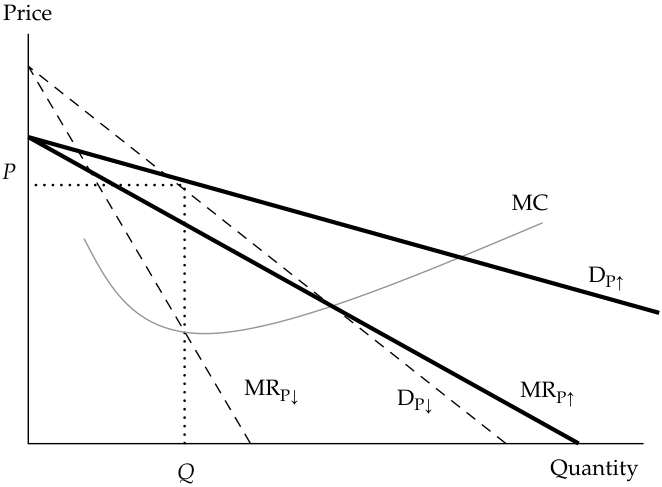
Chú thích hình ảnh: Trục tung là Giá (Price), trục hoành là Sản lượng (Quantity). Hai đường cầu $D_{P\uparrow}$ (thoải hơn) và $D_{P\downarrow}$ (dốc hơn) cắt nhau tại điểm $(Q, P)$. Ứng với hai đường cầu này là hai đường doanh thu cận biên $\text{MR}_{P\uparrow}$ và $\text{MR}_{P\downarrow}$, cùng đường chi phí cận biên MC đi qua khoảng đứt gãy tại sản lượng $Q$.
This oligopolistic pricing strategy results in a kinked demand curve, with the two segments representing the different competitor reactions to price changes. The kink in the demand curve also yields a discontinuous marginal revenue structure, with one part associated with the price increase segment of demand and the other relating to the price decrease segment. Therefore, the firm’s overall demand equals the relevant portion of DP↑ and the relevant portion of DP↓. Exhibit 17 represents the firm’s new demand and marginal revenue schedules. The firm’s demand schedule shown in Exhibit 17 is segment DP↑ and DP↓, where overall demand D = DP↑ + DP↓.
Chiến lược định giá độc quyền nhóm này dẫn đến một đường cầu gãy khúc (kinked demand curve), với hai phân đoạn đại diện cho các phản ứng khác nhau của đối thủ cạnh tranh trước những thay đổi về giá. Điểm gãy (kink) trên đường cầu cũng tạo ra một cấu trúc doanh thu cận biên không liên tục (bị đứt gãy – discontinuous marginal revenue structure), với một phần gắn liền với phân đoạn cầu khi tăng giá và phần kia liên quan đến phân đoạn cầu khi giảm giá. Do đó, đường cầu tổng thể của doanh nghiệp bằng phần liên quan của $D_{P\uparrow}$ cộng với phần liên quan của $D_{P\downarrow}$. Minh họa 17 biểu diễn biểu cầu và biểu doanh thu cận biên mới của doanh nghiệp. Biểu cầu của doanh nghiệp được thể hiện trong Minh họa 17 là phân đoạn $D_{P\uparrow}$ và $D_{P\downarrow}$, trong đó tổng cầu $D = D_{P\uparrow} + D_{P\downarrow}$.
Exhibit 17: Kinked Demand Curve in Oligopoly Market
Minh họa 17: Đường Cầu Gãy khúc trong Thị trường Độc quyền nhóm (Exhibit 17: Kinked Demand Curve in Oligopoly Market)
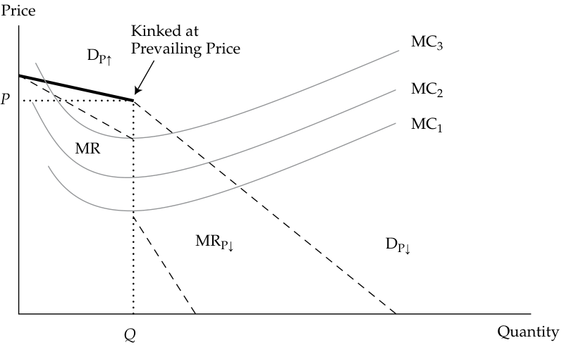
Chú thích hình ảnh: Đường cầu bị gãy khúc tại mức giá hiện hành (Kinked at Prevailing Price $P$) gồm nhánh trên $D_{P\uparrow}$ và nhánh dưới $D_{P\downarrow}$. Đường doanh thu cận biên (MR) có một khoảng trống thẳng đứng (đứt gãy) tại mức sản lượng $Q$, nơi các đường chi phí cận biên $\text{MC}_1, \text{MC}_2$ đi qua mà không làm thay đổi mức giá $P$ và sản lượng $Q$ tối ưu (trừ khi chi phí tăng vọt lên tới $\text{MC}_3$).
Exhibit 17 shows that a wide variety of cost structures are consistent with the prevailing price. If the firm has relatively low marginal costs, MC1, the profit-maximizing pricing rule established earlier, MR = MC, still holds for the oligopoly firm. Marginal cost can rise to MC2 and MC3 before the firm’s profitability is challenged. If the marginal
Minh họa 17 cho thấy một loạt các cấu trúc chi phí khác nhau đều nhất quán với mức giá hiện hành. Nếu doanh nghiệp có chi phí cận biên tương đối thấp, $\text{MC}_1$, quy tắc định giá tối đa hóa lợi nhuận đã thiết lập trước đó là $\text{MR} = \text{MC}$ vẫn đúng đối với doanh nghiệp độc quyền nhóm. Chi phí cận biên có thể tăng lên tới $\text{MC}_2$ và $\text{MC}_3$ trước khi khả năng sinh lời của doanh nghiệp bị thách thức. Nếu đường chi phí cận biên
cost curve MC2 passes through the gap in marginal revenue, the most profitable price and output combination remains unchanged at the prevailing price and original level of output.
$\text{MC}_2$ đi qua khoảng trống đứt gãy (gap) của đường doanh thu cận biên, sự kết hợp giữa mức giá và sản lượng mang lại lợi nhuận cao nhất vẫn giữ nguyên không đổi tại mức giá hiện hành và mức sản lượng ban đầu.
Criticism of the kinked demand curve analysis focuses on its inability to determine what the prevailing price is from the outset. The kinked demand curve analysis helps explain why stable prices have been observed in oligopoly markets and therefore is a useful tool for analyzing such markets. However, because it cannot determine the original prevailing price, it is considered to be an incomplete pricing analysis.
Sự chỉ trích đối với phân tích đường cầu gãy khúc tập trung vào việc mô hình này không có khả năng xác định xem mức giá hiện hành ngay từ ban đầu là bao nhiêu. Phân tích đường cầu gãy khúc giúp giải thích tại sao mức giá ổn định thường được quan sát thấy trong các thị trường độc quyền nhóm và do đó là một công cụ hữu ích để phân tích các thị trường như vậy. Tuy nhiên, bởi vì không thể xác định được mức giá hiện hành ban đầu, nó được coi là một phân tích định giá chưa hoàn chỉnh (incomplete pricing analysis).
The Cournot Assumption
Giả định Cournot (The Cournot Assumption)
The second pricing strategy was first developed by French economist Augustin Cournot in 1838. In the Cournot assumption , each firm determines its profit-maximizing production level by assuming that the other firms’ output will not change. This assumption simplifies pricing strategy because there is no need to guess what the other firm will do to retaliate. It also provides a useful approach to analyzing real-world behavior in oligopoly markets. Take the most basic oligopoly market situation, a two-firm duopoly market. In equilibrium, neither firm has an incentive to change output, given the other firm’s production level. Each firm attempts to maximize its own profits under the assumption that the other firm will continue producing the same level of output in the future. The Cournot strategy assumes that this pattern continues until each firm reaches its long-run equilibrium position. In long-run equilibrium, output and price are stable: No change in price or output will increase profits for either firm.
Chiến lược định giá thứ hai được phát triển lần đầu tiên bởi nhà kinh tế học người Pháp Augustin Cournot vào năm 1838. Trong giả định Cournot (Cournot assumption), mỗi doanh nghiệp xác định mức sản lượng sản xuất tối đa hóa lợi nhuận của mình bằng cách giả định rằng sản lượng đầu ra của các doanh nghiệp khác sẽ không thay đổi. Giả định này làm đơn giản hóa chiến lược định giá bởi vì không cần phải đoán xem doanh nghiệp kia sẽ làm gì để trả đũa. Nó cũng cung cấp một cách tiếp cận hữu ích để phân tích hành vi trong thế giới thực tại các thị trường độc quyền nhóm. Hãy lấy tình huống thị trường độc quyền nhóm cơ bản nhất, một thị trường độc quyền đôi gồm hai doanh nghiệp (two-firm duopoly market). Ở trạng thái cân bằng, không doanh nghiệp nào có động lực để thay đổi sản lượng khi cho trước mức sản xuất của doanh nghiệp kia. Mỗi doanh nghiệp đều cố gắng tối đa hóa lợi nhuận của riêng mình dưới giả định rằng doanh nghiệp kia sẽ tiếp tục sản xuất cùng một mức sản lượng đầu ra trong tương lai. Chiến lược Cournot giả định rằng khuôn mẫu này tiếp tục diễn ra cho đến khi mỗi doanh nghiệp đạt đến vị thế cân bằng dài hạn của mình. Trong trạng thái cân bằng dài hạn, sản lượng và giá bán đều ổn định: Không có sự thay đổi nào về giá bán hay sản lượng có thể làm tăng lợi nhuận cho bất kỳ doanh nghiệp nào trong hai doanh nghiệp.
Consider this example of a duopoly market. Assume that the aggregate market demand has been estimated to as follows:
Hãy xem xét ví dụ này về một thị trường độc quyền đôi (duopoly market). Giả sử rằng tổng cầu thị trường đã được ước tính như sau:
QD = 450 − P .
The supply function is represented by constant marginal cost MC = 30.
Hàm cung được đại diện bởi chi phí cận biên không đổi $\text{MC} = 30$.
The Cournot strategy’s solution can be found by setting QD = q 1 + q 2, where q 1 and q 2 represent the output levels of the two firms. Each firm seeks to maximize profit, and each firm believes the other firm will not change output as it changes its own output (i.e., Cournot’s assumption). The firm will maximize profit where MR = MC. Rearranging the aggregate demand function in terms of price, we get:
Nghiệm của chiến lược Cournot có thể được tìm thấy bằng cách đặt $Q_D = q_1 + q_2$, trong đó $q_1$ và $q_2$ đại diện cho mức sản lượng đầu ra của hai doanh nghiệp. Mỗi doanh nghiệp đều tìm cách tối đa hóa lợi nhuận, và mỗi doanh nghiệp đều tin rằng doanh nghiệp kia sẽ không thay đổi sản lượng khi bản thân nó thay đổi sản lượng của mình (tức là giả định của Cournot). Doanh nghiệp sẽ tối đa hóa lợi nhuận tại nơi $\text{MR} = \text{MC}$. Sắp xếp lại hàm tổng cầu theo biến giá, chúng ta có:
P = 450 − QD = 450 − ( q 1+ q 2), and MC = 30.
Total revenue for each of the two firms is found by multiplying price and quantity:
Tổng doanh thu của mỗi doanh nghiệp trong hai doanh nghiệp được tìm thấy bằng cách lấy giá nhân với sản lượng:
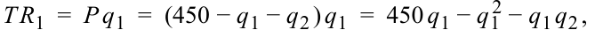
and
và
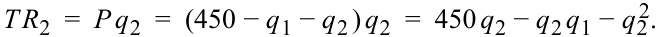
Marginal revenue is defined as the change in total revenue, given a change in sales ( q 1 or q 2). For the profit-maximizing output, set MR = MC, or
Doanh thu cận biên được định nghĩa là mức thay đổi trong tổng doanh thu khi có một sự thay đổi trong doanh số bán ($q_1$ hoặc $q_2$). Để tìm mức sản lượng tối đa hóa lợi nhuận, ta đặt $\text{MR} = \text{MC}$, hay:
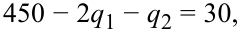
and
và
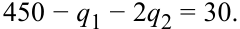
Then find the simultaneous equilibrium for the two firms by solving the two equations with two unknowns:
Sau đó, tìm điểm cân bằng đồng thời cho cả hai doanh nghiệp bằng cách giải hệ hai phương trình với hai ẩn số:
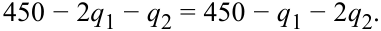
Because q 2 = q 1 under Cournot’s assumption, insert this solution into the demand function and solve as follows:
Bởi vì $q_2 = q_1$ theo giả định của Cournot, hãy thay nghiệm này vào hàm cầu và giải như sau:
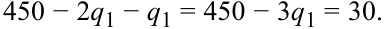
Therefore, q 1 = 140, q 2 = 140, and Q = 280.
Do đó, $q_1 = 140$, $q_2 = 140$, và $Q = 280$.
The price is P = 450 − 280 = 170.
Mức giá là $P = 450 - 280 = 170$.
In the Cournot strategic pricing solution, the market equilibrium price will be 170, and the aggregate output will be 280 units. This result, known as the Cournot equilibrium, differs from the perfectly competitive market equilibrium because the perfectly competitive price will be lower and the perfectly competitive output will be higher. In general, non-competitive markets have higher prices and lower levels of output in equilibrium when compared with perfect competition. In competition, the equilibrium is reached when price equals marginal cost:
Trong nghiệm định giá chiến lược Cournot, giá cân bằng thị trường sẽ là 170, và tổng sản lượng đầu ra sẽ là 280 đơn vị. Kết quả này, được gọi là cân bằng Cournot (Cournot equilibrium), khác với điểm cân bằng thị trường cạnh tranh hoàn hảo bởi vì mức giá cạnh tranh hoàn hảo sẽ thấp hơn và sản lượng cạnh tranh hoàn hảo sẽ cao hơn. Nhìn chung, các thị trường phi cạnh tranh có mức giá cao hơn và mức sản lượng đầu ra thấp hơn ở trạng thái cân bằng khi so sánh với cạnh tranh hoàn hảo. Trong thị trường cạnh tranh hoàn hảo, trạng thái cân bằng đạt được khi giá bán bằng với chi phí cận biên:
PC = MRC = MC, so 450 − Q = 30,
where PC is the competitive firm’s equilibrium price.
trong đó $P_C$ là mức giá cân bằng của doanh nghiệp cạnh tranh hoàn hảo.
Q = 420, and PC = 30.
Exhibit 18 describes the oligopoly, competitive, and monopoly market equilibrium positions, where PM is the monopoly optimum price, PC is the competitive price, and PCournot is the oligopoly price under the Cournot assumption.
Minh họa 18 mô tả các vị thế cân bằng của thị trường độc quyền nhóm, cạnh tranh hoàn hảo, và độc quyền, trong đó $P_M$ là mức giá tối ưu của độc quyền, $P_C$ là mức giá cạnh tranh hoàn hảo, và $P_{\text{Cournot}}$ là mức giá độc quyền nhóm theo giả định Cournot.
Exhibit 18: Cournot Equilibrium in Duopoly Market
Minh họa 18: Cân bằng Cournot trong Thị trường Độc quyền đôi (Exhibit 18: Cournot Equilibrium in Duopoly Market)
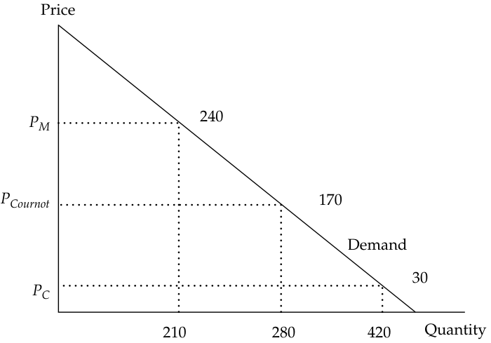
Chú thích hình ảnh: Trục tung là Giá (Price), trục hoành là Sản lượng (Quantity). Trên đường cầu (Demand): - Điểm cân bằng độc quyền: Giá $P_M = 240$, Sản lượng $Q = 210$. - Điểm cân bằng Cournot (độc quyền đôi): Giá $P_{\text{Cournot}} = 170$, Sản lượng $Q = 280$. - Điểm cân bằng cạnh tranh hoàn hảo: Giá $P_C = 30$, Sản lượng $Q = 420$.
In the later discussion regarding monopoly market structure, equilibrium will be established where MR = MC. That solution is also shown in Exhibit 18. The monopoly firm’s demand schedule is the aggregate market demand schedule. Therefore, the solution is
Trong phần thảo luận sau này liên quan đến cấu trúc thị trường độc quyền, điểm cân bằng sẽ được thiết lập tại nơi $\text{MR} = \text{MC}$. Nghiệm đó cũng được thể hiện trong Minh họa 18. Biểu cầu của doanh nghiệp độc quyền chính là biểu tổng cầu thị trường. Do đó, nghiệm số là:
MR = MC.
For the market demand function, total revenue is P × Q = 450 Q − Q2 and MR = 450 − 2 Q ; therefore,
Đối với hàm cầu thị trường, tổng doanh thu là $P \times Q = 450Q - Q^2$ và $\text{MR} = 450 - 2Q$; do đó,
450 − 2 Q = 30 and Q = 210.
From the aggregate demand function, solve for price:
Từ hàm tổng cầu, giải tìm mức giá:
PM = 450 − 210 = 240.
Note that the Cournot solution falls between the competitive equilibrium and the monopoly solution.
Lưu ý rằng nghiệm Cournot nằm ở khoảng giữa điểm cân bằng cạnh tranh hoàn hảo và nghiệm độc quyền.
As the number of firms increases from two to three, from three to four, and so on, the output and price equilibrium positions move toward the competitive equilibrium solution. Historically, this result has been the theoretical basis for the antitrust policies established in the United States.
Khi số lượng doanh nghiệp tăng từ hai lên ba, từ ba lên bốn, v.v., các vị thế cân bằng về sản lượng và giá sẽ dịch chuyển dần về phía nghiệm cân bằng cạnh tranh hoàn hảo. Trong lịch sử, kết quả này từng là cơ sở lý thuyết cho các chính sách chống độc quyền (antitrust policies) được thiết lập tại Hoa Kỳ.
The Nash Equilibrium
Cân bằng Nash (The Nash Equilibrium)
The third pricing strategy is attributed to one of the 1994 Nobel Prize winners, John Nash, who first developed the general concepts. In the previous analysis, the concept of market equilibrium occurs when firms are achieving their optimum remuneration under the circumstances they face. In this optimum environment, the firm has no motive to change price or output level. Existing firms are earning a normal return (zero economic profit), leaving no motive for entry to or exit from the market. All of the firms in the market are producing at the output level at which price equals the average cost of production.
Chiến lược định giá thứ ba được gắn liền với một trong những chủ nhân giải Nobel năm 1994, John Nash, người đầu tiên phát triển các khái niệm tổng quát này. Trong phân tích trước đó, khái niệm cân bằng thị trường xảy ra khi các doanh nghiệp đang đạt được mức thù lao tối ưu trong những hoàn cảnh mà họ phải đối mặt. Trong môi trường tối ưu này, doanh nghiệp không có động cơ để thay đổi giá bán hay mức sản lượng. Các doanh nghiệp hiện hữu đang kiếm được tỷ suất sinh lợi bình thường (lợi nhuận kinh tế bằng không), khiến không còn động cơ nào cho việc gia nhập hay rút lui khỏi thị trường. Tất cả các doanh nghiệp trên thị trường đều đang sản xuất tại mức sản lượng mà ở đó giá bán bằng với chi phí sản xuất bình quân.
In game theory (the set of tools that decision makers use to consider responses by rival decision makers), the Nash equilibrium is present when two or more participants in a non-cooperative game have no incentive to deviate from their respective equilibrium strategies after they have considered and anticipated their opponent’s rational choices or strategies. In the context of oligopoly markets, the Nash equilibrium is an equilibrium defined by the characteristic that none of the oligopolists can increase its profits by unilaterally changing its pricing strategy. The assumption is made that each participating firm does the best it can, given the reactions of its rivals. Each firm anticipates that the other firms will react to any change made by competitors by doing the best they can under the altered circumstances. The firms in the oligopoly market have interdependent actions. Their actions are non-cooperative, with each firm making decisions that maximize its own profits. The firms do not collude in an effort to maximize joint profits. The equilibrium is reached when all firms are doing the best they can, given the actions of their rivals.
Trong lý thuyết trò chơi (game theory) (tập hợp các công cụ mà những người ra quyết định sử dụng để xem xét phản ứng của những người ra quyết định đối thủ), cân bằng Nash (Nash equilibrium) hiện diện khi hai hoặc nhiều người tham gia trong một trò chơi bất hợp tác (non-cooperative game) không có động lực để chệch hướng khỏi các chiến lược cân bằng tương ứng của họ sau khi họ đã cân nhắc và dự tính các lựa chọn hoặc chiến lược hợp lý của đối thủ. Trong bối cảnh thị trường độc quyền nhóm, cân bằng Nash là một trạng thái cân bằng được định nghĩa bởi đặc điểm là không một nhà độc quyền nhóm nào có thể làm tăng lợi nhuận của mình bằng cách đơn phương thay đổi chiến lược định giá. Giả định được đưa ra ở đây là mỗi doanh nghiệp tham gia đều làm tốt nhất có thể khi cho trước các phản ứng của những đối thủ cạnh tranh. Mỗi doanh nghiệp đều dự tính rằng các doanh nghiệp khác sẽ phản ứng lại bất kỳ sự thay đổi nào do đối thủ thực hiện bằng cách làm tốt nhất có thể trong hoàn cảnh đã thay đổi. Các doanh nghiệp trong thị trường độc quyền nhóm có các hành động phụ thuộc lẫn nhau. Hành động của họ mang tính bất hợp tác, trong đó mỗi doanh nghiệp tự đưa ra các quyết định nhằm tối đa hóa lợi nhuận của riêng mình. Các doanh nghiệp không thông đồng với nhau trong nỗ lực tối đa hóa lợi nhuận chung. Trạng thái cân bằng đạt được khi tất cả các doanh nghiệp đều đang làm tốt nhất có thể khi cho trước hành động của các đối thủ.
Exhibit 19 illustrates the duopoly result from the Nash equilibrium. Assume there are two firms in the market, ArcCo and BatCo. ArcCo and BatCo can charge high prices or low prices for the product. The market outcomes are shown in Exhibit 19.
Minh họa 19 minh họa kết quả độc quyền đôi từ cân bằng Nash. Giả sử có hai doanh nghiệp trên thị trường là ArcCo và BatCo. ArcCo và BatCo có thể ấn định mức giá cao (high prices) hoặc mức giá thấp (low prices) cho sản phẩm. Các kết quả thị trường được thể hiện trong Minh họa 19.
Exhibit 19: Nash Equilibrium in Duopoly Market
Minh họa 19: Cân bằng Nash trong Thị trường Độc quyền đôi (Exhibit 19: Nash Equilibrium in Duopoly Market)
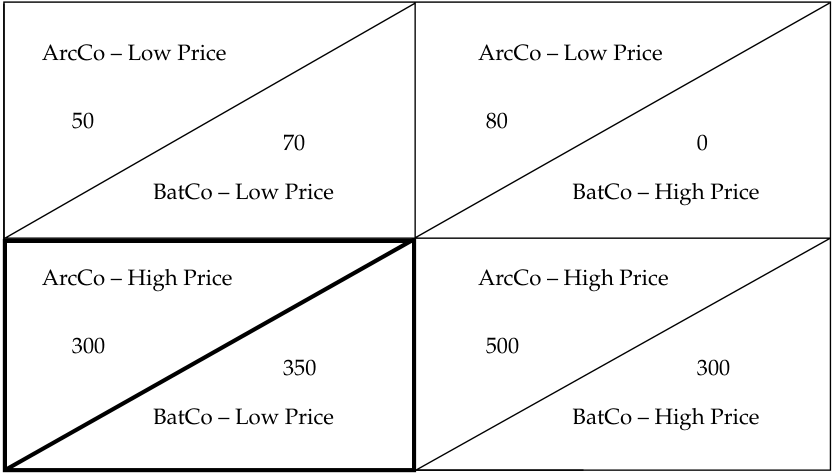
Chú thích hình ảnh: Ma trận lợi nhuận giữa ArcCo và BatCo: - Ô trên bên trái (ArcCo – Giá thấp, BatCo – Giá thấp): ArcCo đạt 50, BatCo đạt 70. - Ô trên bên phải (ArcCo – Giá thấp, BatCo – Giá cao): ArcCo đạt 80, BatCo đạt 0. - Ô dưới bên trái (ArcCo – Giá cao, BatCo – Giá thấp): ArcCo đạt 300, BatCo đạt 350. - Ô dưới bên phải (ArcCo – Giá cao, BatCo – Giá cao): ArcCo đạt 500, BatCo đạt 300.
For example, the top left solution indicates that when both ArcCo and BatCo offer the product at low prices, ArcCo earns a profit of 50 and BatCo earns 70. The top right solution shows that if ArcCo offers the product at a low price, BatCo earns zero profits. The solution with the maximum joint profits is the lower right equilibrium, where both firms charge high prices for the product. Joint profits are 800 in this solution.
Ví dụ, nghiệm ở góc trên bên trái chỉ ra rằng khi cả ArcCo và BatCo đều cung cấp sản phẩm ở mức giá thấp, ArcCo kiếm được khoản lợi nhuận là 50 và BatCo kiếm được 70. Nghiệm ở góc trên bên phải cho thấy rằng nếu ArcCo cung cấp sản phẩm ở mức giá thấp (trong khi BatCo định giá cao), BatCo sẽ có lợi nhuận bằng không. Nghiệm có tổng lợi nhuận chung tối đa là điểm cân bằng ở góc dưới bên phải, nơi cả hai doanh nghiệp đều ấn định mức giá cao cho sản phẩm. Tổng lợi nhuận chung là 800 trong nghiệm này.
The Nash equilibrium, however, requires that each firm behaves in its own best interest. BatCo can improve its position by offering the product at low prices when ArcCo is charging high prices. In the lower left solution, BatCo maximizes its profits at 350. Although ArcCo can earn 500 in its best solution, it can do so only if BatCo also agrees to charge high prices. This option is clearly not in BatCo’s best interest because it can increase its return from 300 to 350 by charging lower prices.
Tuy nhiên, cân bằng Nash đòi hỏi mỗi doanh nghiệp phải hành xử vì lợi ích tốt nhất của chính mình. BatCo có thể cải thiện vị thế của mình bằng cách cung cấp sản phẩm ở mức giá thấp khi ArcCo đang ấn định mức giá cao. Trong nghiệm ở góc dưới bên trái, BatCo tối đa hóa lợi nhuận của mình ở mức 350. Mặc dù ArcCo có thể kiếm được 500 trong nghiệm tốt nhất của mình, họ chỉ có thể làm được điều đó nếu BatCo cũng đồng ý ấn định mức giá cao. Phương án này rõ ràng không mang lại lợi ích tốt nhất cho BatCo bởi vì hãng có thể tăng mức sinh lợi của mình từ 300 lên 350 bằng cách ấn định mức giá thấp hơn.
This scenario brings up the possibility of collusion. If ArcCo agrees to share at least 51 of its 500 when both companies are charging high prices, BatCo should also be willing to charge high prices. In general, such collusion is unlawful in most countries, but it remains a tempting alternative. Clearly, conditions in oligopolistic industries encourage collusion, with a small number of competitors and interdependent pricing behavior. Collusion is motivated by several factors: increased profits, reduced cash flow uncertainty, and improved opportunities to construct barriers to entry.
Kịch bản này làm nảy sinh khả năng thông đồng (collusion). Nếu ArcCo đồng ý chia sẻ ít nhất 51 trong khoản lợi nhuận 500 của mình khi cả hai công ty cùng ấn định giá cao, thì BatCo hẳn cũng sẽ sẵn lòng ấn định giá cao. Nhìn chung, sự thông đồng như vậy là bất hợp pháp ở hầu hết các quốc gia, nhưng nó vẫn luôn là một lựa chọn đầy cám dỗ. Rõ ràng, các điều kiện trong những ngành độc quyền nhóm khuyến khích sự thông đồng, với một số lượng nhỏ các đối thủ cạnh tranh và hành vi định giá phụ thuộc lẫn nhau. Sự thông đồng được thúc đẩy bởi một số yếu tố: gia tăng lợi nhuận, giảm sự bất định của dòng tiền, và cải thiện cơ hội dựng lên các rào cản gia nhập ngành.
When collusive agreements are made openly and formally, the firms involved are called a cartel . In some cases, collusion is successful; other times, the forces of competition overpower collusive behavior. The following six major factors affect the chances of successful collusion:
Khi các thỏa thuận thông đồng được thực hiện một cách công khai và chính thức, các doanh nghiệp tham gia được gọi là một liên minh độc quyền / các-ten (cartel). Trong một số trường hợp, sự thông đồng diễn ra thành công; những lần khác, các lực lượng cạnh tranh lại áp đảo hành vi thông đồng. Sáu yếu tố chính sau đây ảnh hưởng đến cơ hội thông đồng thành công:
1. The number and size distribution of sellers. Successful collusion is more likely if the number of firms is small or if one firm is dominant. Collusion becomes more difficult as the number of firms increases or if the few firms have similar market shares. When the firms have similar market shares, the competitive forces tend to overshadow the benefits of collusion.
1. Số lượng và sự phân bổ quy mô của người bán (The number and size distribution of sellers). Sự thông đồng thành công có nhiều khả năng xảy ra hơn nếu số lượng doanh nghiệp là ít hoặc nếu có một doanh nghiệp giữ vị thế thống lĩnh. Sự thông đồng trở nên khó khăn hơn khi số lượng doanh nghiệp tăng lên hoặc nếu một vài doanh nghiệp đó có thị phần tương đương nhau. Khi các doanh nghiệp có thị phần tương đương nhau, các lực lượng cạnh tranh có xu hướng lấn át những lợi ích của sự thông đồng.
2. The similarity of the products. When the products are homogeneous, collusion is more successful. The more differentiated the products, the less likely it is that collusion will succeed.
2. Sự tương đồng của các sản phẩm (The similarity of the products). Khi các sản phẩm là đồng nhất (homogeneous), sự thông đồng sẽ thành công hơn. Sản phẩm càng có tính khác biệt hóa cao thì khả năng thông đồng thành công càng thấp.
3. Cost structure. The more similar the firms’ cost structures, the more likely it is that collusion will succeed.
3. Cấu trúc chi phí (Cost structure). Cấu trúc chi phí của các doanh nghiệp càng tương đồng nhau thì khả năng thông đồng thành công càng cao.
4. Order size and frequency. Successful collusion is more likely when orders are frequent, received on a regular basis, and relatively small. Frequent small orders, received regularly, diminish the opportunities and rewards for cheating on the collusive agreement.
4. Quy mô và tần suất đơn hàng (Order size and frequency). Sự thông đồng thành công có nhiều khả năng xảy ra hơn khi các đơn hàng diễn ra thường xuyên, được nhận đều đặn và có quy mô tương đối nhỏ. Các đơn hàng nhỏ thường xuyên, nhận được một cách đều đặn sẽ làm giảm cơ hội và phần thưởng cho hành vi gian lận (phá vỡ ngầm) thỏa thuận thông đồng.
5. The strength and severity of retaliation. Oligopolists will be less likely to break the collusive agreement if the threat of retaliation by the other firms in the market is severe.
5. Sức mạnh và mức độ nghiêm trọng của sự trả đũa (The strength and severity of retaliation). Các nhà độc quyền nhóm sẽ ít có khả năng phá vỡ thỏa thuận thông đồng hơn nếu mối đe dọa trả đũa từ các doanh nghiệp khác trên thị trường là rất nghiêm trọng.
6. The degree of external competition. The main reason to enter into the formal collusion is to increase overall profitability of the market, and rising profits attract competition. For example, in 2016 the average extraction cost of a barrel of crude oil from Saudi Arabia was approximately $9, while the average cost from United States shale oil fields was roughly $23.50. The cost of extracting oil from the Canadian tar sands in 2016 was roughly $27 per barrel. It is more likely that crude oil producers in the gulf countries will successfully collude because of the similarity in their cost structures (roughly $9–$10 per barrel). If OPEC had held crude oil prices down below $30 per barrel, there would not have been a viable economic argument to develop US shale oil fields through fracking or expand extraction from Canada’s tar
6. Mức độ cạnh tranh từ bên ngoài (The degree of external competition). Lý do chính để tham gia vào sự thông đồng chính thức là nhằm gia tăng khả năng sinh lời tổng thể của thị trường, và lợi nhuận gia tăng lại thu hút sự cạnh tranh. Ví dụ, vào năm 2016, chi phí khai thác bình quân một thùng dầu thô từ Ả Rập Xê Út là khoảng 9 USD, trong khi chi phí bình quân từ các mỏ dầu đá phiến (shale oil fields) của Hoa Kỳ là khoảng 23,50 USD. Chi phí khai thác dầu từ cát dầu (tar sands) của Canada vào năm 2016 là khoảng 27 USD mỗi thùng. Các nhà sản xuất dầu thô ở các quốc gia vùng Vịnh có nhiều khả năng thông đồng thành công hơn do sự tương đồng trong cấu trúc chi phí của họ (khoảng 9–10 USD mỗi thùng). Nếu OPEC kìm giữ giá dầu thô ở mức dưới 30 USD mỗi thùng, thì đã không có một luận cứ kinh tế khả thi nào để phát triển các mỏ dầu đá phiến của Hoa Kỳ thông qua công nghệ nứt vỡ thủy lực (fracking) hoặc mở rộng khai thác từ cát dầu của Canada.
sands. OPEC’s successful cartel raised crude oil prices to the point at which outside sources became economically possible and, in doing so, increased the competition the cartel faces.
Liên minh các-ten thành công của OPEC đã đẩy giá dầu thô lên tới mức mà các nguồn cung bên ngoài trở nên khả thi về mặt kinh tế, và khi làm như vậy, đã làm gia tăng sự cạnh tranh mà chính các-ten này phải đối mặt.
Other possible oligopoly strategies are associated with decision making based on game theory. The Cournot equilibrium and the Nash equilibrium are examples of specific strategic games. A strategic game is any interdependent behavioral choice employed by individuals or groups that share a common goal (e.g., military units, sports teams, or business decision makers). Another prominent decision-making strategy in oligopolistic markets is the first-mover advantage in the Stackelberg model , named after the economist who first conceptualized the strategy. The important difference between the Cournot model and the Stackelberg model is that Cournot assumes that in a duopoly market, decision making is simultaneous, whereas Stackelberg assumes that decisions are made sequentially. In the Stackelberg model, the leader firm chooses its output first and then the follower firm chooses after observing the leader’s output. It can be shown that the leader firm has a distinct advantage—that is, being a first mover. In the Stackelberg game, the leader can aggressively overproduce to force the follower to scale back its production or even punish or eliminate the weaker opponent. This approach is sometimes referred to as a “top dog” strategy. The leader earns more than in Cournot’s simultaneous game, while the follower earns less. Many other strategic games are possible in oligopoly markets. The important conclusion is that the optimal strategy of the firm depends on what its adversary does. The price and marginal revenue the firm receives for its product depend on both its decisions and its adversary’s decisions.
Các chiến lược độc quyền nhóm khả dĩ khác gắn liền với việc ra quyết định dựa trên lý thuyết trò chơi. Cân bằng Cournot và cân bằng Nash là những ví dụ về các trò chơi chiến lược cụ thể. Một trò chơi chiến lược (strategic game) là bất kỳ sự lựa chọn hành vi phụ thuộc lẫn nhau nào được sử dụng bởi các cá nhân hoặc nhóm có chung một mục tiêu (ví dụ: các đơn vị quân đội, các đội thể thao, hoặc những người ra quyết định kinh doanh). Một chiến lược ra quyết định nổi bật khác trong các thị trường độc quyền nhóm là lợi thế của người đi đầu (first-mover advantage) trong mô hình Stackelberg (Stackelberg model), được đặt theo tên của nhà kinh tế học đầu tiên khái niệm hóa chiến lược này. Sự khác biệt quan trọng giữa mô hình Cournot và mô hình Stackelberg là Cournot giả định rằng trong thị trường độc quyền đôi, việc ra quyết định diễn ra đồng thời (simultaneous), trong khi Stackelberg giả định rằng các quyết định được đưa ra một cách tuần tự (sequentially). Trong mô hình Stackelberg, doanh nghiệp dẫn đầu (leader firm) chọn mức sản lượng của mình trước và sau đó doanh nghiệp theo sau (follower firm) sẽ lựa chọn sau khi đã quan sát sản lượng của người dẫn đầu. Có thể chứng minh rằng doanh nghiệp dẫn đầu có một lợi thế rõ rệt — đó là trở thành người đi trước (first mover). Trong trò chơi Stackelberg, người dẫn đầu có thể chủ động sản xuất vượt mức một cách quyết liệt (aggressively overproduce) nhằm buộc người theo sau phải thu hẹp quy mô sản xuất hoặc thậm chí trừng phạt hay loại bỏ đối thủ yếu hơn. Cách tiếp cận này đôi khi được gọi là chiến lược “kẻ thống trị” (“top dog” strategy). Người dẫn đầu kiếm được nhiều lợi nhuận hơn so với trong trò chơi đồng thời của Cournot, trong khi người theo sau kiếm được ít hơn. Nhiều trò chơi chiến lược khác cũng có thể xảy ra trong các thị trường độc quyền nhóm. Kết luận quan trọng là chiến lược tối ưu của doanh nghiệp phụ thuộc vào những gì đối thủ của nó thực hiện. Mức giá và doanh thu cận biên mà doanh nghiệp nhận được cho sản phẩm của mình phụ thuộc vào cả quyết định của chính nó lẫn quyết định của đối thủ.
Oligopoly Markets: Optimal Price, Output, and Long-Run Equilibrium
Thị trường Độc quyền nhóm: Mức Giá Tối ưu, Sản lượng và Trạng thái Cân bằng Dài hạn (Oligopoly Markets: Optimal Price, Output, and Long-Run Equilibrium)
As in monopolistic competition, the oligopolist does not have a well-defined supply function. That is, there is no way to determine the oligopolist’s optimal levels of output and price independent of demand conditions and competitor’s strategies. However, the oligopolist still has a cost function that determines the optimal level of supply. Therefore, the profit-maximizing rule established earlier is still valid: The level of output that maximizes profit is where MR = MC. The price to charge is determined by what price consumers are willing to pay for that quantity of the product. Therefore, the equilibrium price comes from the demand curve, whereas the output level comes from the relationship between marginal revenue and marginal cost.
Cũng giống như trong cạnh tranh độc quyền, nhà độc quyền nhóm không có một hàm cung được xác định rõ ràng (no well-defined supply function). Nghĩa là, không có cách nào để xác định mức sản lượng và giá bán tối ưu của nhà độc quyền nhóm một cách độc lập với các điều kiện cầu và chiến lược của đối thủ cạnh tranh. Tuy nhiên, nhà độc quyền nhóm vẫn có một hàm chi phí giúp xác định mức cung tối ưu. Do đó, quy tắc tối đa hóa lợi nhuận đã thiết lập trước đó vẫn còn nguyên giá trị: Mức sản lượng giúp tối đa hóa lợi nhuận là nơi $\text{MR} = \text{MC}$. Mức giá cần ấn định được xác định bởi mức giá mà người tiêu dùng sẵn lòng chi trả cho số lượng sản phẩm đó. Do đó, giá cân bằng đến từ đường cầu, trong khi mức sản lượng đầu ra đến từ mối quan hệ giữa doanh thu cận biên và chi phí cận biên.
Consider an oligopoly market in which one of the firms is dominant and thus able to be the price leader. Dominant firms generally have 40 percent or greater market share. When one firm dominates an oligopoly market, it does so because it has greater capacity, has a lower cost structure, was first to market, or has greater customer loyalty than other firms in the market.
Hãy xem xét một thị trường độc quyền nhóm trong đó một trong các doanh nghiệp giữ vị thế thống lĩnh (dominant) và nhờ đó có khả năng trở thành người dẫn dắt giá (price leader). Các doanh nghiệp thống lĩnh nhìn chung nắm giữ từ 40% thị phần trở lên. Khi một doanh nghiệp thống lĩnh một thị trường độc quyền nhóm, họ làm được như vậy bởi vì họ có công suất lớn hơn, có cấu trúc chi phí thấp hơn, là người đầu tiên gia nhập thị trường (first to market), hoặc có lòng trung thành của khách hàng lớn hơn so với các doanh nghiệp khác trên thị trường.
Assuming there is no collusion, the dominant firm becomes the price maker, and therefore its actions are similar to monopoly behavior in its segment of the market. The other firms in the market follow the pricing patterns of the dominant firm. Why wouldn’t the price followers attempt to gain market share by undercutting the dominant firm’s price? The most common explanation is that the dominant firm’s supremacy often stems from a lower cost of production. Usually, the price followers would rather charge a price that is even higher than the dominant firm’s price choice. If they attempt to undercut the dominant firm, the followers risk a price war with a lower-cost producer that can threaten their survival. Some believe that one explanation for the price leadership position of the dominant firm is simply convenience. Only one firm has to make the pricing decisions, and the others can simply follow its lead.
Giả sử không có sự thông đồng, doanh nghiệp thống lĩnh trở thành người định giá (price maker), và do đó hành động của họ tương tự như hành vi độc quyền trong phân khúc thị trường của mình. Các doanh nghiệp khác trên thị trường đi theo khuôn mẫu định giá của doanh nghiệp thống lĩnh. Tại sao những doanh nghiệp theo sau về giá (price followers) không cố gắng giành thị phần bằng cách phá giá thấp hơn mức giá của doanh nghiệp thống lĩnh? Lời giải thích phổ biến nhất là ưu thế vượt trội của doanh nghiệp thống lĩnh thường bắt nguồn từ chi phí sản xuất thấp hơn. Thông thường, các doanh nghiệp theo sau về giá thậm chí còn muốn ấn định một mức giá cao hơn cả lựa chọn giá của doanh nghiệp thống lĩnh. Nếu họ cố tình phá giá thấp hơn doanh nghiệp thống lĩnh, những người theo sau sẽ đối mặt với rủi ro xảy ra một cuộc chiến về giá với một nhà sản xuất có chi phí thấp hơn – điều có thể đe dọa sự sống còn của chính họ. Một số người tin rằng một lời giải thích cho vị thế dẫn dắt giá của doanh nghiệp thống lĩnh chỉ đơn giản là sự thuận tiện (convenience). Chỉ cần một doanh nghiệp phải đưa ra các quyết định định giá, và những doanh nghiệp khác có thể đơn giản làm theo sự dẫn dắt đó.
Exhibit 20 establishes the dominant firm’s pricing decision. The dominant firm’s demand schedule, DL, is a substantial share of the total market demand, DT. The low-cost position of the dominant firm is represented by its marginal cost, MCL. The sum of the marginal costs of the price followers is established as ΣMCF and represents a higher cost of production than that of the price leader.
Minh họa 20 thiết lập quyết định định giá của doanh nghiệp thống lĩnh. Biểu cầu của doanh nghiệp thống lĩnh, $D_L$, chiếm một tỷ trọng đáng kể trong tổng cầu thị trường, $D_T$. Vị thế chi phí thấp của doanh nghiệp thống lĩnh được đại diện bởi chi phí cận biên của nó, $\text{MC}_L$. Tổng chi phí cận biên của các doanh nghiệp theo sau về giá được thiết lập là $\sum \text{MC}_F$ và thể hiện mức chi phí sản xuất cao hơn so với người dẫn dắt giá.
Exhibit 20: Dominant Oligopolist’s Price Leadership
Minh họa 20: Sự Dẫn dắt Giá của Nhà Độc quyền nhóm Thống lĩnh (Exhibit 20: Dominant Oligopolist’s Price Leadership)
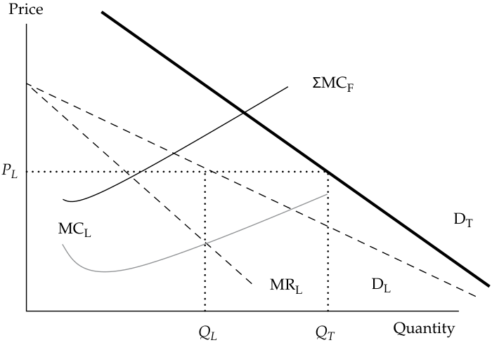
Chú thích hình ảnh: Trục tung là Giá (Price), trục hoành là Sản lượng (Quantity). Đường chi phí cận biên của doanh nghiệp dẫn đầu ($\text{MC}_L$) cắt đường doanh thu cận biên của nó ($\text{MR}_L$) tại sản lượng $Q_L$. Gióng lên đường cầu của doanh nghiệp dẫn đầu ($D_L$) xác định mức giá $P_L$. Tại mức giá $P_L$, tổng lượng cầu thị trường trên đường $D_T$ là $Q_T$, trong đó doanh nghiệp dẫn đầu cung ứng $Q_L$ và các doanh nghiệp theo sau (với tổng chi phí cận biên $\sum \text{MC}_F$) cung ứng phần còn lại $Q_F = Q_T - Q_L$.
An important reason why the total demand curve and the leader demand curve are not parallel is illustrated in Exhibit 20: The leader is the low-cost producer. Therefore, as price decreases, fewer of the smaller suppliers will be able to profitably remain in the market, and several will exit because thwey do not want to sell below cost. Therefore, the leader will have a larger market share as P decreases, which implies that QL increases at a low price, exactly as shown by a steeper DT in the diagram.
Một lý do quan trọng giải thích tại sao đường tổng cầu và đường cầu của doanh nghiệp dẫn đầu không song song với nhau được minh họa trong Minh họa 20: Doanh nghiệp dẫn đầu là nhà sản xuất có chi phí thấp. Do đó, khi giá giảm xuống, sẽ có ít nhà cung cấp nhỏ hơn có thể trụ lại thị trường một cách có lãi, và một số sẽ rời bỏ thị trường bởi vì họ không muốn bán dưới mức chi phí. Vì vậy, doanh nghiệp dẫn đầu sẽ có thị phần lớn hơn khi giá $P$ giảm xuống, điều này hàm ý rằng $Q_L$ tăng lên ở mức giá thấp, đúng như được thể hiện bởi đường $D_T$ dốc hơn trong biểu đồ.
The price leader identifies its profit-maximizing output where MRL = MCL, at output QL. This is the quantity it wants to supply; however, the price it will charge is determined by its segment of the total demand function, DL. At price PL, the dominant firm will supply quantity QL of total demand, DT. The price followers will supply the difference to the market, (QT − QL) = QF. Therefore, neither the dominant firm nor the follower firms have a single functional relationship that determines the quantity supplied at various prices.
Người dẫn dắt giá xác định mức sản lượng tối đa hóa lợi nhuận của mình tại nơi $\text{MR}_L = \text{MC}_L$, ở mức sản lượng $Q_L$. Đây là mức sản lượng mà doanh nghiệp này muốn cung ứng; tuy nhiên, mức giá mà hãng sẽ ấn định được xác định bởi phân đoạn của hãng trong hàm tổng cầu, $D_L$. Tại mức giá $P_L$, doanh nghiệp thống lĩnh sẽ cung ứng mức sản lượng $Q_L$ trong tổng cầu $D_T$. Các doanh nghiệp theo sau về giá sẽ cung ứng phần chênh lệch cho thị trường, $(Q_T - Q_L) = Q_F$. Do đó, cả doanh nghiệp thống lĩnh lẫn các doanh nghiệp theo sau đều không có một mối quan hệ hàm số đơn lẻ nào giúp xác định lượng cung ứng tại các mức giá khác nhau.
Optimal Price and Output in Oligopoly Markets
Mức Giá và Sản lượng Tối ưu trong Thị trường Độc quyền nhóm (Optimal Price and Output in Oligopoly Markets)
As this discussion shows, clearly no single optimum price and output analysis fits all oligopoly market situations. The interdependence among the few firms that make up the oligopoly market provides a complex set of pricing alternatives, depending on the circumstances in each market. In the case of the kinked demand curve, the optimum price is the prevailing price at the kink in the demand function. As noted, however, the kinked demand curve analysis does not provide insight into what established the prevailing price in the first place.
Như phần thảo luận này cho thấy, rõ ràng không có một phân tích mức giá và sản lượng tối ưu đơn lẻ nào phù hợp với mọi tình huống thị trường độc quyền nhóm. Sự phụ thuộc lẫn nhau giữa một vài doanh nghiệp cấu thành nên thị trường độc quyền nhóm tạo ra một tập hợp phức tạp các phương án định giá, tùy thuộc vào hoàn cảnh ở từng thị trường. Trong trường hợp đường cầu gãy khúc, mức giá tối ưu là mức giá hiện hành tại điểm gãy trong hàm cầu. Tuy nhiên, như đã lưu ý, phân tích đường cầu gãy khúc không cung cấp góc nhìn sâu sắc về điều gì đã thiết lập nên mức giá hiện hành ngay từ ban đầu.
Perhaps the case of the dominant firm, with the other firms following the price leader, is the most obvious. In that case, the optimal price is determined at the output level where MR = MC. The profit-maximizing price is then determined by the output position of the segment of the demand function faced by the dominant firm. The price
Có lẽ trường hợp doanh nghiệp thống lĩnh, với các doanh nghiệp khác đi theo người dẫn dắt giá, là trường hợp rõ ràng nhất. Trong trường hợp đó, mức giá tối ưu được xác định tại mức sản lượng nơi $\text{MR} = \text{MC}$. Mức giá tối đa hóa lợi nhuận sau đó được xác định bởi vị trí sản lượng trên phân đoạn hàm cầu mà doanh nghiệp thống lĩnh phải đối mặt. Những doanh nghiệp
followers have little incentive to change the leader’s price. In the case of the Cournot assumption, each firm assumes that the other firms will not alter their output following the dominant firm’s selection of its price and output level.
theo sau về giá có rất ít động lực để thay đổi mức giá của người dẫn đầu. Trong trường hợp giả định Cournot, mỗi doanh nghiệp giả định rằng các doanh nghiệp khác sẽ không thay đổi sản lượng của họ sau khi doanh nghiệp thống lĩnh lựa chọn mức giá và sản lượng của mình.
Therefore, again, the optimum price is determined by the output level where MR = MC. In the case of the Nash equilibrium, each firm will react to the circumstances it faces, maximizing its own profit. These adjustments continue until prices and levels of output are stable. Because of the interdependence, the individual firm’s price and output level remain uncertain.
Do đó, một lần nữa, mức giá tối ưu được xác định bởi mức sản lượng nơi $\text{MR} = \text{MC}$. Trong trường hợp cân bằng Nash, mỗi doanh nghiệp sẽ phản ứng với những hoàn cảnh mà mình đối mặt, nhằm tối đa hóa lợi nhuận của chính mình. Những điều chỉnh này tiếp tục diễn ra cho đến khi giá bán và mức sản lượng đạt trạng thái ổn định. Do sự phụ thuộc lẫn nhau, mức giá và mức sản lượng của từng doanh nghiệp cá lẻ vẫn mang tính bất định.
Factors Affecting Long-Run Equilibrium in Oligopoly Markets
Các Yếu tố Ảnh hưởng đến Trạng thái Cân bằng Dài hạn trong Thị trường Độc quyền nhóm (Factors Affecting Long-Run Equilibrium in Oligopoly Markets)
Long-run economic profits are possible for firms operating in oligopoly markets. History has shown that, however, the market share of the dominant firm declines. Profits attract entry by other firms into the oligopoly market. Over time, the marginal costs of the entrant firms decrease because they adopt more efficient production techniques, the dominant firm’s demand and marginal revenue shrink, and the profitability of the dominant firm declines. In the early 1900s, J.P. Morgan, Elbert Gary, Andrew Carnegie, and Charles M. Schwab created the United States Steel Corporation (US Steel). When it was first formed in 1901, US Steel controlled 66 percent of the market. By 1920, US Steel’s market share had declined to 46 percent, and by 1925 its market share was 42 percent.
Lợi nhuận kinh tế dài hạn là điều khả thi đối với các doanh nghiệp hoạt động trong thị trường độc quyền nhóm. Tuy nhiên, lịch sử đã cho thấy thị phần của doanh nghiệp thống lĩnh sẽ suy giảm theo thời gian. Lợi nhuận thu hút sự gia nhập của các doanh nghiệp khác vào thị trường độc quyền nhóm. Theo thời gian, chi phí cận biên của các doanh nghiệp mới gia nhập giảm xuống bởi vì họ áp dụng các kỹ thuật sản xuất hiệu quả hơn, làm cho cầu và doanh thu cận biên của doanh nghiệp thống lĩnh bị thu hẹp lại, và khả năng sinh lời của doanh nghiệp thống lĩnh sụt giảm. Vào đầu những năm 1900, J.P. Morgan, Elbert Gary, Andrew Carnegie, và Charles M. Schwab đã sáng lập nên Tập đoàn Thép Hoa Kỳ (United States Steel Corporation – US Steel). Khi mới được thành lập vào năm 1901, US Steel kiểm soát tới 66% thị trường. Đến năm 1920, thị phần của US Steel đã giảm xuống còn 46%, và đến năm 1925 thị phần của hãng là 42%.
In the long run, optimal pricing strategy must include the reactions of rival firms. History has proven that pricing wars should be avoided because any gains in market share are temporary. Decreasing prices to drive away competitors lowers total revenue to all participants in the oligopoly market. Innovation may be a way—though sometimes an uneconomical one—to maintain market leadership.
Trong dài hạn, chiến lược định giá tối ưu phải tính đến phản ứng của các doanh nghiệp đối thủ. Lịch sử đã chứng minh rằng nên tránh các cuộc chiến về giá bởi vì bất kỳ sự gia tăng thị phần nào đạt được cũng chỉ mang tính tạm thời. Việc giảm giá để đuổi các đối thủ cạnh tranh sẽ làm giảm tổng doanh thu của tất cả các thành viên tham gia trong thị trường độc quyền nhóm. Đổi mới sáng tạo (innovation) có thể là một cách thức — dù đôi khi là một cách thức không kinh tế — để duy trì vị thế dẫn đầu thị trường.
OLIGOPOLIES: APPEARANCE VERSUS BEHAVIOR
ĐỘC QUYỀN NHÓM: HÌNH THỨC BÊN NGOÀI SO VỚI HÀNH VI THỰC TẾ (OLIGOPOLIES: APPEARANCE VERSUS BEHAVIOR)
When is an oligopoly not an oligopoly? There are two extreme cases of this situation. A normal oligopoly has a few firms producing a differentiated good, and this differentiation gives them pricing power.
Khi nào một thị trường độc quyền nhóm lại không phải là độc quyền nhóm? Có hai trường hợp cực đoan cho tình huống này. Một thị trường độc quyền nhóm thông thường có một vài doanh nghiệp sản xuất một hàng hóa có sự khác biệt hóa, và sự khác biệt hóa này mang lại cho họ quyền lực định giá.
At one end of the spectrum, we have the oligopoly with a credible threat of entry. In practice, if the oligopolists are producing a good or service that can be easily replicated, has limited economies of scale, and is not protected by brand recognition or patents, they will not be able to charge high prices. The easier it is for a new supplier to enter the market, the lower the margins. In practice, this oligopoly will behave very much like a perfectly competitive market.
Ở một đầu của dải phổ, chúng ta có thị trường độc quyền nhóm với mối đe dọa gia nhập đáng tin cậy (credible threat of entry). Trên thực tế, nếu các nhà độc quyền nhóm đang sản xuất một hàng hóa hoặc dịch vụ có thể dễ dàng bị sao chép, có tính kinh tế theo quy mô hạn chế, và không được bảo vệ bởi nhận diện thương hiệu hay bằng sáng chế, họ sẽ không thể ấn định mức giá cao. Một nhà cung cấp mới càng dễ dàng gia nhập thị trường bao nhiêu thì biên lợi nhuận sẽ càng thấp bấy nhiêu. Trên thực tế, thị trường độc quyền nhóm này sẽ hành xử rất giống với một thị trường cạnh tranh hoàn hảo.
At the opposite end of the spectrum, we have the case of the cartel. Here, the oligopolists collude and act as if they were a single firm. In practice, a very effective cartel enacts a cooperative strategy. Instead of going to a Nash equilibrium, the cartel participants go to the more lucrative (for them) cooperative equilibrium.
Ở đầu đối diện của dải phổ, chúng ta có trường hợp của liên minh độc quyền (các-ten – cartel). Tại đây, các nhà độc quyền nhóm thông đồng với nhau và hành động như thể họ là một doanh nghiệp duy nhất. Trên thực tế, một các-ten hoạt động rất hiệu quả sẽ thực thi một chiến lược hợp tác (cooperative strategy). Thay vì đi đến điểm cân bằng Nash, các thành viên tham gia các-ten đi đến điểm cân bằng hợp tác mang lại nhiều lợi nhuận hơn (cho họ).
A cartel may be explicit (i.e., based on a contract) or implicit (based on signals). An example of signals in a duopoly would be that one of the firms reduces its prices and the other does not. Because the firm not cutting prices refuses to start a price war, the firm that cut prices may interpret this signal as a “suggestion” to raise prices to a higher level than before, so that profits may increase for both.
Một các-ten có thể mang tính công khai rõ ràng (explicit, tức là dựa trên một hợp đồng) hoặc ngầm định (implicit, dựa trên các tín hiệu – signals). Một ví dụ về các tín hiệu trong thị trường độc quyền đôi sẽ là việc một trong hai doanh nghiệp giảm giá bán và doanh nghiệp kia thì không. Bởi vì doanh nghiệp không cắt giảm giá từ chối khơi mào một cuộc chiến về giá, doanh nghiệp đã cắt giảm giá có thể diễn giải tín hiệu này như một “lời đề nghị” cùng nâng giá lên một mức cao hơn trước đó, để lợi nhuận của cả hai cùng tăng lên.
-
QUESTION SET 1. Oligopolistic pricing strategy most likely results in a demand curve that is: A. kinked. B. vertical. C. horizontal.
-
Solution: A is correct. The oligopolist faces two different demand structures, one for price increases and another for price decreases. Competitors will lower prices to match a price reduction, but will not match a price increase. The result is a kinked demand curve.
-
- Collusion is less likely in a market when: A. the product is homogeneous. B. companies have similar market shares. C. the cost structures of companies are similar.
-
Solution: B is correct. When companies have similar market shares, competitive forces tend to outweigh the benefits of collusion.
-
- In an industry composed of three companies, which are small-scale manufacturers of an easily replicable product unprotected by brand recognition or patents, the most representative model of company behavior is: A. oligopoly. B. perfect competition. C. monopolistic competition.
-
Solution: B is correct. The credible threat of entry holds down prices and multiple incumbents are offering undifferentiated products.
-
- Deep River Manufacturing is one of many companies in an industry that makes a food product. Deep River units are identical up to the point they are labeled. Deep River produces its labeled brand, which sells for $2.20 per unit, and “house brands” for seven different grocery chains, which sell for $2.00 per unit. Each grocery chain sells both the Deep River brand and its house brand. The best characterization of Deep River’s market is: A. oligopoly. B. perfect competition. C. monopolistic competition.
-
Solution: C is correct. There are many competitors in the market, but some product differentiation exists, as the price differential between Deep River’s brand and the house brands indicates.
-
BỘ CÂU HỎI (QUESTION SET) 1. Chiến lược định giá độc quyền nhóm có khả năng nhất dẫn đến một đường cầu có dạng: A. gãy khúc (kinked). B. thẳng đứng (vertical). C. nằm ngang (horizontal).
-
Lời giải (Solution): A là đáp án đúng. Nhà độc quyền nhóm phải đối mặt với hai cấu trúc cầu khác nhau, một cấu trúc cho việc tăng giá và một cấu trúc khác cho việc giảm giá. Các đối thủ cạnh tranh sẽ hạ giá để chạy theo một đợt giảm giá, nhưng sẽ không tăng giá theo một đợt tăng giá. Kết quả là tạo ra một đường cầu gãy khúc (kinked demand curve).
-
- Sự thông đồng (collusion) ít có khả năng xảy ra hơn trên một thị trường khi: A. sản phẩm là đồng nhất (homogeneous). B. các công ty có thị phần tương đương nhau (similar market shares). C. cấu trúc chi phí của các công ty tương tự nhau.
-
Lời giải (Solution): B là đáp án đúng. Khi các công ty có thị phần tương đương nhau, các lực lượng cạnh tranh có xu hướng lấn át những lợi ích của sự thông đồng.
-
- Trong một ngành bao gồm ba công ty là những nhà sản xuất quy mô nhỏ của một sản phẩm dễ bị sao chép và không được bảo vệ bởi nhận diện thương hiệu hay bằng sáng chế, mô hình đại diện đúng nhất cho hành vi của công ty là: A. độc quyền nhóm (oligopoly). B. cạnh tranh hoàn hảo (perfect competition). C. cạnh tranh độc quyền (monopolistic competition).
-
Lời giải (Solution): B là đáp án đúng. Mối đe dọa gia nhập đáng tin cậy (credible threat of entry) kìm giữ giá bán ở mức thấp và nhiều doanh nghiệp hiện hữu đang cung cấp các sản phẩm không có sự khác biệt hóa.
-
- Deep River Manufacturing là một trong nhiều công ty trong một ngành sản xuất thực phẩm. Các đơn vị sản phẩm của Deep River hoàn toàn giống hệt nhau cho đến khâu dán nhãn. Deep River sản xuất thương hiệu có dán nhãn riêng của mình với giá bán 2,20 USD mỗi đơn vị, và “thương hiệu riêng của nhà bán lẻ” (“house brands”) cho bảy chuỗi cửa hàng tạp hóa khác nhau với giá bán 2,00 USD mỗi đơn vị. Mỗi chuỗi cửa hàng tạp hóa đều bán cả thương hiệu Deep River lẫn thương hiệu riêng của chuỗi mình. Sự mô tả đúng nhất về thị trường của Deep River là: A. độc quyền nhóm (oligopoly). B. cạnh tranh hoàn hảo (perfect competition). C. cạnh tranh độc quyền (monopolistic competition).
-
Lời giải (Solution): C là đáp án đúng. Có rất nhiều đối thủ cạnh tranh trên thị trường, nhưng tồn tại một mức độ khác biệt hóa sản phẩm nhất định, như được chỉ ra bởi mức chênh lệch giá giữa thương hiệu của Deep River và các thương hiệu riêng của nhà bán lẻ.
The following information relates to questions 5 & 6
Thông tin sau đây liên quan đến câu hỏi 5 & 6 (The following information relates to questions 5 & 6)
SigmaSoft and ThetaTech are the dominant makers of computer system software. The market has two components: a large mass-market component in which demand is price sensitive, and a smaller performance-oriented component in which demand is much less price sensitive. SigmaSoft’s product is considered to be technically superior. Each company can choose one of two strategies:
SigmaSoft và ThetaTech là những nhà sản xuất thống lĩnh về phần mềm hệ thống máy tính. Thị trường có hai phân khúc cấu thành: một phân khúc thị trường đại chúng (mass-market component) lớn, nơi nhu cầu nhạy cảm với giá, và một phân khúc nhỏ hơn định hướng theo hiệu năng (performance-oriented component), nơi nhu cầu ít nhạy cảm với giá hơn rất nhiều. Sản phẩm của SigmaSoft được coi là vượt trội về mặt kỹ thuật. Mỗi công ty có thể chọn một trong hai chiến lược:
Open architecture (Open): Mass market focus allowing other software venders to develop products for its platform.
Kiến trúc mở (Open architecture – Open): Tập trung vào thị trường đại chúng, cho phép các nhà cung cấp phần mềm khác phát triển sản phẩm cho nền tảng của mình.
Proprietary (Prop): Allow only its own software applications to run on its platform.
Độc quyền sở hữu riêng (Proprietary – Prop): Chỉ cho phép các ứng dụng phần mềm của chính hãng chạy trên nền tảng của mình.
- Depending upon the strategy each company selects, their profits would be:
- Tùy thuộc vào chiến lược mà mỗi công ty lựa chọn, lợi nhuận của họ sẽ là:
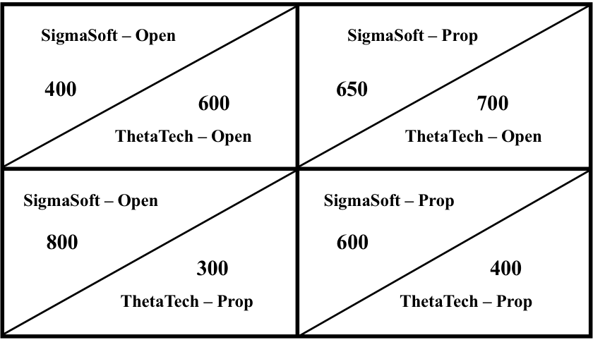
Chú thích hình ảnh: Ma trận lợi nhuận giữa SigmaSoft và ThetaTech: - Ô trên bên trái (SigmaSoft – Mở, ThetaTech – Mở): SigmaSoft đạt 400, ThetaTech đạt 600. - Ô trên bên phải (SigmaSoft – Độc quyền riêng, ThetaTech – Mở): SigmaSoft đạt 650, ThetaTech đạt 700. - Ô dưới bên trái (SigmaSoft – Mở, ThetaTech – Độc quyền riêng): SigmaSoft đạt 800, ThetaTech đạt 300. - Ô dưới bên phải (SigmaSoft – Độc quyền riêng, ThetaTech – Độc quyền riêng): SigmaSoft đạt 600, ThetaTech đạt 400.
The Nash equilibrium for these companies is:
Điểm cân bằng Nash (Nash equilibrium) đối với các công ty này là:
-
A. proprietary for SigmaSoft and proprietary for ThetaTech.
-
B. open architecture for SigmaSoft and proprietary for ThetaTech.
-
C. proprietary for SigmaSoft and open architecture for ThetaTech.
-
Solution:
-
A. độc quyền sở hữu riêng (proprietary) cho SigmaSoft và độc quyền sở hữu riêng (proprietary) cho ThetaTech.
-
B. kiến trúc mở (open architecture) cho SigmaSoft và độc quyền sở hữu riêng (proprietary) cho ThetaTech.
-
C. độc quyền sở hữu riêng (proprietary) cho SigmaSoft và kiến trúc mở (open architecture) cho ThetaTech.
-
Lời giải (Solution):
C is correct. In the Nash model, each company considers the other’s reaction in selecting its strategy. In equilibrium, neither company has an incentive to change its strategy. ThetaTech is better off with open architecture regardless of what SigmaSoft decides. Given this choice, SigmaSoft is better off with a proprietary platform. Neither company will change its decision unilaterally.
C là đáp án đúng. Trong mô hình Nash, mỗi công ty đều xem xét phản ứng của công ty kia khi lựa chọn chiến lược của mình. Ở trạng thái cân bằng, không công ty nào có động lực để thay đổi chiến lược. ThetaTech luôn đạt kết quả tốt hơn với kiến trúc mở bất kể SigmaSoft quyết định như thế nào (600 > 300 khi SigmaSoft chọn Open; và 700 > 400 khi SigmaSoft chọn Prop). Khi biết trước lựa chọn này của ThetaTech, SigmaSoft đạt kết quả tốt hơn với nền tảng độc quyền sở hữu riêng (650 > 400). Không công ty nào sẽ đơn phương thay đổi quyết định của mình.
6
6
DETERMINING MARKET STRUCTURE
XÁC ĐỊNH CẤU TRÚC THỊ TRƯỜNG (DETERMINING MARKET STRUCTURE)
identify the type of market structure within which a firm operates and describe the use and limitations of concentration measures
xác định loại cấu trúc thị trường (market structure) mà trong đó một doanh nghiệp hoạt động và mô tả việc sử dụng cũng như hạn chế của các thước đo mức độ tập trung (concentration measures)
Monopoly markets and other situations in which companies have pricing power can be inefficient because producers constrain output to cause an increase in prices. Therefore, less of the good will be consumed, and it will be sold at a higher price, which is generally inefficient for the overall market. As a result, many countries have introduced competition law to regulate the degree of competition in many industries.
Các thị trường độc quyền và các tình huống khác mà ở đó các công ty có quyền lực định giá có thể kém hiệu quả bởi vì các nhà sản xuất hạn chế sản lượng đầu ra để gây ra sự gia tăng về giá bán. Do đó, lượng hàng hóa được tiêu thụ sẽ ít hơn và hàng hóa sẽ được bán ở mức giá cao hơn, điều này nhìn chung là không hiệu quả đối với tổng thể thị trường. Kết quả là nhiều quốc gia đã ban hành luật cạnh tranh (competition law) nhằm điều tiết mức độ cạnh tranh trong nhiều ngành kinh tế.
Market power in the real world is not always as clear as it is in textbook examples. Governments and regulators often have the difficult task of measuring market power and establishing whether a firm has a dominant position that may resemble a monopoly. A few historical examples of this are as follows:
Sức mạnh thị trường (market power) trong thế giới thực không phải lúc nào cũng rõ ràng như trong các ví dụ sách giáo khoa. Các chính phủ và cơ quan quản lý thường có nhiệm vụ đầy khó khăn là đo lường sức mạnh thị trường và xác lập xem liệu một doanh nghiệp có nắm giữ vị thế thống lĩnh gần giống như độc quyền hay không. Một vài ví dụ lịch sử về vấn đề này như sau:
1. In the 1990s, US regulators prosecuted agricultural corporation Archer Daniels Midland for conspiring with Japanese competitors to fix the price of lysine, an amino acid used as an animal feed additive. The antitrust action resulted in a settlement that involved more than US$100 million in fines paid by the cartel members.
1. Vào những năm 1990, các cơ quan quản lý Hoa Kỳ đã truy tố tập đoàn nông nghiệp Archer Daniels Midland vì âm mưu thông đồng với các đối thủ cạnh tranh Nhật Bản nhằm ấn định giá (fix the price) lysine – một loại axit amin được sử dụng làm phụ gia thức ăn chăn nuôi. Vụ kiện chống độc quyền này đã dẫn đến một thỏa thuận dàn xếp bao gồm hơn 100 triệu USD tiền phạt do các thành viên các-ten chi trả.
2. In the 1970s, US antitrust authorities broke up the local telephone monopoly, leaving AT&T the long-distance business (and opening that business to competitors), and required AT&T to divest itself of the local telephone companies it owned. This antitrust decision brought competition, innovation, and lower prices to the US telephone market.
2. Vào những năm 1970, các cơ quan chống độc quyền Hoa Kỳ đã chia tách thế độc quyền điện thoại nội hạt, chỉ để lại cho AT&T mảng kinh doanh điện thoại đường dài (đồng thời mở cửa mảng kinh doanh đó cho các đối thủ cạnh tranh), và yêu cầu AT&T phải thoái vốn khỏi các công ty điện thoại nội hạt mà hãng sở hữu. Quyết định chống độc quyền này đã mang lại sự cạnh tranh, đổi mới sáng tạo và mức giá thấp hơn cho thị trường điện thoại Hoa Kỳ.
3. European regulators (specifically, the European Commission) have affected the mergers and monopoly positions of European corporations (as in the case of the companies Roche, Rhone-Poulenc, and BASF, which were at the center of a vitamin price-fixing case) as well as non-European companies (such as Intel) that do business in Europe. Moreover, the merger between the US company General Electric and the European company Honeywell was denied by the European Commission on grounds of excessive market concentration.
3. Các cơ quan quản lý châu Âu (cụ thể là Ủy ban Châu Âu – European Commission) đã tác động đến các thương vụ sáp nhập và vị thế độc quyền của các tập đoàn châu Âu (như trong trường hợp của các công ty Roche, Rhone-Poulenc, và BASF – những công ty nằm ở tâm điểm của vụ án ấn định giá vitamin) cũng như các công ty ngoài châu Âu (chẳng hạn như Intel) có hoạt động kinh doanh tại châu Âu. Hơn nữa, thương vụ sáp nhập giữa công ty Hoa Kỳ General Electric và công ty châu Âu Honeywell đã bị Ủy ban Châu Âu từ chối với lý do gây ra sự tập trung thị trường quá mức (excessive market concentration).
Quantifying excessive market concentration is difficult. Sometimes, regulators need to measure whether something that has not yet occurred might generate excessive market power. For example, a merger between two companies might allow the combined company to be a monopolist or quasi-monopolist in a certain market.
Việc lượng hóa mức độ tập trung thị trường quá mức là rất khó khăn. Đôi khi, các cơ quan quản lý cần phải đo lường xem liệu một sự việc chưa xảy ra có thể tạo ra sức mạnh thị trường quá mức hay không. Ví dụ, một vụ sáp nhập giữa hai công ty có thể cho phép công ty hợp nhất trở thành một nhà độc quyền hoặc bán độc quyền trên một thị trường nhất định.
A financial analyst hearing news about a possible merger should always consider the impact of competition law (sometimes called antitrust law)—that is, whether a proposed merger may be blocked by regulators in the interest of preserving a competitive market.
Một nhà phân tích tài chính khi nghe tin tức về một thương vụ sáp nhập tiềm năng nên luôn cân nhắc tác động của luật cạnh tranh (đôi khi được gọi là luật chống độc quyền – antitrust law) — nghĩa là, liệu thương vụ sáp nhập được đề xuất có thể bị các cơ quan quản lý chặn lại vì lợi ích bảo vệ một thị trường cạnh tranh hay không.
Econometric Approaches
Các Cách tiếp cận Kinh tế lượng (Econometric Approaches)
How should one measure market power? The theoretical answer is to estimate the elasticity of demand and supply in a market. If demand is very elastic, the market must be very close to perfect competition. If demand is rigid (inelastic), companies may have market power.
Người ta nên đo lường sức mạnh thị trường như thế nào? Câu trả lời về mặt lý thuyết là ước lượng độ co giãn của cầu và cung trên một thị trường. Nếu cầu rất co giãn, thị trường chắc hẳn phải rất gần với cạnh tranh hoàn hảo. Nếu cầu cứng nhắc (không co giãn – inelastic), các công ty có thể có sức mạnh thị trường.
From the econometric point of view, this estimation requires some attention. The problem is that observed price and quantity are the equilibrium values of price and quantity and do not represent the value of either supply or demand. Technically, this is called the problem of endogeneity, in the sense that the equilibrium price and quantity are jointly determined by the interaction of demand and supply. Therefore, to have an appropriate estimation of demand and supply, we need to use a model with two equations: an equation of demanded quantity (as a function of price, income of the buyers, and other variables) and an equation of supplied quantity (as a function of price, production costs, and other variables). The estimated parameters will then allow us to compute elasticity.
Từ góc độ kinh tế lượng, việc ước lượng này đòi hỏi một số sự chú ý. Vấn đề nằm ở chỗ mức giá và sản lượng quan sát được là các giá trị cân bằng của giá và sản lượng chứ không đại diện riêng cho giá trị của cung hay cầu. Về mặt kỹ thuật, điều này được gọi là vấn đề nội sinh (problem of endogeneity), theo nghĩa là giá và sản lượng cân bằng được xác định đồng thời bởi sự tương tác giữa cầu và cung. Do đó, để có một ước lượng phù hợp về cầu và cung, chúng ta cần sử dụng một mô hình gồm hai phương trình: một phương trình về lượng cầu (là hàm số của giá bán, thu nhập của người mua, và các biến số khác) và một phương trình về lượng cung (là hàm số của giá bán, chi phí sản xuất, và các biến số khác). Các tham số ước lượng được sau đó sẽ cho phép chúng ta tính toán độ co giãn.
Regression analysis is useful in computing elasticity but requires a large number of observations. Therefore, one may use a time-series approach and, for example, look at 20 years of quarterly sales data for a market. The market structure may have changed radically over those 20 years, however, and the estimated elasticity may not apply to the current situation. Moreover, the supply curve may change because of a merger among large competitors, and the estimation based on past data may not be informative regarding the future state of the market postmerger.
Phân tích hồi quy (regression analysis) rất hữu ích trong việc tính toán độ co giãn nhưng đòi hỏi một số lượng lớn các quan sát. Do đó, người ta có thể sử dụng cách tiếp cận chuỗi thời gian (time-series approach) và, chẳng hạn, xem xét dữ liệu doanh số hàng quý trong 20 năm của một thị trường. Tuy nhiên, cấu trúc thị trường có thể đã thay đổi hoàn toàn trong suốt 20 năm đó, và độ co giãn ước lượng được có thể không còn áp dụng được cho tình huống hiện tại. Hơn nữa, đường cung có thể thay đổi do một vụ sáp nhập giữa các đối thủ cạnh tranh lớn, và việc ước lượng dựa trên dữ liệu quá khứ có thể không mang lại thông tin hữu ích liên quan đến trạng thái tương lai của thị trường sau sáp nhập.
An alternative approach is a cross-sectional regression analysis. Instead of looking at total sales and average prices in a market over time (the time-series approach mentioned earlier), we can look at sales from different companies in the market during the same year, or even at single transactions from many buyers and companies. Clearly, this approach requires a substantial data-gathering effort, and therefore, this estimation method can be complicated. Moreover, different specifications of the explanatory variables (e.g., using total GDP rather than median household income or per-capita GDP to represent income) may lead to dramatically different estimates.
Một cách tiếp cận thay thế là phân tích hồi quy chéo (cross-sectional regression analysis). Thay vì xem xét tổng doanh số và mức giá bình quân trên một thị trường theo thời gian (cách tiếp cận chuỗi thời gian đã đề cập ở trên), chúng ta có thể xem xét doanh số từ các công ty khác nhau trên thị trường trong cùng một năm, hoặc thậm chí xem xét từng giao dịch đơn lẻ từ nhiều người mua và nhiều công ty. Rõ ràng, cách tiếp cận này đòi hỏi nỗ lực thu thập dữ liệu rất lớn, và do đó phương pháp ước lượng này có thể rất phức tạp. Hơn nữa, các cách xác định khác nhau của các biến giải thích (ví dụ: sử dụng tổng GDP thay vì thu nhập hộ gia đình trung vị hoặc GDP bình quân đầu người để đại diện cho thu nhập) có thể dẫn đến những kết quả ước lượng khác biệt một cách đáng kể.
Simpler Measures
Các Thước đo Đơn giản hơn (Simpler Measures)
Trying to avoid these drawbacks, analysts often use simpler measures to estimate elasticity. The simplest measure is the concentration ratio, which is the sum of the market shares of the largest N firms. To compute this ratio, one would, for example, add the sales values of the largest 10 firms and divide this figure by total market sales. This number is always between 0 (perfect competition) and 100 percent (monopoly).
Để cố gắng tránh những nhược điểm này, các nhà phân tích thường sử dụng những thước đo đơn giản hơn nhằm ước tính độ co giãn. Thước đo đơn giản nhất là tỷ lệ tập trung (concentration ratio), là tổng thị phần của $N$ doanh nghiệp lớn nhất. Để tính tỷ lệ này, người ta sẽ, chẳng hạn, cộng giá trị doanh số của 10 doanh nghiệp lớn nhất lại và chia con số này cho tổng doanh số toàn thị trường. Con số này luôn nằm trong khoảng từ 0 (cạnh tranh hoàn hảo) đến 100% (độc quyền).
The main advantage of the concentration ratio is that it is simple to compute, as shown previously. The disadvantage is that it does not directly quantify market power. In other words, is a high concentration ratio a clear signal of monopoly power? A company may be the only incumbent in a market, but if the barriers to entry are low, the simple presence of a potential entrant may be sufficient to convince the incumbent to behave like a firm in perfect competition. For example, a sugar wholesaler may be the only one in a country, but the knowledge that other large wholesalers in the food industry might easily add imported sugar to their range of products should convince the sugar wholesaler to price its product as if it were in perfect competition.
Ưu điểm chính của tỷ lệ tập trung là nó rất đơn giản để tính toán, như đã trình bày ở trên. Nhược điểm là nó không trực tiếp lượng hóa được sức mạnh thị trường. Nói cách khác, liệu một tỷ lệ tập trung cao có phải là một tín hiệu rõ ràng của sức mạnh độc quyền hay không? Một công ty có thể là doanh nghiệp hiện hữu duy nhất trên thị trường, nhưng nếu rào cản gia nhập thấp, chỉ riêng sự hiện diện của một doanh nghiệp tiềm năng gia nhập ngành cũng có thể đủ để thuyết phục doanh nghiệp hiện hữu phải hành xử giống như một doanh nghiệp trong thị trường cạnh tranh hoàn hảo. Ví dụ, một nhà bán buôn đường có thể là đơn vị duy nhất tại một quốc gia, nhưng việc biết rằng các nhà bán buôn lớn khác trong ngành thực phẩm có thể dễ dàng bổ sung mặt hàng đường nhập khẩu vào danh mục sản phẩm của họ sẽ thuyết phục nhà bán buôn đường đó định giá sản phẩm của mình như thể đang ở trong thị trường cạnh tranh hoàn hảo.
Another disadvantage of the concentration ratio is that it tends to be unaffected by mergers among the top market incumbents. For example, if the largest and second-largest incumbents merge, the pricing power of the combined entity is likely to be larger than that of the two preexisting companies. But the concentration ratio may not change much.
Một nhược điểm khác của tỷ lệ tập trung là nó có xu hướng không bị ảnh hưởng bởi các vụ sáp nhập giữa những doanh nghiệp dẫn đầu đang hiện hữu trên thị trường. Ví dụ, nếu doanh nghiệp hiện hữu lớn nhất và lớn thứ hai sáp nhập với nhau, quyền lực định giá của thực thể hợp nhất nhiều khả năng sẽ lớn hơn rất nhiều so với hai công ty tồn tại trước đó. Nhưng tỷ lệ tập trung có thể không thay đổi nhiều.
CALCULATING THE CONCENTRATION RATIO
TÍNH TOÁN TỶ LỆ TẬP TRUNG (CALCULATING THE CONCENTRATION RATIO)
Suppose there are eight producers of a certain good in a market. The largest producer has 35 percent of the market, the second largest has 25 percent, the third has 20 percent, the fourth has 10 percent, and the remaining four have 2.5 percent each. If we computed the concentration ratio of the top three producers, it would be 35 + 25 + 20 = 80 percent, while the concentration ratio of the top four producers would be 35 + 25 + 20 + 10 = 90 percent.
Giả sử có tám nhà sản xuất một mặt hàng nhất định trên một thị trường. Nhà sản xuất lớn nhất nắm giữ 35% thị phần, nhà sản xuất lớn thứ hai có 25%, thứ ba có 20%, thứ tư có 10%, và bốn nhà sản xuất còn lại mỗi bên có 2,5%. Nếu chúng ta tính tỷ lệ tập trung của ba nhà sản xuất hàng đầu, con số đó sẽ là $35 + 25 + 20 = 80\%$, trong khi tỷ lệ tập trung của bốn nhà sản xuất hàng đầu sẽ là $35 + 25 + 20 + 10 = 90\%$.
If the two largest companies merged, the new concentration ratio for the top three producers would be 60 (the sum of the market shares of the merged companies) + 20 + 10 = 90 percent, and the concentration ratio for the four top producers would be 92.5 percent. Therefore, this merger affects the concentration ratio very mildly, even though it creates a substantial entity that controls 60 percent of the market.
Nếu hai công ty lớn nhất sáp nhập, tỷ lệ tập trung mới của ba nhà sản xuất hàng đầu sẽ là $60$ (tổng thị phần của hai công ty sáp nhập) $+ 20 + 10 = 90\%$, và tỷ lệ tập trung của bốn nhà sản xuất hàng đầu sẽ là $92,5\%$. Do đó, vụ sáp nhập này tác động rất nhẹ đến tỷ lệ tập trung, mặc dù nó tạo ra một thực thể khổng lồ kiểm soát tới 60% thị trường.
For example, the effect of consolidation in the US retail gasoline market has resulted in increasing degrees of concentration. In 1992, the top four companies in the US retail gasoline market shared 33 percent of the market. By 2001, the top four companies controlled 78 percent of the market (Exxon Mobil 24 percent, Shell 20 percent, BP/Amoco/Arco 18 percent, and Chevron/Texaco 16 percent).
Ví dụ, tác động của quá trình hợp nhất (consolidation) trên thị trường bán lẻ xăng dầu Hoa Kỳ đã dẫn đến mức độ tập trung ngày càng tăng. Năm 1992, bốn công ty hàng đầu trên thị trường bán lẻ xăng dầu Hoa Kỳ cùng chia sẻ 33% thị phần. Đến năm 2001, bốn công ty hàng đầu đã kiểm soát tới 78% thị trường (Exxon Mobil 24%, Shell 20%, BP/Amoco/Arco 18%, và Chevron/Texaco 16%).
To avoid the known issues with concentration ratios, economists O. C. Herfindahl and A. O. Hirschman suggested an index in which the market shares of the top N companies are first squared and then added. If one firm controls the whole market (a monopoly), the Herfindahl–Hirschman index (HHI) equals 1. If there are M firms in the industry with equal market shares, then the HHI equals (1/ M ). This provides a useful gauge for interpreting an HHI. For example, an HHI of 0.20 would be analogous to having the market shared equally by five firms.
Để tránh những vấn đề đã biết của tỷ lệ tập trung, hai nhà kinh tế học O. C. Herfindahl và A. O. Hirschman đã đề xuất một chỉ số trong đó thị phần của $N$ công ty hàng đầu trước tiên được bình phương lên và sau đó cộng lại với nhau. Nếu một doanh nghiệp kiểm soát toàn bộ thị trường (độc quyền), chỉ số Herfindahl–Hirschman (Herfindahl–Hirschman index – HHI) sẽ bằng 1. Nếu có $M$ doanh nghiệp trong ngành với thị phần bằng nhau, thì chỉ số HHI sẽ bằng $(1/M)$. Điều này cung cấp một thước đo hữu ích để diễn giải chỉ số HHI. Ví dụ, một chỉ số HHI bằng 0,20 sẽ tương đương với việc thị trường được chia đều cho năm doanh nghiệp.
The HHI for the top three companies in the example in the box above would be 0.352 + 0.252 + 0.202 = 0.225 before the merger, whereas after the merger, it would be 0.602 + 0.202 + 0.102 = 0.410, which is substantially higher than the initial 0.225. The HHI is widely used by competition regulators; however, just like the concentration ratio, the HHI does not take the possibility of entry into account, nor does it consider the elasticity of demand. Therefore, the HHI has limited use for a financial analyst trying to estimate the potential profitability of a company or group of companies.
Chỉ số HHI của ba công ty hàng đầu trong ví dụ ở khung bên trên sẽ là $0,35^2 + 0,25^2 + 0,20^2 = 0,225$ trước khi sáp nhập, trong khi sau khi sáp nhập, chỉ số này sẽ là $0,60^2 + 0,20^2 + 0,10^2 = 0,410$, cao hơn đáng kể so với mức 0,225 ban đầu. Chỉ số HHI được các cơ quan quản lý cạnh tranh sử dụng rộng rãi; tuy nhiên, cũng giống như tỷ lệ tập trung, chỉ số HHI không tính đến khả năng gia nhập ngành của đối thủ mới, và cũng không xem xét đến độ co giãn của cầu. Do đó, chỉ số HHI có giá trị sử dụng hạn chế đối với một nhà phân tích tài chính đang cố gắng ước tính khả năng sinh lời tiềm năng của một công ty hoặc một nhóm công ty.
EXAMPLE 4
VÍ DỤ 4 (EXAMPLE 4)
The Herfindahl–Hirschman Index
Chỉ số Herfindahl–Hirschman (The Herfindahl–Hirschman Index)
- Suppose a market has 10 suppliers, each of them with 10 percent of the market. What are the concentration ratio and the HHI of the top four firms?
-
A. Concentration ratio 4 percent and HHI 40
-
B. Concentration ratio 40 percent and HHI 0.4
-
C. Concentration ratio 40 percent and HHI 0.04
-
Solution:
-
C is correct. The concentration ratio for the top four firms is 10 + 10 + 10 + 10 = 40 percent, and the HHI is 0.102 × 4 = 0.01 × 4 = 0.04.
- Giả sử một thị trường có 10 nhà cung cấp, mỗi nhà cung cấp nắm giữ 10% thị phần. Tỷ lệ tập trung và chỉ số HHI của bốn doanh nghiệp hàng đầu là bao nhiêu?
-
A. Tỷ lệ tập trung 4% và HHI là 40
-
B. Tỷ lệ tập trung 40% và HHI là 0,4
-
C. Tỷ lệ tập trung 40% và HHI là 0,04
-
Lời giải (Solution):
-
C là đáp án đúng. Tỷ lệ tập trung của bốn doanh nghiệp hàng đầu là $10 + 10 + 10 + 10 = 40\%$, và chỉ số HHI là $0,10^2 \times 4 = 0,01 \times 4 = 0,04$.
QUESTION SET
BỘ CÂU HỎI (QUESTION SET)
- An analyst gathers the following market share data for an industry:
- Một nhà phân tích thu thập dữ liệu thị phần sau đây của một ngành:
| Company | Sales (in millions of euros) |
|---|---|
| ABC | 300 |
| Brown | 250 |
| Coral | 200 |
| Delta | 150 |
| Erie | 100 |
| All others | 50 |
| Công ty (Company) | Doanh số (Sales – tính bằng triệu euro) |
|---|---|
| ABC | 300 |
| Brown | 250 |
| Coral | 200 |
| Delta | 150 |
| Erie | 100 |
| Tất cả các công ty khác (All others) | 50 |
- The industry’s four-company concentration ratio is closest to:
- Tỷ lệ tập trung của bốn công ty hàng đầu trong ngành gần nhất với mức:
A. 71%.
A. 71%.
B. 86%.
B. 86%.
C. 95%.
C. 95%.
Solution:
Lời giải (Solution):
B is correct. The top four companies in the industry account for 86 percent of industry sales: (300 + 250 + 200 + 150)/(300 + 250 + 200 + 150 + 100 + 50) = 900/1050 = 86%.
B là đáp án đúng. Bốn công ty hàng đầu trong ngành chiếm 86% tổng doanh số toàn ngành: $(300 + 250 + 200 + 150) / (300 + 250 + 200 + 150 + 100 + 50) = 900 / 1050 = 86\%$.
The following information applies to questions 3 & 4
Thông tin sau đây áp dụng cho câu hỏi 3 & 4 (The following information applies to questions 3 & 4)
An analyst gathered the following market share data for an industry composed of five companies:
Một nhà phân tích đã thu thập dữ liệu thị phần sau đây của một ngành bao gồm năm công ty:
| Company | Market Share (%) |
|---|---|
| Zeta | 35 |
| Yusef | 25 |
| Xenon | 20 |
| Waters | 10 |
| Vlastos | 10 |
| Công ty (Company) | Thị phần (Market Share) (%) |
|---|---|
| Zeta | 35 |
| Yusef | 25 |
| Xenon | 20 |
| Waters | 10 |
| Vlastos | 10 |
- The industry’s three-firm Herfindahl–Hirschman index is closest to:
-
A. 0.185.
-
B. 0.225.
-
C. 0.235.
-
Solution:
-
B is correct. The three-firm Herfindahl–Hirschman index is 0.352 + 0.252 + 0.202 = 0.225.
- One disadvantage of the Herfindahl–Hirschman index is that the index:
-
A. is difficult to compute.
-
B. fails to reflect low barriers to entry.
-
C. fails to reflect the effect of mergers in the industry.
-
Solution:
- Chỉ số Herfindahl–Hirschman của ba doanh nghiệp hàng đầu trong ngành gần nhất với mức:
-
A. 0,185.
-
B. 0,225.
-
C. 0,235.
-
Lời giải (Solution):
-
B là đáp án đúng. Chỉ số Herfindahl–Hirschman của ba doanh nghiệp hàng đầu là $0,35^2 + 0,25^2 + 0,20^2 = 0,225$.
- Một nhược điểm của chỉ số Herfindahl–Hirschman là chỉ số này:
-
A. rất khó tính toán.
-
B. không phản ánh được các rào cản gia nhập thấp (fails to reflect low barriers to entry).
-
C. không phản ánh được tác động của các vụ sáp nhập trong ngành.
-
Lời giải (Solution):
B is correct. The Herfindahl–Hirschman index does not reflect low barriers to entry that may restrict the market power of companies currently in the market.
B là đáp án đúng. Chỉ số Herfindahl–Hirschman không phản ánh được các rào cản gia nhập thấp vốn có thể hạn chế sức mạnh thị trường của các công ty hiện đang có mặt trên thị trường.
Volume 2: Economics
Learning Module 1 The Firm and Market Structures
Part 5/5: Practice Problems (PDF Pages 53–56)
Tập 2: Kinh tế học (Volume 2: Economics)
Học phần 1: Doanh nghiệp và Cấu trúc Thị trường (Learning Module 1: The Firm and Market Structures)
Phần 5/5: Bài tập Thực hành (Practice Problems) (Trang PDF 53–56)
~~PRACTICE PROBLEMS~~
BÀI TẬP THỰC HÀNH (PRACTICE PROBLEMS)
1. The short-term shutdown point of production for a firm operating under perfect competition will most likely occur when:
1. Điểm đóng cửa sản xuất trong ngắn hạn (short-term shutdown point of production) đối với một doanh nghiệp hoạt động trong điều kiện cạnh tranh hoàn hảo sẽ có khả năng xảy ra nhất khi:
-
A. price is equal to average total cost.
-
B. marginal revenue is equal to marginal cost.
-
C. marginal revenue is equal to average variable costs.
-
A. giá bán bằng với tổng chi phí bình quân (price is equal to average total cost).
-
B. doanh thu cận biên bằng với chi phí cận biên (marginal revenue is equal to marginal cost).
-
C. doanh thu cận biên bằng với chi phí biến đổi bình quân (marginal revenue is equal to average variable costs).
2. Under conditions of perfect competition, a company will break even when market price is equal to the minimum point of the:
2. Trong điều kiện cạnh tranh hoàn hảo, một công ty sẽ hòa vốn (break even) khi giá thị trường bằng với điểm cực tiểu của:
-
A. average total cost curve.
-
B. average variable cost curve.
-
C. short-run marginal cost curve.
-
A. đường tổng chi phí bình quân (average total cost curve).
-
B. đường chi phí biến đổi bình quân (average variable cost curve).
-
C. đường chi phí cận biên ngắn hạn (short-run marginal cost curve).
3. A company will shut down production in the short run if total revenue is less than total:
3. Một công ty sẽ đóng cửa sản xuất trong ngắn hạn nếu tổng doanh thu nhỏ hơn tổng:
-
A. fixed costs.
-
B. variable costs.
-
C. opportunity costs.
-
A. chi phí cố định (fixed costs).
-
B. chi phí biến đổi (variable costs).
-
C. chi phí cơ hội (opportunity costs).
4. A company has total variable costs of $4 million and fixed costs of $3 million. Based on this information, the company will stay in the market in the long term if total revenue is at least:
4. Một công ty có tổng chi phí biến đổi là 4 triệu USD và chi phí cố định là 3 triệu USD. Dựa trên thông tin này, công ty sẽ ở lại thị trường trong dài hạn nếu tổng doanh thu đạt ít nhất là:
-
A. $3.0 million.
-
B. $4.5 million.
-
C. $7.0 million.
-
A. 3,0 triệu USD.
-
B. 4,5 triệu USD.
-
C. 7,0 triệu USD.
5. When total revenue is greater than total variable costs but less than total costs, in the short term, a firm will most likely :
5. Khi tổng doanh thu lớn hơn tổng chi phí biến đổi nhưng nhỏ hơn tổng chi phí, trong ngắn hạn, một doanh nghiệp sẽ có khả năng nhất:
-
A. exit the market.
-
B. stay in the market.
-
C. shut down production.
-
A. rời bỏ thị trường (exit the market).
-
B. ở lại thị trường (stay in the market).
-
C. đóng cửa sản xuất (shut down production).
6. Under conditions of perfect competition, in the long run, firms will most likely earn:
6. Trong điều kiện cạnh tranh hoàn hảo, về dài hạn, các doanh nghiệp sẽ có khả năng nhất kiếm được:
-
A. normal profits.
-
B. positive economic profits.
-
C. negative economic profits.
-
A. lợi nhuận bình thường (normal profits).
-
B. lợi nhuận kinh tế dương (positive economic profits).
-
C. lợi nhuận kinh tế âm (negative economic profits).
7. A firm that increases its quantity produced without any change in per-unit cost is
7. Một doanh nghiệp gia tăng sản lượng sản xuất mà không có bất kỳ sự thay đổi nào trong chi phí trên mỗi đơn vị sản phẩm là đang
experiencing:
trải qua:
-
A. economies of scale. B. diseconomies of scale.
-
C. constant returns to scale.
- A. tính kinh tế theo quy mô (economies of scale).
-
B. tính phi kinh tế theo quy mô (diseconomies of scale).
-
C. hiệu suất không đổi theo quy mô (constant returns to scale).
8. A company is experiencing economies of scale when:
8. Một công ty đang trải qua tính kinh tế theo quy mô khi:
-
A. cost per unit increases as output increases.
-
B. it is operating at a point on the LRAC curve at which the slope is negative.
-
C. it is operating beyond the minimum point on the long-run average total cost curve.
-
A. chi phí trên mỗi đơn vị sản phẩm tăng lên khi sản lượng tăng.
-
B. công ty đang hoạt động tại một điểm trên đường LRAC mà tại đó độ dốc là âm (slope is negative).
-
C. công ty đang hoạt động vượt quá điểm cực tiểu trên đường tổng chi phí bình quân dài hạn.
9. Diseconomies of scale most likely result from:
9. Tính phi kinh tế theo quy mô (diseconomies of scale) có khả năng nhất bắt nguồn từ:
-
A. specialization in the labor force.
-
B. overlap of business functions and product lines.
-
C. discounted prices on resources when buying in larger quantities.
-
A. sự chuyên môn hóa trong lực lượng lao động (specialization in the labor force).
-
B. sự chồng chéo giữa các chức năng kinh doanh và các dòng sản phẩm (overlap of business functions and product lines).
-
C. mức giá chiết khấu đối với các nguồn lực khi mua với số lượng lớn hơn.
10. A firm is operating beyond minimum efficient scale in a perfectly competitive industry. To maintain long-term viability, the most likely course of action for the firm is to:
10. Một doanh nghiệp đang hoạt động vượt quá quy mô hiệu quả tối thiểu (beyond minimum efficient scale) trong một ngành cạnh tranh hoàn hảo. Để duy trì khả năng tồn tại lâu dài, hướng hành động có khả năng xảy ra nhất đối với doanh nghiệp là:
-
A. operate at the current level of production.
-
B. increase its level of production to gain economies of scale.
-
C. decrease its level of production to the minimum point on the long-run average total cost curve.
-
A. tiếp tục hoạt động ở mức sản xuất hiện tại.
-
B. tăng mức sản xuất để đạt được tính kinh tế theo quy mô.
-
C. giảm mức sản xuất xuống điểm cực tiểu trên đường tổng chi phí bình quân dài hạn (long-run average total cost curve).
11. Companies most likely have a well-defined supply function when the market structure is: A. oligopoly. B. perfect competition. C. monopolistic competition.
11. Các công ty có khả năng nhất có một hàm cung được xác định rõ ràng (well-defined supply function) khi cấu trúc thị trường là: - A. độc quyền nhóm (oligopoly). - B. cạnh tranh hoàn hảo (perfect competition). - C. cạnh tranh độc quyền (monopolistic competition).
12. Aquarius, Inc. is the dominant company and the price leader in its market. One of the other companies in the market attempts to gain market share by undercutting the price set by Aquarius. The market share of Aquarius will most likely : A. increase. B. decrease. C. stay the same.
12. Aquarius, Inc. là công ty thống lĩnh và là người dẫn dắt giá (price leader) trên thị trường của mình. Một trong những công ty khác trên thị trường cố gắng giành thị phần bằng cách phá giá thấp hơn (undercutting) mức giá do Aquarius thiết lập. Thị phần của Aquarius sẽ có khả năng nhất: - A. tăng lên (increase). - B. giảm xuống (decrease). - C. giữ nguyên không đổi (stay the same).
13. Over time, the market share of the dominant company in an oligopolistic market will most likely : A. increase. B. decrease.
13. Theo thời gian, thị phần của công ty thống lĩnh trong một thị trường độc quyền nhóm sẽ có khả năng nhất: - A. tăng lên (increase). - B. giảm xuống (decrease).
C. remain the same.
- C. giữ nguyên không đổi (remain the same).
~~SOLUTIONS~~
LỜI GIẢI (SOLUTIONS)
-
C is correct. The firm should shut down production when marginal revenue is less than or equal to average variable cost.
-
A is correct. A company is said to break even if its total revenue is equal to its total cost. Under conditions of perfect competition, a company will break even when market price is equal to the minimum point of the average total cost curve.
-
B is correct. A company will shut down production in the short run when total revenue is below total variable costs.
-
C is correct. A company will stay in the market in the long term if total revenue is equal to or greater than total cost. Because total costs are $7 million ($4 million variable costs and $3 million fixed costs), the company will stay in the market in the long term if total revenue equals at least $7 million.
-
B is correct. When total revenue is enough to cover variable costs but not total fixed costs in full, the firm can survive in the short run but would not be able to maintain financial solvency in the long run.
-
A is correct. Competition should drive prices down to long-run marginal cost, resulting in only normal profits being earned.
-
C is correct. Output increases in the same proportion as input increases occur at constant returns to scale.
-
B is correct. Economies of scale occur if, as the firm increases output, cost per unit of production falls. Graphically, this definition translates into an LRAC with a negative slope.
-
B is correct. As the firm increases output, diseconomies of scale and higher average total costs can result when business functions and product lines overlap or are duplicated.
-
C is correct. The firm operating at greater than long-run efficient scale is subject to diseconomies of scale. It should plan to decrease its level of production.
-
B is correct. A company in a perfectly competitive market must accept whatever price the market dictates. The marginal cost schedule of a company in a perfectly competitive market determines its supply function.
-
A is correct. As prices decrease, smaller companies will leave the market rather than sell below cost. The market share of Aquarius, the price leader, will increase.
-
B is correct. The dominant company’s market share tends to decrease as profits attract entry by other companies.
-
C là đáp án đúng. Doanh nghiệp nên đóng cửa sản xuất khi doanh thu cận biên nhỏ hơn hoặc bằng chi phí biến đổi bình quân ($\text{MR} \le \text{AVC}$).
-
A là đáp án đúng. Một công ty được gọi là hòa vốn nếu tổng doanh thu của nó bằng với tổng chi phí. Trong điều kiện cạnh tranh hoàn hảo, một công ty sẽ hòa vốn khi giá thị trường bằng với điểm cực tiểu của đường tổng chi phí bình quân (average total cost curve).
-
B là đáp án đúng. Một công ty sẽ đóng cửa sản xuất trong ngắn hạn khi tổng doanh thu thấp hơn tổng chi phí biến đổi ($\text{TR} < \text{TVC}$).
-
C là đáp án đúng. Một công ty sẽ ở lại thị trường trong dài hạn nếu tổng doanh thu lớn hơn hoặc bằng tổng chi phí ($\text{TR} \ge \text{TC}$). Bởi vì tổng chi phí là 7 triệu USD (4 triệu USD chi phí biến đổi và 3 triệu USD chi phí cố định), công ty sẽ ở lại thị trường trong dài hạn nếu tổng doanh thu đạt ít nhất 7 triệu USD.
-
B là đáp án đúng. Khi tổng doanh thu đủ để bù đắp chi phí biến đổi nhưng không bù đắp được đầy đủ toàn bộ chi phí cố định, doanh nghiệp có thể tồn tại trong ngắn hạn nhưng sẽ không thể duy trì khả năng thanh toán tài chính (financial solvency) trong dài hạn.
-
A là đáp án đúng. Sự cạnh tranh sẽ đẩy giá bán giảm xuống ngang với chi phí cận biên dài hạn, dẫn đến việc chỉ thu được lợi nhuận bình thường (normal profits).
-
C là đáp án đúng. Sản lượng đầu ra tăng lên theo cùng tỷ lệ với mức tăng của yếu tố đầu vào xảy ra ở trạng thái hiệu suất không đổi theo quy mô (constant returns to scale).
-
B là đáp án đúng. Tính kinh tế theo quy mô xảy ra nếu, khi doanh nghiệp tăng sản lượng đầu ra, chi phí sản xuất trên mỗi đơn vị sản phẩm giảm xuống. Về mặt đồ thị, định nghĩa này chuyển thành một đường LRAC có độ dốc âm.
-
B là đáp án đúng. Khi doanh nghiệp tăng sản lượng, tính phi kinh tế theo quy mô và tổng chi phí bình quân cao hơn có thể xảy ra khi các chức năng kinh doanh và các dòng sản phẩm bị chồng chéo hoặc trùng lặp.
-
C là đáp án đúng. Doanh nghiệp hoạt động ở quy mô lớn hơn quy mô hiệu quả dài hạn đang phải chịu tính phi kinh tế theo quy mô. Doanh nghiệp nên lên kế hoạch giảm mức sản xuất của mình xuống.
-
B là đáp án đúng. Một công ty trong thị trường cạnh tranh hoàn hảo phải chấp nhận bất cứ mức giá nào mà thị trường quyết định. Biểu chi phí cận biên của một công ty trong thị trường cạnh tranh hoàn hảo xác định hàm cung của công ty đó.
-
A là đáp án đúng. Khi giá giảm xuống, các công ty nhỏ hơn sẽ rời bỏ thị trường thay vì bán dưới mức chi phí. Thị phần của Aquarius, người dẫn dắt giá (có chi phí thấp nhất), sẽ tăng lên.
-
B là đáp án đúng. Thị phần của công ty thống lĩnh có xu hướng giảm xuống theo thời gian khi lợi nhuận thu hút sự gia nhập của các công ty khác.